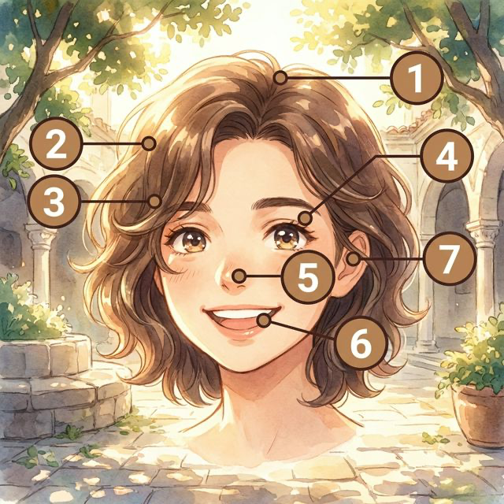
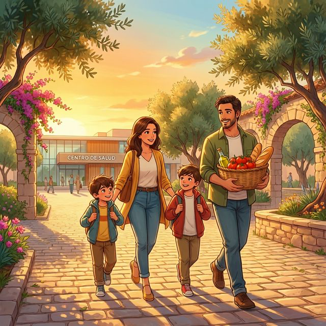
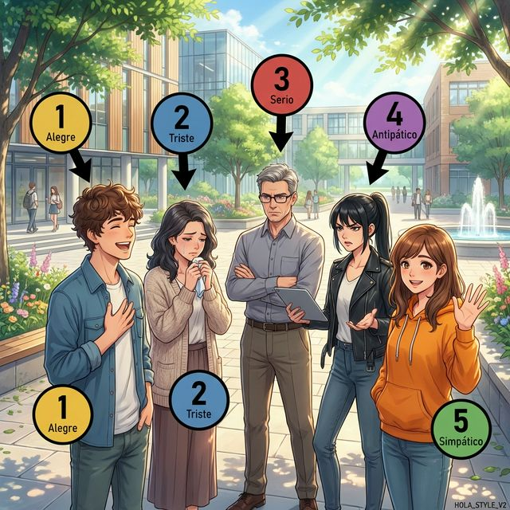
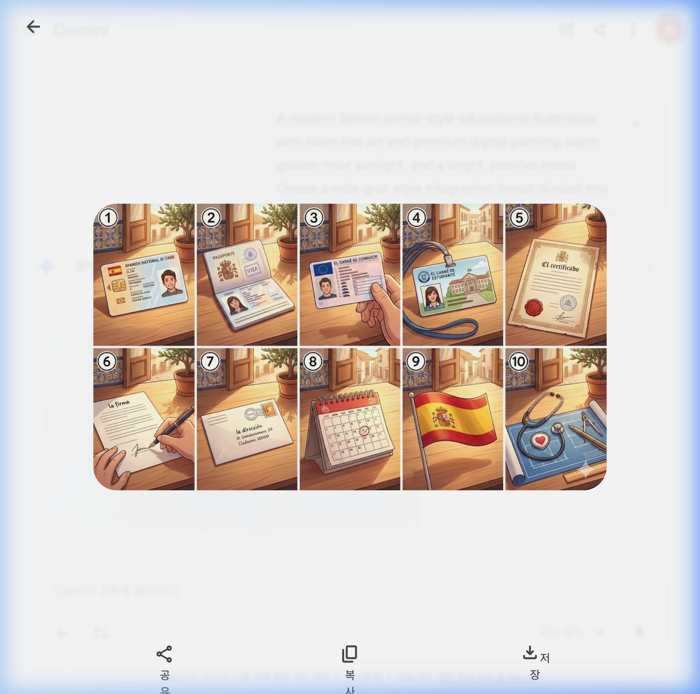
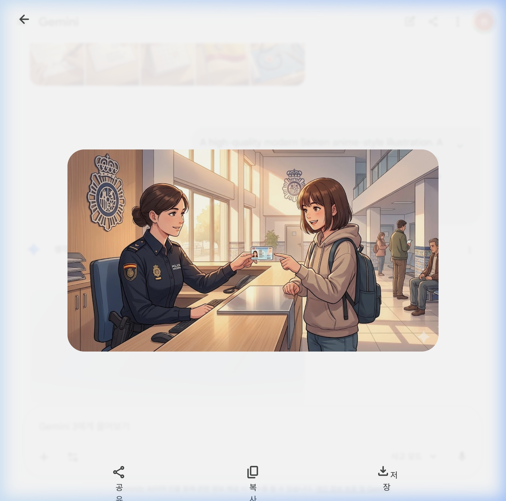
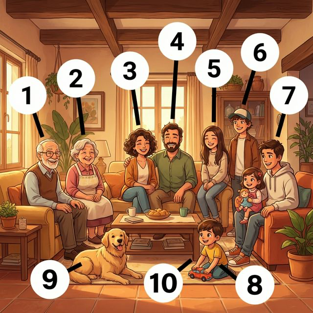
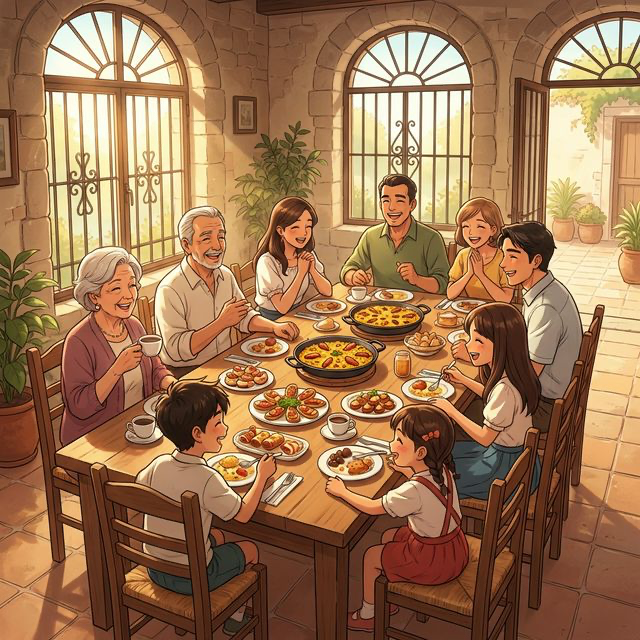

Índice de Contenidos - Nivel A1
Part I. Yo
- Chapter 1: Mi cuerpo y salud
학습 포인트: 신체 부위 명칭, 기초 건강 상태 표현,
tener동사 현재 시제 - Chapter 2: ¿Cómo soy?
학습 포인트: 성격과 외모 묘사, 감정 표현,
ser와estar동사의 기초 쓰임 - Chapter 3: Mi identidad
학습 포인트: 개인 정보 (이름, 국적, 나이), 신분증명서,
llamarse동사
Part II. Mi Vida
- Chapter 4: Familia y amigos 학습 포인트: 가족 구성원 및 친척 명칭, 기초 사회 관계, 소유격 형용사
- Chapter 5: ¡A comer!
학습 포인트: 주요 식재료 및 음식/음료, 식당 주문 표현,
gustar동사 기초 - Chapter 6: Mi casa
학습 포인트: 집의 종류, 방과 가구 명칭, 존재/위치를 나타내는
hay와estar
Part III. Mi Mundo
- Chapter 7: En la escuela 학습 포인트: 학교 시설 및 학용품, 전공 과목, 규칙 동사 현재형
- Chapter 8: El trabajo 학습 포인트: 주요 직업 명칭, 직장 기본 표현
- Chapter 9: Ocio y arte 학습 포인트: 여가 활동, 스포츠, 취미, 예술 관련 기초 어휘
- Chapter 10: De compras 학습 포인트: 의류, 액세서리, 색상, 가격 묻기 등 필수 쇼핑 표현
Part IV. Conectados
- Chapter 11: Medios y tecnología 학습 포인트: 스마트폰, 미디어 기기, 인터넷 및 기초 IT 어휘
- Chapter 12: Viajes y lugares 학습 포인트: 교통수단, 여행지, 장소 및 방향 묻기
Part V. Nuestro Mundo
- Chapter 13: Rutina y salud 학습 포인트: 일상 일과, 시간 표현, 재귀 동사 기초 활용
- Chapter 14: Cultura y celebraciones 학습 포인트: 스페인어권 전통 축제, 공휴일, 전통 음악 및 악기
- Chapter 15: Mi futuro y el mundo
학습 포인트: 미래 계획, 꿈, 환경 보호,
ir a + 동사원형미래 표현
스페인어 A1, A2 시제 및 명령형 관련 핵심 문법 분석
각 챕터별로 다루고 있는 시제, 명령형 및 주요 문법/표현을 정리한 리스트입니다. 시제와 명령형과 관련된 핵심 문법은 🔴 아이콘과 함께 강조 표시했습니다.
📘 Nivel A1
Chapter 1: Mi Cuerpo (A1)
- 🔹 어근/어미 변화 분석 (Stem & Ending Changes)
- 🔴 현재 시제 (Presente) 변화표
- 🔹 주요 용법
- 🔹 1. 소유 (Possession)
- 🔹 2. 나이 (Age)
- 🔹 3. 신체적/생리적 상태 (Physical States)
- 🔴 C. Participio (과거분사) - Irregulares
- 🔹 D. Verbos Regulares (Revisión)
Chapter 2: Como Soy (A1)
- 🔹 Ser vs. Estar: '본질(Essence)'과 '상태(State)'의 구분
- 🔹 어근/어미 변화 분석 (Stem & Ending Analysis)
- 🔴 1. Ser 동사 (본질, 정체성, 지속적 특성) — Presente
- 🔴 현재 시제 (Presente) 필수 불규칙 동사
- 🔴 C. Participio (과거분사) - Irregulares
- 🔹 D. Verbos Regulares (Revisión)
Chapter 3: Mi Identidad (A1)
- 🔹 1. Tener 동사 복습 (가지다 / 나이를 말하다)
- 🔹 B. Ser/Estar 동사 복습 (이다 / 있다)
- 🔴 C. Participio (과거분사) - Irregulares
- 🔹 D. Verbos Regulares (Revisión)
- 🔹 2. 국적 형용사의 성수 변화 (Nacionalidades)
Chapter 4: Familia Amigos (A1)
- 🔹 A. 소유형용사 (Adjetivos Posesivos) — 전치형
- 🔹 B. 지시형용사 (Adjetivos Demostrativos)
Chapter 5: A Comer (A1)
- 🔹 A. 동사 Querer (원하다 / 사랑하다) — 어간 변화 e→ie
- 🔹 B. 동사 Preferir (선호하다) — 어간 변화 e→ie
- 🔴 C. Participio (과거분사) - Irregulares
- 🔹 D. Verbos Regulares (Revisión)
Chapter 6: Mi Casa (A1)
- 🔹 A. Hay vs Estar (존재와 위치) — 핵심 구분
- 🔴 C. Participio (과거분사) - Irregulares
- 🔹 D. 위치 부사 (Adverbios de Lugar)
Chapter 7: En La Escuela (A1)
- 🔴 A. 규칙 동사 현재형 (Presente)
- 🔹 💡 English Bridge: Stem & Ending
- 🔴 C. Participio (과거분사) - Irregulares
- 🔹 D. Verbos Regulares (Revisión)
- 🔹 💡 Korean Tip
- 🔴 B. 필수 불규칙 동사 (Essential Irregulars - Presente)
- 🔴 Mandatory Irregulars (Presente)
- 🔹 C. Saber vs Poder (기초 구분)
Chapter 8: El Trabajo (A1)
- 🔴 A. Ser + 직업 (Presente)
- 🔴 B. Trabajar (일하다) - 현재형 (Presente)
- 🔹 💡 English Bridge: Stem & Ending
- 🔹 💡 Korean Tip
- 🔴 Mandatory Irregulars (Presente)
- 🔴 C. Participio (과거분사) - Irregulares
- 🔹 D. Verbos Regulares (Revisión)
Chapter 9: Ocio Y Arte (A1)
- 🔹 A. Ir (가다) & Venir (오다)
- 🔹 Korean Tip
- 🔴 B. Ir a + 동사원형 (가까운 미래)
- 🔴 C. Participio (과거분사) - Irregulares
Chapter 10: De Compras (A1)
- 🔹 A. 지시사 (Este, Ese, Aquel)
- 🔹 Korean Tip
- 🔹 B. Llevar (입고 있다 / 가지고 가다)
- 🔴 C. Participio (과거분사) - Irregulares
Chapter 11: Medios Y Tecnologia (A1)
- 🔹 직접 목적대명사 (Complemento Directo)
- 🔹 Korean Tip
- 🔴 C. Participio (과거분사) - Irregulares
- 🔹 D. Verbos Regulares (Revisión)
Chapter 12: Viajes Y Lugares (A1)
- 🔹 A. Ir (가다) - 불규칙 동사
- 🔴 B. Ir a + 동사원형 (가까운 미래)
- 🔴 C. Participio (과거분사) - Irregulares
- 🔹 Korean Tip
Chapter 13: Rutina Y Salud (A1)
- 🔹 재귀 동사 (Verbos Reflexivos)
- 🔹 순서 표현 부사 (Connectors)
- 🔴 B. Participio (과거분사) - Irregulares
- 🔹 C. Verbos Regulares (Revisión)
Chapter 14: Cultura Y Celebraciones (A1)
- 🔹 Conocer (알다, 알게 되다) - 1인칭 불규칙
- 🔹 Important Rule
- 🔴 C. Participio (과거분사) - Irregulares
- 🔹 D. Verbos Regulares (Revisión)
Chapter 15: Mi Futuro Y El Mundo (A1)
- 🔴 Ir a + 동사원형 (가까운 미래 / 의도)
- 🔹 Korean Tip
- 🔴 Más sobre el futuro: Verbos Irregulares
- 🔴 C. Participio (과거분사) - Irregulares
- 🔹 D. Verbos Regulares (Revisión)
Chapter 1: Mi cuerpo y salud (A1)
Cervantes: §1 Identidad (신체 특징), §13 Salud (신체 부위별 명칭 및 기초 건강 상태 표현)
1. Opener
학습 목표:
- 머리부터 발끝까지 17개의 신체 부위를 식별하고 스페인어로 이름을 말할 수 있습니다.
- 소유, 나이, 신체적 상태를 표현하기 위한 불규칙 동사
tener(가지다)의 현재 시제 활용을 마스터합니다. - 스페인의 공공 의료 시스템과 건강한 생활 습관에 대한 문화적 배경을 이해합니다.
- 기본적인 건강 상태를 표현하고 아픔을 전달하는 방법을 배웁니다.
¿Sabías que...? (알고 계셨나요?) 스페인 사람들은 인사를 할 때 양쪽 볼에 키스를 하는 'Dos Besos' 관습이 있습니다. 하지만 처음 보는 사이나 공식적인 자리에서는 악수를 하는 것이 일반적입니다. 신체 접촉에 대한 문화적 차이를 이해하는 것은 스페인어 학습의 첫걸음입니다!
2. Vocabulario Esencial: El Cuerpo Humano
신체 부위를 나타내는 필수 어휘입니다. 효과적인 시각적 매핑을 위해 상반신(얼굴)과 전신(몸통/팔다리) 두 부분으로 나누어 학습합니다.
A. 머리와 얼굴 (Cabeza y Cara)
아래 일러스트의 번호(1~7)와 매칭하여 학습해보세요.

| 번호 | Spanish | English Bridge | Korean Tip |
|---|---|---|---|
| 1 | la cabeza | Cephalic (→ head-related) | 신체의 가장 윗부분 |
| 2 | el pelo | — | 머리카락 |
| 3 | la cara | — | 얼굴 |
| 4 | el ojo | Ocular ✅ (→ eye-related) | 시각을 담당하는 부위 |
| 5 | la nariz | Nasal ✅ | 코 |
| 6 | la boca | Vocal (→ mouth-related) | 입 |
| 7 | la oreja | Aural (→ ear-related) | 귀 (겉부분) |
B. 몸통과 팔다리 (Tronco y Extremidades)
아래 전신 일러스트의 번호(1~10)와 표의 번호가 정확히 대응됩니다.

| 번호 | Spanish | English Bridge | Korean Tip |
|---|---|---|---|
| 1 | el cuello | — | 목 |
| 2 | el hombro | — | 어깨 |
| 3 | el brazo | Brace (→ support for arm) | 팔 |
| 4 | la mano | Manual ✅ | 손 (⚠️ 여성 명사: la mano) |
| 5 | el dedo | Digit ✅ (→ finger/toe) | 손가락 또는 발가락 |
| 6 | el pecho | Pectoral ✅ | 가슴 |
| 7 | el estómago | Stomach ✅ | 배, 위장 |
| 8 | la pierna | — | 다리 |
| 9 | la rodilla | — | 무릎 |
| 10 | el pie | Pedal ✅ (→ foot-related) | 발 |
✅ 범례: ✅ 표시된 단어는 영어와 어원이 같거나 매우 유사한 'Cognates'입니다. ⚠️ 표시는 주의가 필요한 단어입니다.
3. Expresiones Útiles
실생활에서 자주 사용하는 유용한 표현들입니다.
A. 건강 상태 묻고 답하기
- ¿Cómo estás? (How are you? / 어떻게 지내니?)
- Estoy bien, gracias. (I'm well, thanks. / 잘 지내요, 감사합니다.)
- Me siento mal. (I feel bad. / 기분이 안 좋아요/몸이 안 좋아요.)
- Estoy resfriado/a. (I have a cold. / 감기에 걸렸어요.)
- 💡 English Bridge: "Resfriado" shares the root with "refrigerate" — both relate to cold!
B. 신체적 감각 표현 (Tener + 명사) 스페인어에서는 영어의 "I am + adjective" 표현 중 많은 부분이 "Tener + noun" 구조로 바뀝니다. 이것은 영어 학습자가 가장 자주 실수하는 패턴입니다.
| 패턴 | 스페인어 | 영어 직역 | 영어 자연스러운 번역 | 한국어 |
|---|---|---|---|---|
| 더위 | Tengo calor. | I have heat. | I'm hot. | 더워요. |
| 추위 | Tengo frío. | I have cold. | I'm cold. | 추워요. |
| 배고픔 | Tengo hambre. | I have hunger. | I'm hungry. | 배고파요. |
| 갈증 | Tengo sed. | I have thirst. | I'm thirsty. | 목말라요. |
| 졸림 | Tengo sueño. | I have sleep. | I'm sleepy. | 졸려요. |
4. Gramática Esencial: El verbo TENER (가지다)
tener 동사는 스페인어에서 가장 중요한 불규칙 동사 중 하나입니다. 소유(possession)뿐만 아니라 나이, 신체적 상태, 그리고 의무를 표현할 때 필수적으로 사용됩니다.
어근/어미 변화 분석 (Stem & Ending Changes)
tener는 영어의 "to have"에 해당하지만, 활용 패턴이 매우 다릅니다.
Stem change rule (어간 모음 변화): e → ie
- Stem(어근)
ten-이 특정 인칭에서tien-으로 변합니다. - 이 변화는 Boot Verb 패턴으로, yo와 nosotros/vosotros를 제외한 인칭에서 발생합니다.
특수 1인칭: yo → tengo (어근에 -g-가 삽입되는 불규칙)
현재 시제 (Presente) 변화표
| 주어 (Subject) | ser (이다) | estar (있다/상태) | ir (가다) |
|---|---|---|---|
| yo | soy | estoy | voy |
| tú | eres | estás | vas |
| él/ella/usted | es | está | va |
| nosotros/as | somos | estamos | vamos |
| vosotros/as | sois | estáis | vais |
| ellos/ellas/ustedes | son | están | van |
| 주어 (Subject) | tener (가지다) | saber (알다) | poder (할 수 있다) |
|---|---|---|---|
| yo | tengo | sé | puedo |
| tú | tienes | sabes | puedes |
| él/ella/usted | tiene | sabe | puede |
| nosotros/as | tenemos | sabemos | podemos |
| vosotros/as | tenéis | sabéis | podéis |
| ellos/ellas/ustedes | tienen | saben | pueden |
💡 English Bridge Tip: Notice that
teneris like English "to have" but with stem changes. In English, "have" only changes to "has" for he/she/it. In Spanish, the stem itself transforms: ten- → tien- (e→ie) in certain persons. The ending also varies per subject.
주요 용법
1. 소유 (Possession)
- Yo tengo un libro. ("I have a book." / 나는 책을 한 권 가지고 있다.)
2. 나이 (Age)
- 스페인어에서는 나이를 "갖는다"라고 표현합니다. 영어의 "I am 20 years old"와 다릅니다.
- Tengo 20 años. (Literally: "I have 20 years." → "I am 20 years old.")
3. 신체적/생리적 상태 (Physical States)
- Tengo hambre. (I have hunger → I am hungry)
- Tengo sed. (I have thirst → I am thirsty)
- Tengo sueño. (I have sleepiness → I am sleepy)
C. Participio (과거분사) - Irregulares (미리보기)
비록 이번 장의 핵심은 아니지만, 나중에 배울 '완료' 시제에서 자주 쓰이는 불규칙 과거분사 형태들을 눈에 익혀두면 좋습니다:
- hacer (하다) → hecho
- poner (놓다) → puesto
- escribir (쓰다) → escrito
- decir (말하다) → dicho
- volver (돌아가다) → vuelto
- abrir (열다) → abierto
- leer (읽다) → leído
- romper (깨다) → roto
D. Verbos Regulares (Revisión)
스페인어 동사의 가장 기본이 되는 규칙 변화 동사들입니다:
- Hablar (말하다): Yo hablo español.
- Comer (먹다): Yo como paella.
- Vivir (살다): Yo vivo en Seúl.
5. Cultura Viva: El Sistema de Salud en España

España cuenta con uno de los sistemas de salud pública más eficientes del mundo, conocido como Seguridad Social. Este sistema garantiza el acceso universal a la atención médica para todos los ciudadanos y residentes.
Cada barrio tiene su propio Centro de Salud, donde los médicos de cabecera atienden las consultas generales. La medicina preventiva y la cultura de la Dieta Mediterránea son pilares fundamentales de la longevidad en España. Además, las Farmacias son fácilmente identificables por su cruz verde luminosa y ofrecen asesoramiento profesional constante. Es común que los españoles caminen mucho a diario, lo que contribuye a mantener una buena salud física general.
[한국어 번역] 스페인은 사회 보장(Seguridad Social) 제도로 알려진 세계에서 가장 효율적인 공공 의료 시스템 중 하나를 보유하고 있습니다. 이 시스템은 모든 시민과 거주자에게 보편적인 의료 서비스를 보장합니다.
동네마다 **보건소(Centro de Salud)**가 있어 주치의가 일반적인 진료를 담당합니다. 예방 의학과 지중해식 식단 문화는 스페인 장수의 핵심 요소입니다. 또한, **약국(Farmacias)**은 밝게 빛나는 초록색 십자가 모양으로 쉽게 찾을 수 있으며 상시 전문적인 상담을 제공합니다. 스페인 사람들이 매일 많이 걷는 습관 또한 전반적인 신체 건강을 유지하는 데 기여합니다.
6. Práctica
A. Match the word (알맞은 단어를 연결하세요)
- Cabeza → ( )
- Mano → ( )
- Ojo → ( )
- Pie → ( )
- Nariz → ( )
a. Eye / b. Foot / c. Hand / d. Head / e. Nose
B. Fill in the blanks with the correct form of TENER (빈칸에 tener 동사의 알맞은 형태를 쓰세요)
- Yo ______________________ mucho calor hoy.
- ¿Tú ______________________ hambre ahora?
- Nosotros ______________________ tres gatos.
- Ella ______________________ veinticinco años.
- Vosotros ______________________ sed.
C. 번역 연습 (스페인어로 번역하세요)
- 나는 졸려요. (............................................................)
- 우리들은 목말라요. (............................................................)
- 너는 차를 가지고 있니? (............................................................)
- 그들은 배고프지 않아요. (............................................................)
- 루시아는 19살입니다. (............................................................)
7. Lectura 📖
Mi rutina de salud (나의 건강 루틴)
Hola, me llamo Carlos. Yo cuido mucho mi cuerpo. Todos los días camino por el parque durante treinta minutos. A veces tengo dolor de espalda, pero hago ejercicio para sentirme mejor. Bebo mucha agua porque siempre tengo sed después de correr. Mi hermana Sofía tiene una dieta muy sana; ella come muchas frutas y verduras frescas cada día. Nosotros tenemos suerte de vivir cerca de un Centro de Salud donde nuestro médico de cabecera nos atiende con mucha amabilidad.
Preguntas (질문)
- ¿Qué hace Carlos todos los días? (카를로스는 매일 무엇을 하나요?)
- ¿Por qué Carlos bebe mucha agua? (카를로스는 왜 물을 많이 마시나요?)
- ¿Cómo es la dieta de Sofía? (소피아의 식단은 어떤가요?)
[한국어 번역] 안녕하세요, 제 이름은 카를로스입니다. 저는 제 몸을 아주 소중히 여깁니다. 매일 공원에서 30분 동안 산책합니다. 가끔 등 통증이 있지만 기분이 나아지기 위해 운동을 합니다. 달리기 후에는 항상 목이 말라서 물을 많이 마십니다. 제 여동생 소피아는 매우 건강한 식단을 가지고 있습니다. 그녀는 매일 신선한 과일과 채소를 많이 먹습니다. 우리는 주치의 선생님이 친절하게 진료해 주시는 보건소 근처에 살아서 운이 좋습니다.
8. Diálogo
En el médico (의사 진찰)
Situación: Pedro visita al doctor en un Centro de Salud en Madrid porque no se siente bien. El doctor le hace preguntas básicas sobre sus síntomas físicos para diagnosticar su malestar.
상황: 페드로는 몸이 좋지 않아 마드리드의 보건소(Centro de Salud)에서 의사 선생님을 만납니다. 의사 선생님은 그의 상태를 진단하기 위해 신체적 증상에 대한 기본적인 질문을 합니다.
| 🇪🇸 Español | 🇰🇷 한국어 |
|---|---|
| Doctor: Buenos días, Pedro. ¿Cómo estás hoy? | 의사: 좋은 아침입니다, 페드로. 오늘 어떠신가요? |
| Pedro: Buenos días, doctor. Me siento un poco mal. | 페드로: 좋은 아침입니다, 선생님. 몸이 좀 안 좋아요. |
| Doctor: ¿Qué tienes? ¿Te duele la cabeza? | 의사: 어디가 아픈가요? 머리가 아픈가요? |
| Pedro: Sí, me duele mucho la cabeza y tengo calor. | 페드로: 네, 머리가 아주 많이 아프고 열이 나요. |
| Doctor: Entiendo. ¿Tienes tos o dolor de garganta? | 의사: 알겠습니다. 기침이나 목 통증이 있나요? |
| Pedro: No tengo tos, pero tengo mucho sueño. | 페드로: 기침은 없는데, 잠이 너무 많이 와요. |
| Doctor: Vamos a ver. ¿Tienes dolor de estómago también? | 의사: 어디 봅시다. 배도 아프세요? |
| Pedro: No, solo me duele la cabeza y los ojos. | 페드로: 아니요, 머리와 눈만 아파요. |
| Doctor: Tienes un resfriado. Necesitas beber mucha agua y descansar. | 의사: 감기에 걸리셨네요. 물을 많이 마시고 쉬어야 합니다. |
| Pedro: Muchas gracias, doctor. Hasta luego. | 페드로: 정말 감사합니다, 선생님. 안녕히 계세요. |
| Doctor: Hasta luego, Pedro. ¡Cuídate! | 의사: 안녕히 가세요, 페드로. 몸조리 잘하세요! |
9. Repaso
이번 장에서 배운 핵심 내용을 확인해보세요.
- 머리, 눈, 코, 입, 손, 발 등 17개 신체 부위 명칭을 외웠나요?
-
tener동사의 불규칙 변화(tengo, tienes, tiene, tenemos, tenéis, tienen)를 정확히 쓸 수 있나요? - 어간 모음 변화(e→ie) Boot Verb 패턴을 이해하셨나요?
- '배고프다', '목마르다', '덥다' 등 신체적 상태를 tener + 명사 구문으로 표현할 수 있나요?
- '매우 배고프다' = Tengo mucha hambre (muy가 아닌 mucho/a 사용)를 기억하시나요?
- 스페인의 공공 의료 시스템인 'Seguridad Social'의 특징을 이해하셨나요?
- 보건소(Centro de Salud)와 약국(Farmacia)의 역할을 알고 계신가요?
10. Cierre
축하합니다! 🎉 첫 번째 장을 성공적으로 마쳤습니다!
우리 몸의 소중함을 알고 이를 스페인어로 표현하는 것은 매우 기초적이면서도 중요한 과정입니다. 특히 tener 동사는 스페인어에서 가장 빈번하게 등장하는 핵심 동사로, 소유부터 나이, 신체 상태까지 정말 다양한 상황에서 사용됩니다. 지금 배운 어간 모음 변화(e→ie) 패턴은 querer, preferir 등 앞으로 만나게 될 수많은 동사에도 동일하게 적용되니, 입에 착 붙을 때까지 반복 연습해보세요.
다음 장에서는 우리의 성격과 감정에 대해 이야기해보겠습니다. ¡Ánimo! (힘내세요!)
11. Soluciones
6. Práctica - A. Match the word
- 1-d, 2-c, 3-a, 4-b, 5-e
6. Práctica - B. Fill in the blanks
- tengo, 7. tienes, 8. tenemos, 9. tiene, 10. tenéis
6. Práctica - C. 번역 연습
- Tengo sueño., 12. Tenemos sed., 13. ¿Tienes (un) coche?, 14. No tienen hambre., 15. Lucía tiene 19 años.
7. Lectura - Preguntas
- Carlos camina por el parque durante treinta minutos. (카를로스는 매일 공원에서 30분 동안 산책합니다.)
- Porque siempre tiene sed después de correr. (달리기 후에는 항상 목이 마르기 때문입니다.)
- Su dieta es muy sana; come muchas frutas y verduras frescas cada día. (그녀의 식단은 매우 건강합니다. 매일 신선한 과일과 채소를 많이 먹습니다.)
Chapter 2: ¿Cómo soy? (A1)
Cervantes: §2 Persona: 신체적 외모 기술 및 기본적인 성격, 기분 상태 표현
1. Opener
¿Cómo eres tú? 이 장에서는 나와 주변 사람들의 성격, 외모, 그리고 현재의 기분과 감정을 묘사하는 방법을 배웁니다. 스페인어에서 가장 중요한 두 동사, ser와 estar의 결전이 시작됩니다!
학습 목표
- 성격과 외모를 나타내는 핵심 형용사 10개 이상 습득
- '본질'을 나타내는 ser 동사와 '상태'를 나타내는 estar 동사의 완벽 구분
- 긍정형과 부정형을 사용한 자기소개 및 타인 묘사
- 스페인의 인사 문화(Dos besos) 이해
[!TIP] ¿Sabías que...? 스페인 사람들은 처음 만났을 때나 인사를 할 때 양쪽 볼에 가볍게 키스를 하는 'Dos besos' 문화를 가지고 있습니다. 이건 연인 사이뿐만 아니라 친구, 가족, 심지어 처음 본 사이에서도 흔히 일어나는 친근함의 표시랍니다!
2. Vocabulario Esencial
아래 삽화 속 인물들의 특징을 살펴보며 필수 형용사를 익혀보세요. 효과적인 시각적 매핑을 위해 성격과 외모 두 부분으로 나누어 학습합니다.
A. 성격 (Personalidad)
삽화의 번호(1~5)가 아래 어휘 표와 정확히 대응됩니다.

| 번호 | Spanish | English Bridge | Korean Tip |
|---|---|---|---|
| 1 | alegre | Cheerful / Allegro (mus.) ✅ | 활기찬 느낌 |
| 2 | triste | Triste (fr.) → Sad | 슬픈 기분 |
| 3 | serio / seria | Serious ✅ | -o/-a 성수 변화 주의 |
| 4 | antipático / -a | Antipathy → Unpleasant | '비호감인' 느낌 |
| 5 | simpático / -a | Sympathetic → Nice / Friendly | '호감가는' 느낌 |
B. 외모와 지능 (Apariencia e Inteligencia)
삽화의 번호(1~5)가 아래 어휘 표와 정확히 대응됩니다.

| 번호 | Spanish | English Bridge | Korean Tip |
|---|---|---|---|
| 1 | alto / alta | Altitude → Tall ✅ | 키가 큼 |
| 2 | bajo / baja | Base → Short / Low | 키가 작음 |
| 3 | delgado / -a | — (Thin / Slender) | 마른 체형 |
| 4 | gordo / gorda | — (Fat / Chubby) | 통통한 체형 |
| 5 | inteligente | Intelligent ✅ | 완벽한 인지어 |
✅ 표시된 단어는 영어와 어원이 같거나 매우 유사한 'Cognates'입니다.
3. Expresiones Útiles
일상에서 나를 표현하거나 남을 물어볼 때 사용하는 핵심 문장들입니다.
A. 성격/외모 묻고 답하기 (Ser)
- ¿Cómo eres? (What are you like? / 너는 어떤 사람이니?) — 성격/외모
- Soy una persona alegre. (I am a cheerful person. / 나는 밝은 사람이야.)
- Mi amigo es muy simpático. (My friend is very friendly. / 내 친구는 정말 성격이 좋아.)
- 💡 English Bridge: "Simpático" looks like "sympathetic" but means "friendly/nice" — a False Friend to watch!
B. 기분/상태 묻고 답하기 (Estar)
- ¿Cómo estás? (How are you? / 지금 기분 어때?) — 상태/기분
- Estoy un poco cansado. (I am a bit tired. / 나는 좀 피곤해.)
- Ella está muy feliz hoy. (She is very happy today. / 그녀는 오늘 아주 행복해 보여.)
4. Gramática Esencial
Ser vs. Estar: '본질(Essence)'과 '상태(State)'의 구분
스페인어의 'be 동사'는 두 가지로 나뉩니다. 이를 구분하는 것이 초급 단계의 가장 큰 산입니다.
어근/어미 변화 분석 (Stem & Ending Analysis)
English Bridge: English has one "to be" verb. Spanish splits it into two: ser (permanent) and estar (temporary). Think of it as:
- SER = "I am who I am" (identity, origin, personality, appearance)
- ESTAR = "I am how/where I am" (mood, health, location)
1. Ser 동사 (본질, 정체성, 지속적 특성) — Presente
ser는 완전 불규칙 동사로 어근 자체가 인칭마다 변합니다.
| 주어 (Subject) | ser | English |
|---|---|---|
| yo | soy | I am |
| tú | eres | you are |
| él/ella/usted | es | he/she is, you (formal) are |
| nosotros/as | somos | we are |
| vosotros/as | sois | you all are |
| ellos/ellas/ustedes | son | they are, you all (formal) are |
💡 Tip:
ser는 영어의 "am/are/is"처럼 인칭마다 완전히 다른 형태를 갖습니다. 이것은 외울 수밖에 없으니, 반복 연습이 유일한 방법입니다!
현재 시제 (Presente) 필수 불규칙 동사
스페인어에서 가장 빈도가 높고 중요한 불규칙 동사 6가지입니다.
필수 불규칙 (그룹 1: ser, estar, ir)
| 주어 | ser (이다) | estar (있다) | ir (가다) |
|---|---|---|---|
| yo | soy | estoy | voy |
| tú | eres | estás | vas |
| él/ella/ud. | es | está | va |
| nosotros/as | somos | estamos | vamos |
| vosotros/as | sois | estáis | vais |
| ellos/ellas/uds. | son | están | van |
필수 불규칙 (그룹 2: tener, saber, poder)
| 주어 | tener (가지다) | saber (알다) | poder (수있다) |
|---|---|---|---|
| yo | tengo | sé | puedo |
| tú | tienes | sabes | puedes |
| él/ella/ud. | tiene | sabe | puede |
| nosotros/as | tenemos | sabemos | podemos |
| vosotros/as | tenéis | sabéis | podéis |
| ellos/ellas/uds. | tienen | saben | pueden |
💡 English Bridge Tip: Notice that
ser,estar, andirare completely irregular (like English "am/are/is" vs "was").saberhas a special yo form (sé), andpoderhas a stem change (o→ue). [!IMPORTANT] Korean Tip: 한국어로는 둘 다 "~이다/있다"로 번역되지만, **"내 친구는 친절하다(Ser)"**와 **"내 친구는 지금 화가 났다(Estar)"**의 차이를 생각하면 이해가 빠릅니다. 성격은 Ser, 기분은 Estar입니다!
C. Participio (과거분사) - Irregulares (미리보기)
비록 이번 장의 핵심은 아니지만, 나중에 배울 '완료' 시제에서 자주 쓰이는 불규칙 과거분사 형태들을 눈에 익혀두면 좋습니다:
- hacer (하다) → hecho
- poner (놓다) → puesto
- escribir (쓰다) → escrito
- decir (말하다) → dicho
- volver (돌아가다) → vuelto
- abrir (열다) → abierto
- leer (읽다) → leído
- romper (깨다) → roto
D. Verbos Regulares (Revisión)
스페인어 동사의 가장 기본이 되는 규칙 변화 동사들입니다:
- Hablar (말하다): Yo hablo español.
- Comer (먹다): Yo como paella.
- Vivir (살다): Yo vivo en Seúl.
5. Cultura Viva: Dos Besos 💋
스페인 사람들의 따뜻한 인사법을 알아볼까요?
¡Dos besos para todos!
En España, la forma más común de saludar, especialmente entre mujeres o entre un hombre y una mujer, es dándose dos besos en las mejillas. No son besos reales con los labios, sino un ligero contacto de mejilla con mejilla mientras se hace el sonido del beso. Se empieza siempre por la mejilla derecha.
Este gesto refleja la calidez y la naturaleza social de la cultura española. A diferencia de otras culturas donde se mantiene una distancia física, en España el contacto cercano es una señal de confianza y amistad. Incluso en entornos profesionales menos formales, los dos besos son normales para saludar a colegas o conocidos. Entre hombres que no son familiares cercanos, lo habitual suele ser un apretón de manos o un abrazo corto si hay mucha confianza.
[한국어 번역] 스페인에서 가장 일반적인 인사법은, 특히 여성 사이나 남성과 여성 사이에서, 양쪽 볼에 두 번의 키스를 하는 것입니다. 이는 입술을 직접 대는 실제 키스가 아니라, 볼과 볼을 가볍게 맞대며 입으로 키스 소리를 내는 방식입니다. 항상 오른쪽 볼부터 시작합니다.
이 제스처는 스페인 문화 특유의 따뜻함과 사회성을 잘 보여줍니다. 신체적 거리를 유지하는 다른 문화권과 달리, 스페인에서는 가까운 접촉이 신뢰와 우정의 표시입니다. 심지어 격식이 덜한 전문적인 환경에서도 동료나 지인을 만날 때 두 번의 키스로 인사하는 것이 일반적입니다. 가족 관계가 아닌 남성들 사이에서는 보통 악수를 하거나, 아주 친한 경우에는 가벼운 포옹을 합니다.

6. Práctica
A. Match the word (알맞은 보기를 연결하세요)
- alegre (Cheerful)
- alto (Tall)
- serio (Serious)
- simpático (Friendly)
- delgado (Thin)
(Options: a. serious / b. friendly / c. cheerful / d. thin / e. tall)
B. Completa con 'ser' o 'estar' (알맞은 동사를 빈칸에 쓰세요)
- Yo ______________________ de Corea del Sur. (본질: 국적)
- Mi hermano ______________________ muy alto. (본질: 외모)
- Hoy nosotros ______________________ muy felices. (상태: 기분)
- ¿Cómo ______________________ tú hoy? (상태: 안부)
- Elena ______________________ en la biblioteca. (상태: 위치)
C. 번역 연습 (스페인어로 옮겨보세요)
- 나는 똑똑한 사람이야. (............................................................)
- 너는 오늘 슬프니? (............................................................)
- 페드로는 정말 성격이 좋아(simpático). (............................................................)
- 우리는 지금 피곤해(cansados). (............................................................)
- 그녀는 아주 예쁘다. (............................................................)
7. Lectura 📖
Mi familia es especial
Hola, me llamo Sofía. En mi familia somos cuatro personas. Mi padre es muy alto y serio, pero muy inteligente. Mi madre es alegre y siempre está feliz. Mi hermano menor, Pablo, es un poco bajo y muy simpático. Yo soy una persona tranquila y hoy estoy muy contenta porque es mi cumpleaños. ¡Somos una familia muy unida!
Preguntas (질문)
- ¿Cómo es el padre de Sofía? (소피아의 아버지는 어떤 분인가요? — 성격과 외모)
- ¿Cómo es Pablo? (파블로는 어떤 사람인가요?)
- ¿Por qué Sofía está contenta hoy? (소피아가 오늘 기분이 좋은 이유는 무엇인가요?)
[한국어 번역]
우리 가족은 특별해요
안녕, 내 이름은 소피아야. 우리 가족은 네 명이야. 우리 아버지는 키가 매우 크고 진지하시지만, 정말 똑똑하셔. 우리 어머니는 밝으시고 항상 행복해하셔. 내 남동생 파블로는 키가 좀 작고 정말 성격이 좋아. 나는 차분한 사람이고, 오늘은 내 생일이라서 정말 기뻐. 우리는 정말 화목한 가족이야!
8. Diálogo
¿Cómo estás hoy? (오늘 기분 어때?)
Situación: Pedro se encuentra con su amiga Lucía en la universidad. Pedro nota que Lucía se ve un poco diferente hoy y le pregunta por su estado de ánimo y su salud.
상황: 페드로는 대학교에서 친구 루시아를 만납니다. 페드로는 오늘 루시아의 모습이 평소와 조금 다르다는 것을 느끼고, 그녀의 기분과 건강 상태에 대해 묻습니다.
| 🇪🇸 Español | 🇰🇷 한국어 |
|---|---|
| Pedro: ¡Hola, Lucía! ¿Cómo estás hoy? | 페드로: 안녕, 루시아! 오늘 기분 어때? |
| Lucía: Hola, Pedro. Estoy un poco cansada. | 루시아: 안녕, 페드로. 좀 피곤해. |
| Pedro: ¿Por qué? ¿Estás enferma? | 페드로: 왜? 어디 아파? |
| Lucía: No, no estoy enferma, pero tengo mucho trabajo. | 루시아: 아니, 아픈 건 아닌데 일이 너무 많아. |
| Pedro: ¡Qué pena! Pero hoy estás muy guapa. | 페드로: 안타깝네! 근데 너 오늘 되게 예쁘다. |
| Lucía: Gracias. Eres muy amable. | 루시아: 고마워. 넌 참 친절하구나. |
| Pedro: ¿Y tu hermano? ¿Cómo está él? | 페드로: 네 남동생은? 그는 어떻게 지내? |
| Lucía: Él está muy alegre porque tiene un perro nuevo. | 루시아: 그는 새 강아지가 생겨서 아주 기분이 좋아. |
9. Repaso
이 장에서 배운 내용을 확인해 보세요:
- 사람의 외모와 성격을 묘사하는 형용사 10개 이상을 알고 있다.
- Ser 동사와 Estar 동사의 변화형을 모두 외웠다.
- 언제 Ser(본질/정체성)를 쓰고 언제 Estar(상태/위치)를 쓰는지 명확히 구분할 수 있다.
-
estar의 어간est-+ 강세 어미 패턴(-oy, -ás, -á, -amos, -áis, -án)을 이해했다. - 스페인의 인사 문화 'Dos besos'의 특징을 설명할 수 있다.
10. Cierre
¡Buen trabajo! 🎉 성격과 외모를 표현하는 법을 배우면서 여러분은 이제 자신을 스페인어로 소개할 수 있게 되었습니다.
성격은 '본질(Ser)', 기분은 '상태(Estar)'라는 핵심 원칙만 기억한다면 여러분의 스페인어 실력은 한 단계 더 도약할 것입니다. 이 두 동사의 구분은 영어에는 없는 스페인어 고유의 특성이므로, 다양한 예문을 통해 꾸준히 연습하는 것이 중요합니다.
다음 장에서는 우리의 '정체성'과 '국적'에 대해 더 자세히 알아보겠습니다. ¡Hasta pronto!
11. Soluciones
6. Práctica - A. Match the word
- 1-c, 2-e, 3-a, 4-b, 5-d
6. Práctica - B. Completa
- soy, 7. es, 8. estamos, 9. estás, 10. está
6. Práctica - C. 번역 연습
- Soy una persona inteligente., 12. ¿Estás triste hoy?, 13. Pedro es muy simpático., 14. (Nosotros) estamos cansados ahora., 15. Ella es muy guapa.
7. Lectura - Preguntas
- Es muy alto y serio, pero muy inteligente. (키가 매우 크고 진지하시지만, 정말 똑똑하십니다.)
- Es un poco bajo y muy simpático. (키가 좀 작고 정말 성격이 좋습니다.)
- Hoy está muy contenta porque es su cumpleaños. (오늘은 그녀의 생일이기 때문에 매우 기뻐합니다.)
Chapter 3: Mi identidad (A1)
Cervantes: §1 Identidad: 데이터 수집 및 신분 확인을 위한 기본 정보 (이름, 나이, 국적, 직업, 주소 및 주요 신분 증명 서류)
1. Opener
¿Quién eres tú? (당신은 누구인가요?) 언어를 배우는 첫걸음은 나 자신을 정의하는 정보를 표현하는 것입니다. 이름, 국적, 나이, 그리고 우리가 누구인지 증명하는 서류들에 대해 배웁니다. 스페인어권 국가에서 가장 중요한 신분증인 'DNI'에 대해서도 알아봅시다.
학습 목표
- 개인 정보(이름, 국적, 직업 등) 관련 필수 어휘 10개 습득
- 숫자(1-100) 표현 익히기
- 'Tener' 동사를 활용한 나이 표현 및 소유 표현
- 국적 형용사의 성수 변화 이해
- 스페인의 신분증(DNI) 문화 이해
[!TIP] ¿Sabías que...? 스페인에서는 만 14세 이상의 모든 국민이 'DNI(Documento Nacional de Identidad)'를 반드시 휴대해야 합니다. 이는 단순한 신분증 이상의 의미를 지니며, 모든 행정 절차의 핵심이 됩니다.
2. Vocabulario Esencial
개인 정보를 나타내는 핵심 서류와 항목들입니다. 삽화의 번호(①~⑩)가 아래 어휘 표와 정확히 대응됩니다.

| 번호 | Spanish | English Bridge | Korean Tip |
|---|---|---|---|
| 1 | el DNI / el carné | ID Card | 신분증 (스페인) |
| 2 | el pasaporte | Passport ✅ | 완벽한 인지어 |
| 3 | el carné de conducir | License (Conducting) | 운전면허증 |
| 4 | el carné de estudiante | Student ID | 학생증 |
| 5 | el certificado | Certificate ✅ | 증명서 |
| 6 | la firma | Firm (Confirmation) | 서명 / 사인 |
| 7 | la dirección | Direction → Address ✅ | 주소 |
| 8 | la fecha de nacimiento | Date of Birth | 태어난 날짜 |
| 9 | la nacionalidad | Nationality ✅ | 국적 |
| 10 | la profesión | Profession ✅ | 직업 |
✅ 표시된 단어는 영어와 거의 동일하거나 어원이 같아 기억하기 쉬운 어휘입니다.
3. Expresiones Útiles
나의 데이터를 말하거나 타인에게 질문할 때 꼭 필요한 표현입니다.
A. 개인 정보 묻고 답하기
- ¿Cómo te llamas? (What is your name? / 이름이 뭐니?)
- Me llamo Jin. (My name is Jin. / 내 이름은 진이야.)
- 💡 English Bridge: "Llamarse" literally means "to call oneself" — Me llamo = "I call myself"
- ¿Cuántos años tienes? (How old are you? / 몇 살이니?)
- Tengo veinte años. (I am twenty years old. / 나는 스무 살이야.)
- 💡 English Bridge: Spanish uses "I have 20 years" instead of "I am 20 years old"
B. 출신과 직업
- ¿De dónde eres? (Where are you from? / 어디 출신이니?)
- Soy coreano / coreana. (I am Korean. / 나는 한국 사람이야.)
- Mi dirección es... (My address is... / 제 주소는...입니다.)
4. Gramática Esencial
1. Tener 동사 복습 (가지다 / 나이를 말하다)
스페인어에서는 나이를 영어처럼 "am"이 아닌 "have"로 표현합니다. Ch.1에서 배운 tener를 정체성 표현에 활용합니다.
English Bridge: "I have 20 years" (Tengo 20 años) vs. English "I am 20 years old" — Spanish treats age as something you possess.
| 주어 (Subject) | tener | English |
|---|---|---|
| yo | tengo | I have |
| tú | tienes | you have |
| él/ella/usted | tiene | he/she has |
| nosotros/as | tenemos | we have |
| vosotros/as | tenéis | you all have |
| ellos/ellas/ustedes | tienen | they have |
B. Ser/Estar 동사 복습 (이다 / 있다)
[!TIP] English Bridge Tip: Both
serandestarmean "to be." Think ofseras "What is it?" (permanent) andestaras "How/Where is it?" (temporary).
C. Participio (과거분사) - Irregulares (미리보기)
비록 이번 장의 핵심은 아니지만, 나중에 배울 '완료' 시제에서 자주 쓰이는 불규칙 과거분사 형태들을 눈에 익혀두면 좋습니다:
- hacer (하다) → hecho
- poner (놓다) → puesto
- escribir (쓰다) → escrito
- decir (말하다) → dicho
- volver (돌아가다) → vuelto
- abrir (열다) → abierto
- leer (읽다) → leído
- romper (깨다) → roto
D. Verbos Regulares (Revisión)
스페인어 동사의 가장 기본이 되는 규칙 변화 동사들입니다:
- Hablar (말하다): Yo hablo español.
- Comer (먹다): Yo como paella.
- Vivir (살다): Yo vivo en Seúl.
2. 국적 형용사의 성수 변화 (Nacionalidades)
국적을 나타내는 형용사는 꾸며주는 주어의 성(남자/여자)과 수(단수/복수)에 따라 바뀝니다.
English Bridge: Unlike English where "Korean" stays the same regardless of gender, Spanish nationality adjectives change endings to match the subject.
- 남성(-o) / 여성(-a): coreano / coreana, español / española
- 자음으로 끝나는 경우: alemán / alemana, francés / francesa
- -e나 -ista로 끝나는 경우 (성 변화 없음): estadounidense, belga, optimista
5. Cultura Viva: El DNI en España 🪪

스페인 사람들에게 없어서는 안 될 가장 중요한 카드, DNI를 알아봅시다.
Mucho más que un plástico
El DNI (Documento Nacional de Identidad) es la tarjeta más importante para un español. Es un documento inteligente que contiene un chip con todos los datos personales y la firma digital. En España, es obligatorio para todos los ciudadanos mayores de 14 años. Lo necesitas para todo: abrir una cuenta en el banco, entrar a un examen en la universidad, recoger un paquete en correos o viajar por los países de la Unión Europea sin necesidad de pasaporte.
La policía nacional es la encargada de emitir este documento. Cada DNI tiene un número único de ocho cifras y una letra al final. Este número es para toda la vida. Por eso, cuando te preguntan "¿Cuál es tu número?", normalmente se refieren al número de tu DNI.
[한국어 번역] DNI(국가 신분증)는 스페인 사람에게 가장 중요한 카드입니다. 모든 개인 정보와 디지털 서명이 담긴 칩이 포함된 스마트 카드입니다. 스페인에서는 14세 이상의 모든 시민이 의무적으로 소지해야 합니다. 은행 계좌를 개설하거나, 대학교 시험을 치르거나, 우체국에서 택배를 찾거나, 여권 없이 유럽 연합(EU) 국가를 여행할 때 반드시 필요합니다.
국가 경찰이 이 서류를 발급하는 책임을 집니다. 각 DNI에는 8자리 숫자와 마지막에 한 글자의 알파벳으로 구성된 고유 번호가 있습니다. 이 번호는 평생 변하지 않습니다. 그래서 누군가 "¿Cuál es tu número?(당신의 번호가 무엇입니까?)"라고 묻는다면, 보통은 당신의 DNI 번호를 의미합니다.
6. Práctica
A. Completa con la forma correcta de 'Tener' (Tener 동사를 알맞게 변화시키세요)
- Yo ______________________ veinticinco años.
- Juan y Ana ______________________ un pasaporte nuevo.
- ¿Cuántos años ______________________ tú?
- Nosotros ______________________ clase de español hoy.
- Usted ______________________ una firma muy bonita.
B. 국적 형용사 바꾸기 (알맞은 성수 변화를 적용하세요)
- Pablo es (España) ______________________
- Mis amigas son (Corea) ______________________
- Ella es (Francia) ______________________
- Nosotros somos (Alemania) ______________________
- Ellos son (Estados Unidos) ______________________
C. 번역 연습 (스페인어로 옮겨보세요)
- 내 이름은 마리아이고, 나는 스페인 사람이야. (............................................................)
- 친구는 몇 살이니? (............................................................)
- 제 주소는 마드리드, 7번가입니다. (............................................................)
- 여기 내 신분증(DNI)이 있어. (............................................................)
- 우리는 똑똑한 학생(estudiantes)들이야. (............................................................)
7. Lectura 📖
Una nueva vida en Madrid
Hola, soy Park Min-su. Soy coreano de Seúl, pero ahora vivo en Madrid para estudiar. Tengo veintidós años. En mi mochila siempre llevo mi pasaporte y mi carné de estudiante de la Universidad Complutense. Mi dirección en Madrid es la calle Mayor, número 10. Mi profesión es estudiante de arquitectura. ¡Me encanta mi nueva vida en España!
Preguntas (질문)
- ¿Cuál es la nacionalidad y la edad de Min-su? (민수의 국적과 나이는?)
- ¿Qué lleva siempre en su mochila? (가방 속에 무엇을 가지고 다니나요?)
- ¿Cuál es su profesión y su dirección? (직업과 주소는?)
[한국어 번역] 마드리드에서의 새로운 삶 안녕하세요, 저는 박민수입니다. 서울 출신의 한국인이지만, 지금은 공부를 위해 마드리드에 살고 있습니다. 저는 22살입니다. 제 배낭 속에는 항상 여권과 마드리드 콤플루텐세 대학교 학생증이 들어 있습니다. 마드리드에서의 제 주소는 마요르 거리 10번지입니다. 제 직업은 건축학도입니다. 스페인에서의 제 새로운 삶이 정말 즐겁습니다!
8. Diálogo
En la comisaría (경찰서에서)
Situación: Elena ha perdido su cartera en el parque y va a la comisaría de policía para informar del problema. El oficial de policía le pide sus datos personales para completar el formulario.
상황: 엘레나는 공원에서 지갑을 잃어버리고 경찰서에 신고하러 갑니다. 경찰관은 양식을 작성하기 위해 그녀의 개인 정보를 묻습니다.
| 🇪🇸 Español | 🇰🇷 한국어 |
|---|---|
| Oficial: Buenos días. ¿Cómo se llama usted? | 경찰관: 안녕하세요. 성함이 어떻게 되시나요? |
| Elena: Me llamo Elena Sánchez García. | 엘레나: 엘레나 산체스 가르시아입니다. |
| Oficial: ¿Cuál es su nacionalidad? | 경찰관: 국적이 어디신가요? |
| Elena: Soy española, de Sevilla. | 엘레나: 스페인 사람이고, 세비야 출신입니다. |
| Oficial: ¿Tiene su número de DNI a mano? | 경찰관: DNI 번호를 알고 계신가요? |
| Elena: Sí, es el 12345678-X. | 엘레나: 네, 12345678-X입니다. |
| Oficial: ¿Y cuál es su dirección actual? | 경찰관: 현재 주소는 어떻게 되시나요? |
| Elena: Vivo en la calle Alcalá, número 45. | 엘레나: 알칼라 거리 45번에 살고 있습니다. |
| Oficial: Muy bien. Por favor, firme aquí. | 경찰관: 좋습니다. 여기에 서명해 주세요. |
9. Repaso
이 장에서 배운 내용을 확인해 보세요:
- 이름, 나이, 주소, 직업을 스페인어로 말할 수 있다.
- Tener 동사의 현재 변화형(tengo, tienes, tiene, tenemos, tenéis, tienen)을 모두 외웠다.
- 나이 표현 시 tener + 숫자 + años 구문을 사용할 수 있다.
- 국적 형용사의 성수 변화(-o/-a, 자음 어미, -e/-ista)를 이해한다.
- 스페인 DNI의 중요성과 특징을 설명할 수 있다.
10. Cierre
¡Excelente! 🎉 이제 여러분은 스페인어로 자신을 공식적으로 소개하고 필요한 정보를 제공할 수 있는 능력을 갖추었습니다.
나이는 영어의 "I am..."과 달리 Tener 동사를 쓴다는 점을 꼭 기억하세요! 또한 국적 형용사가 주어의 성별에 따라 변한다는 것은 영어에는 없는 스페인어 고유의 특성입니다.
다음 장에서는 우리의 사랑하는 '가족과 친구들'에 대해 이야기하며 더 풍성한 스페인어 대화를 나눠보겠습니다. ¡Buen trabajo!
11. Soluciones
6. Práctica - A. Completa con la forma correcta de 'Tener'
- tengo
- tienen
- tienes
- tenemos
- tiene
6. Práctica - B. 국적 형용사 바꾸기
- español
- coreanas
- francesa
- alemanes
- estadounidenses
6. Práctica - C. 번역 연습
- Me llamo María y soy española.
- ¿Cuántos años tiene tu amigo?
- Mi dirección es calle Mayor, número 7, en Madrid.
- Aquí está mi DNI.
- Somos estudiantes inteligentes.
7. Lectura - Preguntas
- Es coreano (de Seúl) y tiene veintidós años. (그는 한국인(서울 출신)이며 22살입니다.)
- Siempre lleva su pasaporte y su carné de estudiante. (항상 여권과 학생증을 가지고 다닙니다.)
- Es estudiante de arquitectura y su dirección es la calle Mayor, número 10. (그는 건축학도이고 그의 주소는 마요르 거리 10번지입니다.)
Chapter 4: Familia y amigos (A1)
Cervantes: §4 Relaciones personales: 가족 구성원 명칭 및 기본적인 사회적 관계 표현
1. Opener
La familia es lo primero (가족이 최우선입니다) 스페인어권 문화에서 가족은 삶의 중심이자 가장 중요한 사회적 단위입니다. 이번 장에서는 가족 구성원의 이름을 배우고, 지시사와 소유사를 활용해 나의 소중한 사람들을 소개하는 방법을 익힙니다. 또한 스페인의 특별한 일요일 가족 식사 문화인 'Comida familiar'에 대해서도 알아봅니다.
학습 목표
- 가족 및 친척 명칭 10개 이상 습득
- 지시형용사(este, esta 등)와 소유형용사(mi, tu 등)의 정교한 활용
- 가족의 나이와 생일을 묻고 답하기
- 스페인의 가족 중심 문화와 축제 이해
[!TIP] ¿Sabías que...? 스페인 사람들은 보통 두 개의 성(Apellido)을 가집니다. 첫 번째 성은 아버지로부터, 두 번째 성은 어머니로부터 물려받습니다. 공식 문서에서는 두 성을 모두 사용하지만, 일상에서는 주로 첫 번째 성만 부르기도 합니다.
2. Vocabulario Esencial
따뜻한 스페인 가정의 거실 풍경입니다. 삽화의 번호(①~⑩)가 아래 어휘 표와 정확히 대응됩니다.

| 번호 | Spanish | English Bridge | Korean Tip |
|---|---|---|---|
| 1 | el abuelo | — | 할아버지 |
| 2 | la abuela | — | 할머니 |
| 3 | la madre (mamá) | Maternal ✅ (→ mother) | 어머니 (엄마) |
| 4 | el padre (papá) | Paternal ✅ (→ father) | 아버지 (아빠) |
| 5 | la hermana | — | 여자 형제 (누나/언니/여동생) |
| 6 | el hermano | — | 남자 형제 (형/오빠/남동생) |
| 7 | el primo | Primary (First social contact) | 사촌 (남자) |
| 8 | la niña / la hija | — | 소녀 / 딸 |
| 9 | el perro | — | 개 (강아지) — 반려 동물도 가족! |
| 10 | el niño / el hijo | — | 소년 / 아들 |
✅ 표시된 단어는 영어와 어원이 같거나 매우 유사한 'Cognates'입니다.
3. Expresiones Útiles
가족과 친구를 소개하고 관계를 설명할 때 사용하는 핵심 표현입니다.
A. 가족 소개하기
- Este es mi padre. (This is my father. / 이분은 나의 아버지입니다.)
- 💡 English Bridge: "Este" = This (Este sounds like "Esteem" — someone you hold in high regard!)
- Esta es mi madre. (This is my mother. / 이분은 나의 어머니입니다.)
- Estos son mis hermanos. (These are my siblings. / 이들은 나의 형제들입니다.)
- ¿Quién es esa chica? (Who is that girl? / 저 소녀는 누구니?)
B. 나이와 관계 묻기
- ¿Cuántos hermanos tienes? (How many siblings do you have? / 형제가 몇 명이니?)
- Tengo dos hermanos y una hermana. (I have two brothers and one sister. / 나는 남동생 둘과 여동생 하나가 있어.)
- ¿Cómo se llama tu primo? (What is your cousin's name? / 네 사촌 이름이 뭐니?)
4. Gramática Esencial
이번 장에서는 소유와 지칭을 위한 핵심 문법인 소유형용사와 지시형용사를 배웁니다.
A. 소유형용사 (Adjetivos Posesivos) — 전치형
명사 앞에 위치하여 '나의', '너의' 등의 소유를 나타냅니다.
English Bridge: English has "my, your, his, her, our, their" — Spanish works similarly, but nosotros/vosotros forms change for gender (nuestro vs. nuestra), which English doesn't do.
| 주어 (Subject) | 단수 (Singular) | 복수 (Plural) |
|---|---|---|
| yo | mi | mis |
| tú | tu | tus |
| él/ella/usted | su | sus |
| nosotros/as | nuestro / nuestra | nuestros / nuestras |
| vosotros/as | vuestro / vuestra | vuestros / vuestras |
| ellos/ellas/ustedes | su | sus |
[!IMPORTANT] Korean Tip: 한국어에서는 "우리 엄마", "우리 집"처럼 복수형을 즐겨 쓰지만, 스페인어에서는 철저히 개별 소유를 따집니다. 나 혼자만의 어머니라면 nuestra madre가 아니라 mi madre라고 해야 합니다.
B. 지시형용사 (Adjetivos Demostrativos)
가까이 있거나 멀리 있는 것을 가리킬 때 사용합니다.
English Bridge: English has two levels: this/these (near) and that/those (far). Spanish has three levels: near (este), middle (ese), and far (aquel). Think of it as "here / there / way over there."
| 거리 (Distance) | 남성 단수 | 여성 단수 | 남성 복수 | 여성 복수 |
|---|---|---|---|---|
| 가까움 (here) | este | esta | estos | estas |
| 중간 (there) | ese | esa | esos | esas |
| 멀리 (over there) | aquel | aquella | aquellos | aquellas |
5. Cultura Viva: La Comida Familiar de Domingo 🍲
스페인에서 일요일 오후는 가족이 하나로 뭉치는 성스러운 시간입니다.
En España, la familia es el pilar de la sociedad. Una de las tradiciones más vivas es la comida familiar de los domingos. A partir de las dos o tres de la tarde, varias generaciones (abuelos, padres, hijos y primos) se reúnen alrededor de una mesa grande. Normalmente se sirve paella, asado o una gran variedad de tapas.
Lo más importante no es solo la comida, sino la sobremesa. La sobremesa es el tiempo que se pasa hablando después de comer, relajadamente, con café o postre. Puede durar horas. Es el momento de compartir noticias, reír y fortalecer los lazos familiares. Esta cultura demuestra el carácter sociable y cariñoso de los españoles.
[한국어 번역] 스페인에서 가족은 사회의 기둥입니다. 가장 살아있는 전통 중 하나는 일요일의 가족 식사입니다. 오후 2시나 3시부터 여러 세대(조부모, 부모, 자녀, 사촌)가 큰 탁자에 둘러앉습니다. 보통 파에야, 구이 요리 또는 다양한 타파스가 제공됩니다.
가장 중요한 것은 음식뿐만 아니라 **소브레메사(sobremesa)**입니다. 소브레메사는 식사를 마친 후 커피나 디저트를 곁들이며 여유롭게 이야기를 나누는 시간입니다. 이 시간은 몇 시간 동안 지속될 수 있습니다. 소식을 공유하고 웃으며 가족 간의 유대를 강화하는 시간입니다.

6. Práctica
A. Match the word (알맞은 단어를 연결하세요)
| Spanish | English / Korean |
|---|---|
| 1. El tío | a. Grandmother |
| 2. La abuela | b. Daughter |
| 3. El primo | c. Uncle |
| 4. La hija | d. Brother |
| 5. El hermano | e. Cousin |
B. Fill in the blanks with the correct possessive (알맞은 소유형용사를 쓰세요)
- Yo tengo un perro. (______) perro es grande.
- Tú tienes una casa. (______) casa es blanca.
- Nosotros tenemos un abuelo. (______) abuelo es alto.
- Ella tiene dos hermanos. (______) hermanos son simpáticos.
- Vosotros tenéis una tía. (______) tía vive en Madrid.
C. 번역 연습 (스페인어로 번역하세요)
- 이분은 나의 할머니입니다. (............................................................)
- 저 소녀는 나의 사촌(여)입니다. (............................................................)
- 너의 부모님은 어디에 계시니? (............................................................)
- 우리들의 아버지는 의사입니다. (............................................................)
- 이 아이들은 나의 아들들입니다. (............................................................)
7. Lectura 📖
La familia de Sofía (소피아의 가족)
Hola, me llamo Sofía. Mi familia no es muy grande. Vivo con mis padres y mi hermano menor, Pablo. Mi padre es ingeniero y su nombre es Manuel. Mi madre es profesora y su nombre es Carmen. También tenemos un perro que se llama 'Sol'. Los domingos, mis abuelos vienen a nuestra casa para la comida. Mi abuelo Pedro tiene setenta años y mi abuela Rosa tiene sesenta y ocho. ¡Amo a mi familia!
Preguntas (질문)
- ¿Quién es Pablo? (파블로는 누구인가요?)
- ¿Cuál es la profesión de Manuel? (마누엘의 직업은 무엇인가요?)
[한국어 번역]
소피아의 가족
안녕하세요, 제 이름은 소피아입니다. 우리 가족은 그리 크지 않아요. 저는 부모님과 남동생 파블로와 함께 삽니다. 우리 아버지는 엔지니어이시고 성함은 마누엘입니다. 어머니는 선생님이시고 성함은 카르멘입니다. 우리는 또한 '솔'이라고 불리는 강아지도 한 마리 있어요. 일요일마다 조부모님이 식사를 하러 우리 집에 오십니다. 할아버지 페드로는 70세이시고 할머니 로사는 68세이십니다. 나는 우리 가족을 사랑해요!
8. Diálogo
En una fiesta de cumpleaños (생일 파티에서)
Situación: Lucía invita a su amigo Mark a su fiesta de cumpleaños en Barcelona. Mark conoce a los miembros de la familia de Lucía por primera vez.
상황: 루시아는 바르셀로나에서 열린 자신의 생일 파티에 친구 마크를 초대합니다. 마크는 루시아의 가족들을 처음으로 소개받습니다.
| 🇪🇸 Español | 🇰🇷 한국어 |
|---|---|
| Lucía: ¡Hola, Mark! Gracias por venir a mi fiesta. | 루시아: 안녕, 마크! 내 파티에 와줘서 고마워. |
| Mark: ¡Felicidades, Lucía! Este regalo es para ti. | 마크: 생일 축하해, 루시아! 이 선물은 널 위한 거야. |
| Lucía: Muchas gracias. Mira, Mark, este es mi hermano mayor. | 루시아: 정말 고마워. 저기 마크, 이 분은 우리 오빠야. |
| Mark: Hola, mucho gusto. ¿Cómo te llamas? | 마크: 안녕하세요, 반가워요. 성함이 어떻게 되시나요? |
| David: Me llamo David. Encantado, Mark. | 다비드: 내 이름은 다비드야. 반가워, 마크. |
| Lucía: Y aquellas personas allí son mis abuelos. | 루시아: 그리고 저기 계신 분들은 우리 조부모님이셔. |
| Mark: ¡Qué familia tan simpática tienes! | 마크: 정말 다정한 가족을 가졌구나! |
| Lucía: Sí, mi abuela es muy cariñosa. | 루시아: 응, 우리 할머니는 정말 다정하셔. |
| David: ¿Y tú, Mark? ¿Tienes hermanos? | 다비드: 마크 너는? 형제가 있니? |
| Mark: No, soy hijo único, pero tengo muchos primos. | 마크: 아니, 난 외동아들이야. 하지만 사촌들이 아주 많아. |
9. Repaso
이번 장의 핵심 내용을 복습해 보세요.
- 조부모, 부모, 형제 등 주요 가족 명칭 10개 이상을 외웠다.
- 소유형용사(mi, tu, su, nuestro)를 수에 맞춰 사용할 수 있다.
- nosotros/vosotros의 소유형용사가 성별에 따라 변한다는 것을 안다.
- 지시형용사(este, ese, aquel)의 거리 3단계를 이해했다.
- 스페인의 일요일 가족 식사 문화와 'sobremesa'의 의미를 알고 있다.
10. Cierre
¡Buen trabajo! 🎉 이번 장을 통해 여러분은 스페인어로 자신의 뿌리인 가족을 소개하고 지칭하는 법을 배웠습니다.
스페인어권 사람들과 대화할 때 가족 이야기는 가장 좋은 아이스브레이킹 주제 중 하나입니다. 영어에는 "this/that" 두 단계만 있지만, 스페인어에는 este/ese/aquel 세 단계가 있다는 점을 기억하세요!
다음 장에서는 우리가 매일 먹고 마시는 즐거움인 '음식'의 세계로 떠나보겠습니다. ¡Hasta pronto!
11. Soluciones
6. Práctica - A. Match the word
- 1-c, 2-a, 3-e, 4-b, 5-d
6. Práctica - B. Fill in the blanks
- Mi
- Tu
- Nuestro
- Sus
- Vuestra
6. Práctica - C. 번역 연습
- Esta es mi abuela.
- Aquella niña es mi prima.
- ¿Dónde están tus padres?
- Nuestro padre es médico.
- Estos niños son mis hijos.
7. Lectura - Preguntas
- Pablo es el hermano menor de Sofía. (파블로는 소피아의 남동생입니다.)
- Manuel es ingeniero. (마누엘은 엔지니어입니다.)
Chapter 5: ¡A comer! (A1)
Cervantes: §5 Alimentación: 음식, 음료 명칭 및 레스토랑에서의 기본 표현
1. Opener
¡Buen provecho! (맛있게 드세요!) 스페인어로 '먹는 것'은 단순히 영양을 섭취하는 행위를 넘어, 삶의 기쁨과 사교의 중심입니다. 이번 장에서는 다양한 스페인 음식과 음료의 명칭을 배우고, 레스토랑에서 음식을 주문하거나 선호를 표현하는 방법을 익힙니다. 스페인의 독특한 타파스(Tapas) 문화와 식사 시간의 비밀도 함께 알아봅시다.
학습 목표
- 주요 식재료 및 음식/음료 어휘 10개 이상 습득
- 'querer'(원하다)와 'preferir'(선호하다) 동사를 활용한 의사 표현
- 레스토랑에서의 주문 및 결제 관련 기본 패턴 익히기
- 스페인의 식사 예절과 타파스 문화 이해
[!TIP] ¿Sabías que...? 스페인 사람들의 점심 식사 시간은 보통 오후 2시에서 3시 사이입니다. 저녁 식사는 밤 9시나 10시가 되어야 시작하는 경우가 많습니다. 처음 스페인을 방문하는 한국인들에게는 조금 늦게 느껴질 수 있는 '스페인 타임'입니다!
2. Vocabulario Esencial
따스한 햇살이 비치는 테라스의 풍성한 식탁입니다. 삽화의 번호(①~⑩)가 아래 어휘 표와 정확히 대응됩니다.

| 번호 | Spanish | English Bridge | Korean Tip |
|---|---|---|---|
| 1 | el café con leche | Coffee with Milk | 카페라떼와 유사한 밀크 커피 |
| 2 | el pan con tomate | Pan (→ Bread) with Tomato | 카탈루냐식 토마토 빵 |
| 3 | la tortilla de patatas | Tortilla (Omelet) of Potatoes | 스페인식 감자 오믈렛 |
| 4 | el zumo de naranja | Juice (zumo) of Orange | 오렌지 주스 |
| 5 | la ensalada mixta | Ensalada (→ Salad) Mixed ✅ | 모둠 샐러드 |
| 6 | la paella de marisco | Seafood Paella | 해산물 파에야 |
| 7 | el jamón ibérico | Ham (Jamón) — Iberico ✅ | 이베리코 하몽 (생햄) |
| 8 | las aceitunas | — | 올리브 (절임) |
| 9 | el vino tinto | Wine (Vino) Tint (Red color) ✅ | 레드 와인 |
| 10 | el agua mineral | Water Mineral ✅ | 미네랄 워터 (생수) |
✅ 표시된 단어는 영어와 어원이 같거나 매우 유사한 'Cognates'입니다.
3. Expresiones Útiles
레스토랑에서 음식을 주문하고 계산할 때 사용하는 핵심적인 패턴입니다.
A. 주문하기 (Ordering)
- Para mí, una paella, por favor. (For me, a paella, please. / 저는 파에야 한 접시 주세요.)
- ¿Qué quieres beber? (What do you want to drink? / 무엇을 마시고 싶니?)
- 💡 English Bridge: "Querer" doesn't look like "want," but think of it as "quest" — you're on a quest for what you desire!
- Quiero una cerveza fría. (I want a cold beer. / 찬 맥주 한 잔 원해요.)
- Para compartir, unas croquetas. (To share, some croquettes. / 나눠 먹게 크로케타 좀 주세요.)
B. 선호 표현 및 계산 (Preference and Check)
- Prefiero el vino blanco. (I prefer white wine. / 저는 화이트 와인을 선호해요.)
- 💡 English Bridge: "Prefiero" = "I prefer" ✅ — perfect cognate!
- La cuenta, por favor. (The check, please. / 계산서 주세요.)
- ¿Puedo pagar con tarjeta? (Can I pay with a card? / 카드로 결제 가능한가요?)
4. Gramática Esencial
음식 주문과 선호 표현에 필수적인 불규칙 동사 'querer'와 'preferir'를 배웁니다.
A. 동사 Querer (원하다 / 사랑하다) — 어간 변화 e→ie
이 동사는 주어에 따라 어간의 'e'가 'ie'로 변하는 Boot Verb입니다. (nosotros, vosotros 제외)
English Bridge: Think of "quest" — to actively seek what you want. The stem change e→ie is like English verbs that change vowels: "sing/sang/sung."
| 주어 (Subject) | querer | English |
|---|---|---|
| yo | quiero | I want |
| tú | quieres | you want |
| él/ella/usted | quiere | he/she wants |
| nosotros/as | queremos | we want |
| vosotros/as | queréis | you all want |
| ellos/ellas/ustedes | quieren | they want |
B. 동사 Preferir (선호하다) — 어간 변화 e→ie
'Querer'와 마찬가지로 어간의 'e'가 'ie'로 변합니다.
English Bridge: "Preferir" = "Prefer" ✅ — identical cognate! The stem change follows the same Boot Verb pattern as querer.
| 주어 (Subject) | preferir | English |
|---|---|---|
| yo | prefiero | I prefer |
| tú | prefieres | you prefer |
| él/ella/usted | prefiere | he/she prefers |
| nosotros/as | preferimos | we prefer |
| vosotros/as | preferís | you all prefer |
| ellos/ellas/ustedes | prefieren | they prefer |
💡 Pattern: 두 동사 모두 Boot Verb (e→ie). 부츠 안쪽 형태(yo, tú, él, ellos)에서만 변화하고 nosotros/vosotros는 변하지 않습니다. [!IMPORTANT] Ser vs Estar:
Soy un cocinero(Occupations takeser) vsEstoy en la cocina(Locations takeestar).
C. Participio (과거분사) - Irregulares (미리보기)
비록 이번 장의 핵심은 아니지만, 나중에 배울 '완료' 시제에서 자주 쓰이는 불규칙 과거분사 형태들을 눈에 익혀두면 좋습니다:
- hacer (하다) → hecho
- poner (놓다) → puesto
- escribir (쓰다) → escrito
- decir (말하다) → dicho
- volver (돌아가다) → vuelto
- abrir (열다) → abierto
- leer (읽다) → leído
- romper (깨다) → roto
D. Verbos Regulares (Revisión)
스페인어 동사의 가장 기본이 되는 규칙 변화 동사들입니다:
- Hablar (말하다): Yo hablo español.
- Comer (먹다): Yo como paella.
- Vivir (살다): Yo vivo en Seúl.
[!IMPORTANT] Korean Tip: 두 동사 모두 뒤에 명사(물건)나 동사 원형(행위)이 올 수 있습니다. 예: Quiero comer (먹고 싶다), Quiero una manzana (사과 하나를 원한다).
5. Cultura Viva: El Arte de Tapear 🍷
스페인 미식 문화의 꽃, 타파스(Tapas)를 즐기는 법을 소개합니다.
Ir de tapas no es solo comer, es una actividad social. Una tapa es una pequeña porción de comida que se sirve con una bebida. Dice la leyenda que el rey Alfonso X el Sabio ordenó servir comida con el vino para evitar que el alcohol subiera rápido a la cabeza. Hoy en día, es una forma de vida en ciudades como Madrid, Sevilla o Granada.
A los españoles les gusta "tapear" o "picar". Van de bar en bar, toman una caña (cerveza pequeña) o un chato (vaso de vino) y prueban una tapa diferente en cada lugar. En algunas ciudades, como Granada, ¡la tapa es gratis con la bebida! Las tapas más clásicas son las patatas bravas, los calamares fritos, el queso manchego y, por supuesto, el jamón ibérico.
[한국어 번역] '타파스를 먹으러 가는 것'은 단순한 식사가 아니라 하나의 사회적 활동입니다. **타파스(tapa)**는 음료와 함께 제공되는 소량의 음식입니다. 전설에 따르면 현왕 알폰소 10세가 술 기운이 머리로 빨리 올라오는 것을 막기 위해 와인과 함께 음식을 내라고 명령했다고 합니다.
스페인 사람들은 '타파스를 먹는 것(tapear)'을 좋아합니다. 그들은 바(bar)를 옮겨 다니며 '카냐(caña, 작은 맥주)'나 '차토(chato, 와인 한 잔)'를 마시고, 가는 곳마다 다른 타파스를 맛봅니다. 그라나다 같은 일부 도시에서는 음료를 시키면 타파스가 공짜입니다!

6. Práctica
A. Match the word (알맞은 단어를 연결하세요)
| Spanish | English / Korean |
|---|---|
| 1. El zumo | a. Water |
| 2. El pan | b. Juice |
| 3. El agua | c. Cheese |
| 4. El queso | d. Bread |
| 5. El jamón | e. Ham |
B. Fill in the blanks with the correct form of 'querer' or 'preferir' (알맞은 변화형을 쓰세요)
- Yo (______) una ensalada mixta. (querer)
- Nosotros (______) el vino tinto. (preferir)
- ¿Qué (______) tú para cenar? (querer)
- Ellos (______) comer en la terraza. (preferir)
- Vosotros (______) muchas tapas. (querer)
C. 번역 연습 (주어진 상황에 맞게 번역하세요)
- 저는 찬 맥주 한 잔 주세요. (레스토랑에서) (............................................................)
- 너는 고기를 원하니, 아니면 생선을 원하니? (............................................................)
- 여기 계산서 주세요, 부탁합니다. (............................................................)
- 우리는 화이트 와인보다 레드 와인을 선호해요. (............................................................)
- 카드로 계산할 수 있나요? (............................................................)
7. Lectura 📖
Una cena en Madrid (마드리드에서의 저녁 식사)
Hoy es viernes y Diego cena con sus amigos en un restaurante del centro de Madrid. Ellos no tienen mucha hambre, por eso prefieren comer tapas para compartir. Diego quiere patatas bravas y una tortilla de patatas. Su amiga Elena prefiere algo de pescado, así que pide calamares fritos. Para beber, todos quieren una caña de cerveza muy fría. El camarero es muy simpático y trae la comida rápido. "Todo está riquísimo," dice Elena. Al final, Diego pide la cuenta y paga con tarjeta.
Preguntas (질문)
- ¿Por qué eligieron tapas? (왜 타파스를 선택했나요?)
- ¿Cómo pagó Diego? (디에고는 어떻게 계산했나요?)
[한국어 번역]
마드리드에서의 저녁 식사
오늘은 금요일이고 디에고는 마드리드 중심가의 레스토랑에서 친구들과 저녁을 먹습니다. 그들은 배가 많이 고프지 않아서 나눠 먹을 수 있는 타파스를 먹기로 합니다. 디에고는 파타타스 브라바스와 감자 오믈렛을 원합니다. 그의 친구 엘레나는 생선 요리를 선호해서 오징어 튀김을 주문합니다. 마실 것으로는 모두가 아주 시원한 카냐(생맥주) 한 잔을 원합니다. 웨이터는 매우 친근하고 음식을 빨리 가져다줍니다. "모든 게 정말 맛있어," 엘레나가 말합니다. 마지막에 디에고는 계산서를 요청하고 카드로 결제합니다.
8. Diálogo
En el restaurante "La Solana" (레스토랑 "라 솔라나"에서)
Situación: Carlos y su amiga coreana Ji-won están en un restaurante típico español. Ji-won está aprendiendo a pedir comida en español.
상황: 카를로스와 그의 한국인 친구 지원이가 전형적인 스페인 레스토랑에 있습니다. 지원이는 스페인어로 음식 주문하는 법을 배우고 있습니다.
| 🇪🇸 Español | 🇰🇷 한국어 |
|---|---|
| Camarero: ¡Buenas noches! ¿Tienen una reserva? | 웨이터: 안녕하세요! 예약하셨나요? |
| Carlos: Sí, a nombre de Carlos. Para dos personas. | 카를로스: 네, 카를로스라는 이름으로요. 두 명입니다. |
| Camarero: Muy bien. Pasen por aquí, por favor. | 웨이터: 좋습니다. 이쪽으로 오세요. |
| Ji-won: Carlos, ¿qué me recomiendas? | 지원: 카를로스, 무엇을 추천하니? |
| Carlos: La paella aquí es excelente. ¿Quieres probarla? | 카를로스: 여기 파에야가 훌륭해. 먹어볼래? |
| Ji-won: ¡Sí, claro! Para mí, paella de marisco, por favor. | 지원: 응, 물론이지! 저는 해산물 파에야로 주세요. |
| Camarero: ¿Y para beber? ¿Quieren vino o agua? | 웨이터: 마실 것은요? 와인을 원하세요, 물을 원하세요? |
| Ji-won: Yo prefiero agua mineral sin gas. | 지원: 저는 탄산 없는 미네랄 워터를 선호해요. |
| Carlos: Para mí, una copa de vino tinto de la casa. | 카를로스: 저는 하우스 레드 와인 한 잔 주세요. |
| Camarero: Muy bien. Enseguida les traigo todo. | 웨이터: 알겠습니다. 곧 모든 것을 가져다 드릴게요. |
9. Repaso
이번 장의 핵심 내용을 복습해 보세요.
- 파에야, 하몽, 타파스 등 주요 음식 명칭 10개 이상을 익혔다.
- 'Querer'와 'Preferir'의 Boot Verb 변화(e→ie)를 외웠다.
- nosotros/vosotros에서는 어간 변화가 일어나지 않음을 안다.
- 레스토랑에서 "Para mí..." 와 "La cuenta, por favor" 표현을 사용할 수 있다.
- 스페인의 타파스 문화와 바 투어 문화를 이해했다.
10. Cierre
¡Fantástico! 🎉 이번 장을 통해 여러분은 스페인 여행의 가장 큰 즐거움 중 하나인 '미식'을 즐길 준비를 마쳤습니다.
음식을 주문하고 자신의 취향을 당당하게 말하는 것만으로도 여러분의 노력이 빛을 발할 것입니다. "La cuenta, por favor" 한 마디로 멋지게 식사를 마무리하는 여러분의 모습을 상상해 보세요!
다음 장에서는 우리가 편히 쉴 수 있는 공간인 '집(Mi Casa)'에 대해 배워보겠습니다. ¡Hasta la próxima y buen provecho!
11. Soluciones
6. Práctica - A. Match the word
- 1-b, 2-d, 3-a, 4-c, 5-e
6. Práctica - B. Fill in the blanks
- quiero
- preferimos
- quieres
- prefieren
- queréis
6. Práctica - C. 번역 연습
- Para mí, una cerveza fría, por favor.
- ¿Quieres carne o prefieres pescado?
- La cuenta, por favor.
- Preferimos el vino tinto al vino blanco.
- ¿Puedo pagar con tarjeta?
7. Lectura - Preguntas
- Porque no tienen mucha hambre. (그들은 배가 많이 고프지 않았기 때문입니다)
- Paga con tarjeta. (카드로 결제했습니다)
Chapter 6: Mi casa (A1)
Cervantes: §10 Vivienda: 주거의 유형, 집의 구조 및 가구와 위치 표현
1. Opener
Hogar, dulce hogar (즐거운 나의 집) 집은 단순한 물리적 공간을 넘어 우리의 정체성이 반영되는 가장 편안한 안식처입니다. 이번 장에서는 집의 다양한 종류와 방의 명칭, 그리고 가구들의 이름을 배웁니다. 또한 'hay'와 'estar'를 구분하여 집 안에 무엇이 어디에 있는지를 정확하게 설명하고, 위치 부사를 활용해 공간을 묘사하는 방법을 익힙니다.
학습 목표
- 집의 종류 및 방, 가구 명칭 10개 이상 습득
- 'hay'와 'estar'의 용법 완벽 구분 및 활용
- 위치 부사(encima de, debajo de 등)를 사용한 공간 묘사
- 스페인의 전형적인 주거 형태(Piso vs Chalet) 이해
[!TIP] ¿Sabías que...? 스페인의 건물 층수 계산법은 한국과 다릅니다. 한국의 1층은 스페인에서 'Planta Baja'(0층)라고 부르며, 한국의 2층이 스페인의 'Primero'(1층)가 됩니다. 엘리베이터 숫자를 볼 때 주의하세요!
2. Vocabulario Esencial
꿈꾸던 예쁜 이층 집의 내부 구조입니다. 삽화의 번호(①~⑩)가 아래 어휘 표와 정확히 대응됩니다.

| 번호 | Spanish | English Bridge | Korean Tip |
|---|---|---|---|
| 1 | el salón | Salon (Living room) ✅ | 거실 |
| 2 | la cocina | Cuisine / Kitchen ✅ | 주방 (부엌) |
| 3 | el dormitorio | Dormitory ✅ (Sleeping area) | 침실 (방) |
| 4 | el baño | Bath ✅ | 욕실 (화장실) |
| 5 | el jardín | Garden ✅ | 정원 (마당) |
| 6 | el sofá | Sofa ✅ | 소파 |
| 7 | la cama | — | 침대 |
| 8 | la mesa | — | 탁자 (테이블) |
| 9 | la silla | — | 의자 |
| 10 | la ventana | Vent / Ventilation (Window) ✅ | 창문 |
✅ 표시된 단어는 영어와 어원이 같거나 매우 유사한 'Cognates'입니다.
3. Expresiones Útiles
나의 집을 소개하거나 물건의 위치를 물을 때 사용하는 핵심 표현들입니다.
A. 집 소개하기 (Describing the House)
- Vivo en un piso pequeño en el centro. (I live in a small flat in the center. / 저는 시내의 작은 아파트에 살아요.)
- Mi casa tiene tres habitaciones. (My house has three rooms. / 우리 집은 방이 세 개 있어요.)
- La cocina es moderna y luminosa. (The kitchen is modern and bright. / 주방은 현대적이고 밝아요.)
- Hay un jardín grande detrás de la casa. (There is a big garden behind the house. / 집 뒤에 큰 정원이 있어요.)
- Soy de Madrid, pero estoy en mi casa. (출신 vs 집안 위치)
B. 위치 묻고 답하기 (Asking and Giving Location)
- ¿Dónde está el baño? (Where is the bathroom? / 화장실이 어디인가요?)
- Está al final del pasillo, a la derecha. (It's at the end of the hall, on the right. / 복도 끝 오른쪽에 있어요.)
- ¿Qué hay en el salón? (What is there in the living room? / 거실에 무엇이 있나요?)
- 💡 English Bridge: "Hay" = "There is/are." Use it for unknown or unspecified things.
4. Gramática Esencial
이번 장에서는 존재를 나타내는 'hay'와 위치를 나타내는 'estar', 그리고 위치를 정교하게 묘사하는 부사들을 배웁니다.
A. Hay vs Estar (존재와 위치) — 핵심 구분
English Bridge: This is like the difference between "There is a book on the table" (existence = hay) vs "The book is on the table" (specific location = estar).
| 구분 | Hay (존재: There is/are) | Estar (위치: to be located) |
|---|---|---|
| 용법 | 불특정 대상의 존재 | 특정 대상의 위치 |
| 변화 | 항상 hay (불변) | 주어에 따라 변화 (estoy, estás, está...) |
| 관사 | 부정관사: un, una, unos | 정관사: el, la, los / 소유사: mi, tu |
| 예문 | Hay una cama en mi habitación. | La cama está en el dormitorio. |
| English | There is a bed in my room. | The bed is in the bedroom. |
💡 Quick Test: 문장에 "un/una"이 있으면 → hay / "el/la/mi/tu"가 있으면 → estar
C. Participio (과거분사) - Irregulares (미리보기)
비록 이번 장의 핵심은 아니지만, 나중에 배울 '완료' 시제에서 자주 쓰이는 불규칙 과거분사 형태들을 눈에 익혀두면 좋습니다.
- hacer (하다) → hecho
- poner (놓다) → puesto
- escribir (쓰다) → escrito
- decir (말하다) → dicho
- volver (돌아가다) → vuelto
- abrir (열다) → abierto
- leer (읽다) → leído
- romper (깨다) → roto
D. 위치 부사 (Adverbios de Lugar)
사물의 구체적인 위치를 설명하기 위해 전치사 'de'와 함께 자주 쓰입니다.
English Bridge: Many of these don't have direct English cognates, but you can remember them through patterns. "De-" words (debajo, delante, detrás) all relate to spatial positions.
| Spanish | English Bridge | Korean |
|---|---|---|
| encima de | on top of | ~ 위에 |
| debajo de | under / beneath | ~ 아래에 |
| delante de | in front of | ~ 앞에 |
| detrás de | behind | ~ 뒤에 |
| cerca de | close to / near | ~ 근처에 |
| lejos de | far from | ~ 멀리에 |
| a la derecha de | to the right of | ~의 오른쪽에 |
| a la izquierda de | to the left of | ~의 왼쪽에 |
5. Cultura Viva: ¿Piso o Chalet? 🏠
스페인 사람들은 어떤 집에서 살까요? 그들의 주거 문화를 엿보세요.
En España, la mayoría de la gente que vive en las ciudades reside en pisos. Un "piso" es un apartamento en un bloque de edificios. A los españoles les gusta vivir cerca del centro, de las tiendas y de los bares. Por eso, las ciudades son muy compactas y tienen mucha vida en la calle. Muchos de estos edificios tienen un patio interior, un espacio abierto en el centro del edificio que da luz y aire a las habitaciones.
Por otro lado, a las familias que prefieren la tranquilidad les gusta vivir en un chalet. Un chalet es una casa unifamiliar, a veces con jardín o piscina, situada normalmente en las afueras de la ciudad. En el sur de España, como en Andalucía, son famosas las casas blancas con rejas de hierro en las ventanas y macetas con flores.
[한국어 번역] 스페인에서는 도시에 사는 대부분의 사람들이 **피소(piso)**에 거주합니다. '피소'는 빌딩 블록 안에 있는 아파트를 말합니다. 스페인 사람들은 시내, 상점, 그리고 바(bar) 근처에 사는 것을 좋아합니다. 그래서 도시는 매우 조밀하고 거리에 활기가 넘칩니다.
반면, 평온함을 선호하는 가족들은 **샬레(chalet)**에 사는 것을 좋아합니다. 샬레는 대개 정원이나 수영장이 딸린 단독주택으로, 보통 도시 외곽에 위치합니다. 안달루시아와 같은 스페인 남부에서는 창문의 철제 창살과 꽃 화분으로 장식된 흰색 집들이 유명합니다.

Participio (과거분사) - Irregulares (Revisión)
- hacer (하다) → hecho
- poner (놓다) → puesto
- escribir (쓰다) → escrito
- decir (말하다) → dicho
- volver (돌아가다) → vuelto
- abrir (열다) → abierto
- leer (읽다) → leído
- romper (깨다) → roto
Verbos Regulares (Revisión)
- Hablar (말하다): Yo hablo español.
- Comer (먹다): Yo como paella.
- Vivir (살다): Yo vivo en Seúl.
6. Práctica
A. Match the word (알맞은 단어를 연결하세요)
| Spanish | English / Korean |
|---|---|
| 1. La cocina | a. Bed |
| 2. El jardín | b. Window |
| 3. La cama | c. Kitchen |
| 4. La ventana | d. Chair |
| 5. La silla | e. Garden |
B. Choose between 'Hay' or 'Está/Están' (알맞은 것을 고르세요)
- En el salón (hay / está) un sofá rojo.
- El gato (hay / está) debajo de la mesa.
- ¿Dónde (hay / están) mis llaves?
- En esta calle (hay / está) muchos coches.
- Mi casa (hay / está) cerca del metro.
C. 번역 연습 (주어진 상황에 맞게 번역하세요)
- 의자 위에 책 한 권이 있어요. (존재) (............................................................)
- 우리 집은 매우 조용하고 깨끗해요. (............................................................)
- 주방 옆에 욕실이 있어요. (위치) (............................................................)
- 거실에 창문이 몇 개 있나요? (............................................................)
- 텔레비전은 소파 앞에 있어요. (............................................................)
7. Lectura 📖
La casa de mis sueños (내가 꿈꾸는 집)
Me llamo Laura y busco la casa de mis sueños. No quiero vivir en un piso ruidoso en el centro. Prefiero un chalet pequeño en el campo, cerca de la montaña. Mi casa ideal tiene dos dormitorios grandes y un salón con mucha luz. En el jardín hay muchos árboles y flores de colores. También quiero una cocina moderna porque me encanta cocinar para mis amigos. Detrás de la casa hay un pequeño río. Es un lugar muy tranquilo para leer y descansar.
Preguntas (질문)
- ¿Por qué no quiere Laura vivir en la ciudad? (라우라는 왜 시내 아파트에 살고 싶어하지 않나요?)
- ¿Qué hay cerca de su casa ideal? (꿈꾸는 집 근처에는 무엇이 있나요?)
[한국어 번역]
내가 꿈꾸는 집
제 이름은 라우라이고 저는 꿈꾸는 집을 찾고 있습니다. 저는 시내의 시끄러운 아파트에 살고 싶지 않아요. 저는 산 근처의 시골에 있는 작은 단독주택(chalet)을 선호합니다. 저의 이상적인 집은 큰 침실 두 개와 빛이 많이 들어오는 거실이 있습니다. 정원에는 많은 나무들과 알록달록한 꽃들이 있습니다. 집 뒤에는 작은 강이 흐르고 있습니다.
8. Diálogo
Buscando un nuevo piso (새 아파트 찾기)
Situación: Mateo y Elena están mirando anuncios de alquiler porque necesitan un piso nuevo para el próximo semestre.
상황: 마테오와 엘레나가 다음 학기를 위해 새 아파트가 필요해서 월세 광고를 보고 있습니다.
| 🇪🇸 Español | 🇰🇷 한국어 |
|---|---|
| Mateo: Mira este anuncio, Elena. "Piso luminoso con dos habitaciones". | 마테오: 엘레나, 이 광고 좀 봐. "방 두 개가 딸린 밝은 아파트". |
| Elena: ¿Dónde está? ¿Está cerca de la universidad? | 엘레나: 어디에 있어? 대학교랑 가까워? |
| Mateo: Sí, está a solo diez minutos a pie. | 마테오: 응, 걸어서 딱 10분 거리야. |
| Elena: ¡Genial! ¿Y qué hay en el piso? | 엘레나: 멋지다! 그리고 아파트 안에 뭐가 있어? |
| Mateo: Hay una cocina americana y un salón grande. Pero solo hay un baño. | 마테오: 오픈형 주방이랑 큰 거실이 있어. 하지만 화장실은 하나뿐이야. |
| Elena: No importa. ¿Tiene muebles o está vacío? | 엘레나: 상관없어. 가구가 갖춰져 있어, 아니면 비어 있어? |
| Mateo: Dice que está amueblado. Hay camas, armarios y hasta una lavadora. | 마테오: 가구가 갖춰져 있대. 침대, 옷장, 심지어 세탁기까지 있어. |
| Elena: Perfecto. Vamos a llamar ahora mismo para verlo. | 엘레나: 완벽해. 지금 당장 확인하러 전화해보자. |
9. Repaso
이번 장의 핵심 내용을 복습해 보세요.
- 집의 방 이름과 가구 명칭 10개 이상을 스페인어로 말할 수 있다.
- Hay와 Estar의 차이점을 설명하고 문장에 적용할 수 있다.
- encima de, detrás de 등 위치 부사 8개를 활용할 수 있다.
- 스페인의 Piso와 Chalet의 차이를 이해했다.
10. Cierre
¡Muy bien! 🎉 이번 장을 통해 여러분은 자신의 가장 소중한 공간인 '집'을 스페인어로 묘사하는 법을 배웠습니다.
Hay는 "There is/are" (존재), Estar는 "is located" (위치) — 이 구분을 기억하세요! 여러분의 방을 둘러보며 "En mi cuarto hay..."라고 연습해 보세요.
다음 장에서는 우리가 배우고 성장하는 공간인 '학교(En la escuela)'에 대해 알아보겠습니다. ¡Hasta pronto!
11. Soluciones
6. Práctica - A. Match the word
- 1-c, 2-e, 3-a, 4-b, 5-d
6. Práctica - B. Choose between 'Hay' or 'Está'
- hay
- está
- están
- hay
- está
6. Práctica - C. 번역 연습
- Hay un libro encima de la silla.
- Mi casa es muy tranquila y limpia.
- El baño está al lado de la cocina.
- ¿Cuántas ventanas hay en el salón?
- La televisión está delante del sofá.
7. Lectura - Preguntas
- Porque no quiere vivir en un piso ruidoso. (시끄러운 아파트가 싫기 때문입니다)
- La montaña y un pequeño río. (산과 작은 강이 있습니다)
Chapter 7: En la escuela (A1)
Cervantes: §6 Educación: 학교 시설, 학용품 및 수업 관련 기초 표현 및 규칙
1. Opener
Aprender es una aventura (배움은 모험입니다)
학교는 단순히 지식을 습득하는 곳을 넘어 친구들과 교류하고 새로운 세상을 만나는 설레는 공간입니다. 이번 장에서는 학교의 다양한 시설과 수업 시간에 사용하는 학용품들의 이름을 배웁니다. 또한 스페인어의 가장 기본이 되는 규칙 동사(-ar, -er, -ir)의 현재 변화를 익혀 "말하고, 먹고, 사는" 일상적인 활동을 표현해 봅니다. 마지막으로 스페인의 초등 교육 시스템과 따뜻한 학교 분위기에 대해서도 알아봅시다.
학습 목표
- 학교 시설 및 학용품 명칭 15개 이상 습득
- 규칙 동사(-ar, -er, -ir)의 현재 시제 변화 완벽 이해 및 활용
- 'saber'와 'poder'의 기초 용법 구분
- 스페인의 공교육 체계와 학교 생활의 특징 이해
[!TIP] ¿Sabías que...? 스페인의 학교 이름 중에는 'Cervantes'가 아주 많습니다. <돈키호테>를 쓴 대문호 미겔 데 세르반테스를 기리기 위함이죠. 여러분이 지금 보고 있는 이 'Cervantes' 참조 라인도 스페인어 교육의 국제 표준인 세르반테스 연구소의 지침을 따르고 있답니다!
2. Vocabulario Esencial: La Escuela y la Clase
활기찬 스페인 대학교의 강의실 풍경입니다. 번호와 매칭되는 단어를 확인하며 수업 시간에 필요한 어휘들을 익혀보세요.

| # | Spanish | English Bridge | Korean Tip |
|---|---|---|---|
| 1 | el profesor | Professor ✅ | 교수님 (선생님) |
| 2 | el estudiante | Student ✅ | 학생 |
| 3 | la pizarra | — | 칠판 (화이트보드) |
| 4 | el pupitre | — | 학생용 책상 |
| 5 | el ordenador portátil | — | 노트북 컴퓨터 |
| 6 | el libro | Library (place for books) | 책 |
| 7 | el cuaderno | — | 공책 (노트) |
| 8 | el bolígrafo | — | 볼펜 (el boli) |
| 9 | la mochila | — | 배낭 (책가방) |
| 10 | el examen | Exam ✅ | 시험 |
✅ 표시된 단어는 영어와 어원의 뿌리가 같은 'Cognates'입니다.
3. Expresiones Útiles
학교에서 선생님이나 친구들과 대화할 때 자주 사용하는 표현입니다.
A. 수업 시간의 질문과 대답
- ¿Puedo entrar? (May I come in? / 들어가도 될까요?)
- ¿Qué significa 이 대목? (What does this part mean? / 이 부분은 무슨 뜻인가요?)
- No entiendo la pregunta. (I don't understand the question. / 질문을 이해하지 못하겠어요.)
- ¿Puedes repetir, por favor? (Can you repeat, please? / 다시 한번 말씀해 주시겠어요?)
B. 공부와 능력 표현하기
- Estudio español los lunes. (I study Spanish on Mondays. / 나는 월요일마다 스페인어를 공부해.)
- No sé la respuesta. (I don't know the answer. / 정답을 모르겠어요.)
- ¿Sabes hablar inglés? (Do you know how to speak English? / 너 영어 할 줄 아니?)
- Hablamos mucho en clase. (We talk a lot in class. / 우리는 수업 시간에 이야기를 많이 해.)
4. Gramática Esencial
스페인어 문장의 뼈대가 되는 규칙 동사의 변화와 능력/지식을 나타내는 동사를 기초부터 다져봅시다.
A. 규칙 동사 현재형 (Presente)
스페인어 동사 원형은 끝부분에 따라 -ar, -er, -ir 그룹으로 나뉩니다. 영어와 달리 스페인어는 '누가(주어)' 행동하는지에 따라 스페인어 동사는 주어에 따라 6가지 형태로 변합니다. 여기서는 가장 기본인 현재 시제(Presente) 규칙 변화를 배웁니다.
💡 English Bridge: Stem & Ending
- Stem (어근): 동사의 의미를 담고 있는 앞부분 (예: habl-, com-, viv-)
- Ending (어미): 주어에 따라 변하는 뒷부분 (예: -o, -as, -a)
- Thinking Tip: English only has one change (I speak vs. He speaks), but Spanish has a unique ending for every person!
| 주어 (Subject) | -AR (Hablar) | -ER (Comer) | -IR (Vivir) |
|---|---|---|---|
| Yo | hablo | como | vivo |
| Tú | hablas | comes | vives |
| He/She/Ud. | habla | come | vive |
| Nosotros | hablamos | comemos | vivimos |
| Vosotros | habláis | coméis | vivís |
| They/Uds. | hablan | comen | viven |
C. Participio (과거분사) - Irregulares (미리보기)
비록 이번 장의 핵심은 아니지만, 나중에 배울 '완료' 시제에서 자주 쓰이는 불규칙 과거분사 형태들을 눈에 익혀두면 좋습니다:
- hacer (하다) → hecho
- poner (놓다) → puesto
- escribir (쓰다) → escrito
- decir (말하다) → dicho
- volver (돌아가다) → vuelto
- abrir (열다) → abierto
- leer (읽다) → leído
- romper (깨다) → roto
D. Verbos Regulares (Revisión)
스페인어 동사의 가장 기본이 되는 규칙 변화 동사들입니다:
- Hablar (말하다): Yo hablo español.
- Comer (먹다): Yo como paella.
- Vivir (살다): Yo vivo en Seúl.
💡 Korean Tip
스페인어는 동사 변화만으로 주어를 알 수 있는 경우가 많아 주어 대명사(Yo, Tú 등)를 자주 생략합니다. 동사 꼬리(어미)를 정확히 익히는 것이 핵심입니다!
B. 필수 불규칙 동사 (Essential Irregulars - Presente)
현재 시제(Presente)에서 가장 많이 쓰이는 6대 필수 불규칙 동사입니다. 변화형이 불규칙하므로 통째로 암기하는 것이 가장 효율적입니다.
Mandatory Irregulars (Presente)
| Subject | Ser (to be) | Estar (to be) | Ir (to go) |
|---|---|---|---|
| Yo | soy | estoy | voy |
| Tú | eres | estás | vas |
| He/She/Ud. | es | está | va |
| Nosotros | somos | estamos | vamos |
| Vosotros | sois | estáis | vais |
| They/Uds. | son | están | van |
| Subject | Tener (to have) | Saber (to know) | Poder (can) |
|---|---|---|---|
| Yo | tengo | sé | puedo |
| Tú | tienes | sabes | puedes |
| He/She/Ud. | tiene | sabe | puede |
| Nosotros | tenemos | sabemos | podemos |
| Vosotros | tenéis | sabéis | podéis |
| They/Uds. | tienen | saben | pueden |
C. Saber vs Poder (기초 구분)
- Saber: '지식'이나 '학습을 통해 익힌 능력' (Knowing fact or how to do something)
- English Bridge: "I know how to speak Spanish." → Yo sé hablar español.
- Poder: '허락'이나 '물리적/상황적 가능성' (Being able to do due to permission or means)
- English Bridge: "I can go now (I'm permitted/free)." → Yo puedo ir ahora.
5. Cultura Viva: El Colegio Público en España
스페인의 아이들은 어떤 환경에서 공부할까요?

En España, la educación es obligatoria y gratuita desde los 6 hasta los 16 años. El sistema se divide en Educación Primaria (6-12 años) y Educación Secundaria (ESO, 12-16 años). Los colegios públicos suelen ser lugares muy coloridos y alegres, con patios grandes para jugar al fútbol o al baloncesto durante el recreo.
A diferencia de otros países, en muchos colegios españoles los niños no llevan uniforme, aunque esto depende de cada centro. Los profesores suelen ser muy cercanos y los estudiantes los llaman por su nombre de pila (Manuel, Carmen...), lo que crea un ambiente de confianza. Además, las actividades al aire libre y los proyectos en grupo son fundamentales para fomentar la creatividad y el compañerismo desde pequeños.
[한국어 번역] 스페인에서 교육은 6세부터 16세까지 의무이자 무상입니다. 시스템은 초등 교육(Primaria)(6-12세)과 중등 교육(ESO)(12-16세)으로 나뉩니다. 공립학교들은 보통 매우 알록달록하고 즐거운 곳이며, 쉬는 시간 동안 축구나 농구를 할 수 있는 큰 운동장(patio)을 갖추고 있습니다.
다른 나라들과 달리, 많은 스페인 학교에서 아이들은 교복을 입지 않지만, 이는 학교마다 다릅니다. 선생님들은 보통 매우 친근하며 학생들은 선생님의 이름(Manuel, Carmen...)을 직접 부르는데, 이는 신뢰의 분위기를 조성합니다. 또한, 야외 활동과 그룹 프로젝트는 어릴 때부터 창의성과 동료애를 기르는 데 필수적입니다.
6. Práctica
A. Choose the correct verb ending (알맞은 동사 어미를 고르세요)
- Yo hablo (또는 o) español en casa.
- Nosotros vivimos (또는 imos) en Madrid.
- ¿Tú comes (또는 es) una manzana?
- Ellos estudian (또는 an) mucho para el examen.
- Vosotros escribís (또는 ís) en el cuaderno.
B. Saber vs Poder (알맞은 동사를 활용해 문장을 완성하세요)
- Yo 안다 (..........) hablar español un poco. (Knowledge)
- ¿너는 할 수 있니 (..........) abrir la ventana, por favor? (Possibility/Request)
- Ella 안다 (..........) la respuesta del ejercicio. (Information)
- Nosotros 못 한다 (no ..........) entrar ahora. está cerrado. (Permission/Possibility)
- ¿너네들은 할 줄 아니 (..........) tocar la guitarra? (Skill)
C. 번역 연습 (주어진 상황에 맞게 번역하세요)
- 나는 매일 스페인어 책을 읽어요. (leer - er동사) (............................................................)
- 우리는 선생님과 이야기를 많이 해요. (............................................................)
- 가방 안에 볼펜이 하나 있어요. (............................................................)
- 너는 어디에 사니? (............................................................)
- 그들은 도서관에서 공부해요. (en la biblioteca) (............................................................)
7. Lectura 📖
Mi primer día de clase (나의 첫 수업 날)
Hoy es mi primer día en la Universidad de Salamanca. Estoy un poco nervioso, pero muy contento. En mi mochila tengo tres cuadernos, un bolígrafo azul y mi ordenador portátil. Entro en el aula y veo a muchos estudiantes. El profesor se llama Javier y es muy simpático. En clase, escuchamos al profesor y escribimos notas. No entiendo todo, pero pregunto cuando tengo dudas. Después de la clase, vamos a la cafetería para comer algo y hablar con los nuevos amigos. ¡Va a ser un año fantástico!
Questions
- ¿Qué hay en la mochila del protagonista? (주인공의 가방 안에는 무엇이 있나요?)
- ............................................................
- ¿Adónde van los estudiantes después de clase? (수업이 끝난 후 학생들은 어디로 가나요?)
- ............................................................
[한국어 번역] 오늘은 살라망카 대학교에서의 저의 첫날입니다. 조금 긴장되지만 매우 기쁩니다. 제 배낭 속에는 공책 세 권, 파란색 볼펜 하나, 그리고 노트북 컴퓨터가 있습니다. 저는 강의실에 들어가서 많은 학생들을 봅니다. 교수님 이름은 하비에르이고 매우 친절하십니다. 수업 시간에 우리는 교수님의 말씀을 듣고 필기를 합니다. 모든 것을 이해하지는 못하지만, 궁금한 점이 있을 때 질문을 합니다. 수업이 끝난 후, 우리는 무언가를 먹고 새로운 친구들과 이야기하기 위해 카페테리아로 갑니다. 환상적인 한 해가 될 거예요!
8. Diálogo
En la biblioteca (도서관에서)
Situación: Lucía le pregunta a Diego sobre el examen de mañana mientras estudian en la biblioteca. 상황: 루시아가 도서관에서 공부하던 중 디에고에게 내일 시험에 대해 물어봅니다.
| 🇪🇸 Español | 🇰🇷 한국어 |
|---|---|
| Lucía: Hola Diego, ¿sabes dónde está el libro de historia? | 루시아: 안녕 디에고, 역사 책이 어디에 있는지 아니? |
| Diego: Sí, está encima de aquella mesa. ¿Lo necesitas? | 디에고: 응, 저쪽 테이블 위에 있어. 필요해? |
| Lucía: Sí, gracias. No puedo encontrar mis notas y mañana tenemos un examen. | 루시아: 응, 고마워. 내 노트를 못 찾겠어. 그런데 우리 내일 시험이잖아. |
| Diego: ¿De verdad? Yo estudio ahora, pero no entiendo bien el tema 3. | 디에고: 정말? 나 지금 공부 중인데, 3단원이 잘 이해가 안 돼. |
| Lucía: Yo sé la respuesta. Es muy fácil, si quieres hablamos después. | 루시아: 내가 정답을 알아. 아주 쉬워, 원한다면 나중에 이야기하자. |
| Diego: ¡Genial! ¿Podemos estudiar juntos en la cafetería? | 디에고: 멋지다! 카페테리아에서 같이 공부할 수 있을까? |
| Lucía: Vale. Pero primero vamos a terminar este capítulo. | 루시아: 좋아. 하지만 먼저 이 단원을 끝내자. |
9. Repaso
이번 장의 핵심 내용을 복습해 보세요.
- 학교 시설과 학용품 단어 10개 이상을 외웠나요?
- -ar, -er, -ir 규칙 동사의 현재형을 주어에 맞게 변형할 수 있나요?
- Saber와 Poder의 의미 차이를 구별할 수 있나요?
- 스페인 학교의 특징(교복, 선생님 호칭 등)을 이해했나요?
10. Cierre
¡Excelente trabajo! 이번 장에서 여러분은 스페인어의 가장 중요한 기초 중 하나인 규칙 동사의 변화를 배웠습니다. "나는 공부한다(Yo estudio)", "우리는 산다(Vivimos)"와 같은 표현들은 모든 대화의 시작입니다. 이제 여러분은 학교 생활을 묘사하고 자신의 능력을 표현할 수 있게 되었습니다. 잊지 마세요, 언어는 반복입니다! 다음 장에서는 우리의 지적 지평을 더욱 넓혀줄 '대학 생활과 미래 계획(A2)'에 대해 더 깊이 있게 다뤄보겠습니다. ¡Ánimo!
11. Soluciones
6. Práctica - A. Choose the correct verb ending
- o, 2. imos, 3. es, 4. an, 5. ís
6. Práctica - B. Saber vs Poder
- sé, 2. puedes, 3. sabe, 4. podemos, 5. sabéis
6. Práctica - C. 번역 연습
- Leo un libro de español todos los días.
- Hablamos mucho con el profesor.
- Hay un bolígrafo en la mochila.
- ¿Dónde vives?
- Ellos estudian en la biblioteca.
7. Lectura - Preguntas
- Tres cuadernos, un bolígrafo azul y un ordenador portátil. (공책 3권, 파란 볼펜, 노트북 컴퓨터)
- A la cafetería. (카페테리아)
Chapter 8: El trabajo (A1)
Cervantes: §7 Trabajo: 직업 명칭, 업무 장소 및 기초적인 노동 관련 표현
1. Opener
El trabajo: Nuestra vida diaria (일: 우리의 일상)
우리는 매일 다양한 직업을 가진 사람들을 만납니다. 학교에서는 선생님을, 병원에서는 의사를, 카페에서는 웨이터를 만나죠. 이번 장에서는 스페인어로 다양한 직업의 이름을 배우고, 내가 무엇을 하는 사람인지, 어디에서 일하는지 표현하는 방법을 익힙니다. 또한 규칙 동사 'trabajar(일하다)'의 변화를 통해 일상적인 업무 활동을 말해봅니다. 스페인의 독특한 업무 문화와 열정적인 직업 세계로 함께 들어가 볼까요?
학습 목표
- 주요 직업 명칭 및 업무 장소 어휘 15개 이상 습득
- 'trabajar(일하다)' 동사의 현재 시제 변화 및 활용
- 직업을 묻고 답하는 필수 패턴 익히기 (¿A qué te dedicas?)
- 스페인의 전형적인 업무 시간과 직장 문화 이해
[!TIP] ¿Sabías que...? 스페인어에서 직업을 말할 때는 관사(un, una)를 쓰지 않는 경우가 많습니다. 예를 들어 "나는 의사야"라고 할 때 "Soy un médico" 대신 "Soy médico"라고 짧게 말하죠. 영어와는 다른 이 작은 특징만 알아도 훨씬 자연스러운 스페인어를 구사할 수 있습니다!
2. Vocabulario Esencial: Profesiones y Lugares
모던한 애니메이션 스타일로 표현된 다양한 직업의 세계입니다. 번호와 매칭되는 단어를 확인하며 필수 어휘들을 익혀보세요.

| # | Spanish | English Bridge | Korean Tip |
|---|---|---|---|
| 1 | el profesor / la profesora | Professor ✅ | 선생님 / 교수님 |
| 2 | el médico / la médica | Medical (related) | 의사 |
| 3 | el ingeniero / la ingeniera | Engineer ✅ | 엔지니어 |
| 4 | el camarero / la camarera | — | 웨이터 / 식당 종업원 |
| 5 | el dependiente / la dependienta | — | 점원 (상점 직원) |
| 6 | el abogado / la abogada | Advocate (legal) | 변호사 |
| 7 | el estudiante / la estudiante | Student ✅ | 학생 |
| 8 | la oficina | Office ✅ | 사무실 |
| 9 | la tienda | — | 상점 / 가게 |
| 10 | el hospital | Hospital ✅ (Perfect Cognate) | 병원 |
✅ 표시된 단어는 영어와 어원의 뿌리가 같은 'Cognates'입니다.
3. Expresiones Útiles
직업과 관련된 대화에서 가장 많이 사용되는 핵심 패턴입니다.
A. 직업 묻고 답하기
- ¿A qué te dedicas? (What do you do? / 무슨 일을 하시나요?)
- ¿Cuál es tu profesión? (What is your profession? / 직업이 무엇인가요?)
- Soy médico. (I am a doctor. / 저는 의사입니다.)
- Trabajo como camarero. (I work as a waiter. / 저는 웨이터로 일해요.)
B. 일하는 장소 표현하기
- ¿Dónde trabajas? (Where do you work? / 어디에서 일하세요?)
- Trabajo en una oficina. (I work in an office. / 저는 사무실에서 일합니다.)
- Mi empresa está en Madrid. (My company is in Madrid. / 제 회사는 마드리드에 있어요.)
- Trabajo desde casa. (I work from home. / 저는 재택근무를 합니다.)
4. Gramática Esencial
직업을 표현할 때 꼭 필요한 'Ser' 동사의 복습과 'Trabajar' 동사의 활용을 배워봅시다.
A. Ser + 직업 (Presente)
주어의 신분이나 직업을 나타낼 때는 Ser 동사를 사용합니다. 이때 직업 앞에 관사(un, una)를 생략하는 것이 표준입니다.
- Yo soy profesor. (나는 선생님이다.)
- Ella es ingeniera. (그녀는 엔지니어이다.)
B. Trabajar (일하다) - 현재형 (Presente)
'trabajar'는 전형적인 -ar 규칙 동사입니다.
| 주어 (Subject) | Trabajar | 영어 매핑 (to work) |
|---|---|---|
| Yo | trabajo | I work |
| Tú | trabajas | You work |
| Él, Ella, Ud. | trabaja | He, She, You work |
| Nosotros | trabajamos | We work |
| Vosotros | trabajáis | You all work |
| Ellos, Ellas, Uds. | trabajan | They, You all work |
💡 English Bridge: Stem & Ending
- Stem (어근): 동사의 의미를 담고 있는 앞부분
- Ending (어미): 주어에 따라 변하는 뒷부분
💡 Korean Tip
직업을 말할 때 관사를 생략하는 스페인어만의 독특한 규칙을 꼭 기억하세요!
Mandatory Irregulars (Presente)
[!IMPORTANT] Ser vs Estar:
Soy el jefe(Title/Identity) vsEstoy en el despacho(Location).
C. Participio (과거분사) - Irregulares (미리보기)
비록 이번 장의 핵심은 아니지만, 나중에 배울 '완료' 시제에서 자주 쓰이는 불규칙 과거분사 형태들을 눈에 익혀두면 좋습니다:
- hacer (하다) → hecho
- poner (놓다) → puesto
- escribir (쓰다) → escrito
- decir (말하다) → dicho
- volver (돌아가다) → vuelto
- abrir (열다) → abierto
- leer (읽다) → leído
- romper (깨다) → roto
D. Verbos Regulares (Revisión)
스페인어 동사의 가장 기본이 되는 규칙 변화 동사들입니다:
- Hablar (말하다): Yo hablo español.
- Comer (먹다): Yo como paella.
- Vivir (살다): Yo vivo en Seúl.
5. Cultura Viva: El Ambiente Laboral en España
스페인의 직장 생활은 어떤 분위기일까요?

El horario de trabajo en España a menudo es diferente al de otros países de Europa. Muchas oficinas abren a las 9:00 y cierran a las 18:00 o 19:00, con una pausa larga para almorzar (la comida) entre las 14:00 y las 16:00. Este tiempo es ideal para socializar con los compañeros de trabajo.
Aunque el concepto de la siesta está cambiando, la importancia de equilibrar el trabajo y la vida personal sigue siendo fundamental. Los españoles valoran mucho el café de la mañana y las reuniones informales. En las ciudades modernas como Madrid o Barcelona, el ambiente es dinámico, internacional y muy colaborativo.
[한국어 번역] 스페인의 업무 시간은 유럽의 다른 나라들과 종종 다릅니다. 많은 사무실이 오전 9시에 열고 오후 6시나 7시에 닫는데, 오후 2시에서 4시 사이에 긴 점심시간(la comida)을 갖습니다. 이 시간은 직장 동료들과 사교 활동을 하기에 이상적입니다.
**낮잠(siesta)**의 개념이 변하고는 있지만, 일과 개인 생활의 균형(워라밸)을 중요하게 여기는 가치는 여전히 기본입니다. 스페인 사람들은 아침 커피 타임과 비격식적인 미팅을 매우 소중히 여깁니다. 마드리드나 바르셀로나 같은 현대적인 도시에서 업무 분위기는 역동적이고 국제적이며 매우 협력적입니다.
6. Práctica
A. Match the job with the place (직업과 어울리는 장소를 연결하세요)
| 좌측 (직업) | 우측 (장소) |
|---|---|
| 1. El médico | a. El restaurante |
| 2. El profesor | b. El hospital |
| 3. El camarero | c. La tienda |
| 4. El dependiente | d. La escuela |
| 5. El abogado | e. La oficina |
B. 동사 변형 연습 (괄호 안의 주어에 맞게 'trabajar'를 변형하세요)
- Yo (..........) en una empresa grande. (trabajar)
- ¿Tú (..........) los fines de semana? (trabajar)
- Nosotros (..........) en casa hoy. (trabajar)
- Mis padres (..........) en un hospital. (trabajar)
- Ella (..........) como dependienta. (trabajar)
C. 번역 연습 (주어진 문장을 스페인어로 번역하세요)
- 저는 변호사입니다. (관사 생략 주의) (............................................................)
- 당신은 무슨 일을 하시나요? (............................................................)
- 우리는 마드리드에서 일해요. (............................................................)
- 제 친구는 엔지니어입니다. (............................................................)
- 너는 병원에서 일하니? (............................................................)
7. Lectura 📖
Mi trabajo ideal (나의 이상적인 직업)
¡Hola! Me llamo Carlos y soy de Sevilla. Trabajo como arquitecto en una oficina pequeña pero muy bonita. Mi trabajo es muy creativo y me gusta mucho. Empiezo a trabajar a las nueve de la mañana. A las dos, voy a un restaurante con mis compañeros para comer. Después, trabajamos hasta las seis de la tarde. No trabajo los sábados ni los domingos. En mi tiempo libre, me gusta pasear por la ciudad. Mi hermana es médica y trabaja en el hospital central. Ella trabaja muchas horas, pero está muy contenta.
Questions
- Carlos의 직업은 무엇인가요? (What is Carlos's job?)
- ............................................................
- Carlos의 누나(여동생)는 어디에서 일하나요? (Where does Carlos's sister work?)
- ............................................................
[한국어 번역] 안녕하세요! 제 이름은 카를로스이고 세비야 출신입니다. 저는 작지만 매우 예쁜 사무실에서 건축가로 일합니다. 제 일은 매우 창의적이고 저는 제 일을 아주 좋아합니다. 저는 아침 9시에 일을 시작합니다. 2시에는 동료들과 함께 점심을 먹으러 식당에 갑니다. 그 후, 우리는 오후 6시까지 일합니다. 저는 토요일과 일요일에는 일하지 않습니다. 제 자유 시간에 저는 도시를 산책하는 것을 좋아합니다. 제 누나(여동생)는 의사이고 중앙 병원에서 일합니다. 그녀는 오랜 시간 일하지만 매우 기뻐합니다.
8. Diálogo
En la cafetería (카페테리아에서)
Situación: Elena conoce a un nuevo amigo, Pablo, y hablan sobre sus trabajos. 상황: 엘레나가 새로운 친구 파블로를 만나 서로의 직업에 대해 이야기합니다.
| 🇪🇸 Español | 🇰🇷 한국어 |
|---|---|
| Elena: Hola, soy Elena. ¿Y tú? | 엘레나: 안녕, 난 엘레나야. 너는? |
| Pablo: Hola Elena, me llamo Pablo. Encantado. | 파블로: 안녕 엘레나, 내 이름은 파블로야. 반가워. |
| Elena: Igualmente. ¿A qué te dedicas, Pablo? | 엘레나: 나도 반가워. 파블로, 무슨 일을 하니? |
| Pablo: Soy ingeniero. Trabajo en una empresa de tecnología. ¿Y tú? | 파블로: 난 엔지니어이야. 기술 회사에서 일해. 너는? |
| Elena: Yo soy estudiante de medicina, pero trabajo los fines de semana como camarera. | 엘레나: 난 의대생이지만, 주말에는 웨이터로 일해. |
| Pablo: ¡Qué bien! ¿Dónde trabajas? | 파블로: 멋지다! 어디에서 일하는데? |
| Elena: Trabajo en un restaurante italiano cerca de aquí. | 엘레나: 여기 근처에 있는 이탈리아 식당에서 일해. |
9. Repaso
이번 장의 핵심 내용을 복습해 보세요.
- 10개 이상의 직업 명칭을 스페인어로 말할 수 있나요?
- 'Trabajar' 동사를 인칭에 맞게 완벽하게 변화시킬 수 있나요?
- 직업을 말할 때 관사를 생략해야 한다는 규칙을 기억하나요?
- 스페인의 점심시간 특징과 직장 분위기를 이해했나요?
10. Cierre
¡Buen trabajo! 오늘 여러분은 우리 삶의 중요한 부분인 '일'에 대해 말하는 법을 배웠습니다. "Soy médico", "Trabajo en una oficina"와 같은 짧은 문장들이 모여 여러분의 정체성을 스페인어로 표현할 수 있게 해줍니다. 직업 어휘는 앞으로 더 넓은 세상을 이해하는 데 큰 도움이 될 것입니다. 다음 장에서는 우리의 삶을 더욱 풍요롭게 해주는 '취미와 여가 생활'에 대해 깊이 있게 다뤄보겠습니다. ¡Hasta pronto!
11. Soluciones
6. Práctica - A. Match the job with the place
- 1-b, 2-d, 3-a, 4-c, 5-e
6. Práctica - B. 동사 변형 연습
- trabajo, 2. trabajas, 3. trabajamos, 4. trabajan, 5. trabaja
6. Práctica - C. 번역 연습
- Soy abogado. (또는 Soy abogada.), 2. ¿A qué te dedicas? (또는 ¿Cuál es tu profesión?), 3. Trabajamos en Madrid., 4. Mi amigo es ingeniero. (또는 Mi amiga es ingeniera.), 5. ¿Trabajas en un hospital?
7. Lectura - Preguntas
- Arquitecto. (건축가)
- Hospital central. (중앙 병원)
Chapter 9: Ocio y arte (A1)
Cervantes: §8 Ocio: 여가 취미, 스포츠 및 §18 예술적 활동 기초
1. Opener
Disfrutar el tiempo libre (여가를 즐기다)
열심히 공부하고 일한 뒤에 찾아오는 휴식은 달콤합니다. 스페인 사람들은 여가 시간을 어떻게 보낼까요? 어떤 사람은 탁 트인 공원에서 축구를 즐기고, 어떤 사람은 세련된 갤러리에서 예술 작품을 감상합니다. 이번 장에서는 다양한 취미 생활과 스포츠 어휘를 배우고, 이동을 나타내는 핵심 동사인 'ir(가다)'와 'venir(오다)'를 익힙니다. 또한 스페인의 화려하고 열정적인 축제 문화를 통해 삶의 즐거움을 표현하는 법을 배워봅시다.
학습 목표
- 여가 활동, 스포츠, 예술 관련 어휘 15개 이상 습득
- 'ir(가다)'와 'venir(오다)' 동사의 불규칙 변화 및 활용
- 'ir a + 동사원형'을 이용한 가까운 미래 표현 기초
- 스페인의 주요 축제와 예술적 분위기 이해
[!TIP] ¿Sabías que...? 스페인에서 축구(el fútbol)는 단순한 스포츠 이상의 의미를 갖습니다. 레알 마드리드나 FC 바르셀로나 같은 클럽의 경기가 있는 날이면 도시 전체가 들썩이죠. 친구들과 함께 "Vamos a ver el fútbol(축구 보러 가자)"이라고 말하는 것은 스페인에서 가장 흔한 여가 제안 중 하나입니다.
2. Vocabulario Esencial: Tiempo Libre y Ocio
다양한 방식으로 여가를 즐기는 청춘들의 모습입니다. 번호와 매칭되는 단어를 확인하며 필수 어휘들을 익혀보세요.

| # | Spanish | English Bridge | Korean Tip |
|---|---|---|---|
| 1 | el fútbol | Football ✅ | 축구 |
| 2 | la natación | — (To swim) | 수영 |
| 3 | el cine | Cinema ✅ | 영화관 / 영화 |
| 4 | el museo | Museum ✅ | 박물관 / 미술관 |
| 5 | el parque | Park ✅ | 공원 |
| 6 | la música | Music ✅ | 음악 |
| 7 | bailar | Ball (dance hall) | 춤추다 |
| 8 | leer | Lecture (reading) | 읽다 |
| 9 | el arte | Art ✅ | 예술 |
| 10 | el deporte | Sport (near cognate) | 스포츠 / 운동 |
✅ 표시된 단어는 영어와 어원의 뿌리가 같은 'Cognates'입니다.
3. Expresiones Útiles
취미와 여가에 대해 대화할 때 자주 사용하는 패턴입니다.
A. 취미 묻고 답하기
- ¿Qué haces en tu tiempo libre? (What do you do in your free time? / 여가 시간에 무엇을 하나요?)
- Me gusta mucho leer. (I like reading very much. / 나는 독서를 아주 좋아해.)
- Mi hobby es la música. (My hobby is music. / 제 취미는 음악입니다.)
- No tengo tiempo hoy. (I don't have time today. / 오늘은 시간이 없어요.)
B. 제안하고 이동하기
- ¿Quieres ir al cine? (Do you want to go to the cinema? / 영화 보러 갈래?)
- Vamos al parque. (Let's go to the park. / 공원에 가자.)
- Viene mi amigo a casa. (My friend is coming to my house. / 내 친구가 집에 와.)
- Voy a estudiar ahora. (I am going to study now. / 나는 이제 공부할 거야.)
4. Gramática Esencial
이동을 갈 때 가장 중요한 두 동사와 미래 계획을 세우는 법을 배워봅시다.
A. Ir (가다) & Venir (오다)
두 동사는 매우 중요한 불규칙 동사입니다.
| 주어 (Subject) | Ir (To Go) | Venir (To Come) |
|---|---|---|
| Yo | voy | vengo |
| Tú | vas | vienes |
| Él/Ella/Ud. | va | viene |
| Nosotros/as | vamos | venimos |
| Vosotros/as | vais | venís |
| Ellos/Ellas/Uds. | van | vienen |
Korean Tip
'Ir'는 말하는 사람에게서 멀어지는 방향으로 가다, 'Venir'는 말하는 사람 쪽으로 오는 방향일 때 씁니다. 만약 친구가 "우리 집에 올래?"라고 물을 때 "응, 갈게!"라고 답하려면 (내가 친구 쪽으로 가는 것이므로) "Sí, voy"라고 답하는 것이 자연스럽습니다.
B. Ir a + 동사원형 (가까운 미래)
'~할 것이다'라는 가까운 미래의 계획을 표현할 때 씁니다. 영어의 be going to와 매우 흡사합니다.
- Voy a comer (I am going to eat / 나는 먹을 것이다)
- Voy a hablar con mi amigo. (I'm going to talk with my friend. / 친구와 이야기할 거야.)
- Voy a vivir en España. (I'm going to live in Spain. / 나는 스페인에서 살 거야.)
- ¿Qué vas a hacer mañana? (What are you going to do tomorrow? / 너 내일 뭐 할 거니?)
C. Participio (과거분사) - Irregulares (미리보기)
비록 이번 장의 핵심은 아니지만, 나중에 배울 '완료' 시제에서 자주 쓰이는 불규칙 과거분사 형태들을 눈에 익혀두면 좋습니다:
- hacer (하다) → hecho
- poner (놓다) → puesto
- escribir (쓰다) → escrito
- decir (말하다) → dicho
- volver (돌아가다) → vuelto
- abrir (열다) → abierto
- leer (읽다) → leído
- romper (깨다) → roto
5. Cultura Viva: ¡Fiesta y Arte en España
스페인의 거리를 수놓는 축제와 예술의 열기를 느껴보세요.

España es famosa en todo el mundo por sus festivales vibrantes. Uno de los más conocidos es la Feria de Abril en Sevilla, donde la gente baila flamenco y lleva trajes tradicionales muy coloridos. También están las Fallas de Valencia, con esculturas gigantes que se queman al final de la fiesta.
El arte también está en el ADN de España. El Triángulo del Arte en Madrid, con los museos del Prado, Reina Sofía y Thyssen-Bornemisza, es un destino esencial. A los españoles les encanta salir a la calle, disfrutar de un concierto al aire libre o simplemente pasear por las plazas llenas de gente. El ocio en España siempre se comparte con amigos y familia.
[한국어 번역] 스페인은 활기찬 축제로 전 세계적으로 유명합니다. 가장 잘 알려진 것 중 하나는 세비야의 **페리아 데 아브릴(4월 축제)**인데, 사람들이 플라멩코를 추고 아주 알록달록한 전통 의상을 입습니다. 또한 발렌시아의 **파야스(불꽃 축제)**는 축제의 마지막에 거대한 조각상들을 태우는 것으로 유명합니다.
예술 또한 스페인의 DNA 속에 있습니다. 마드리드의 '예술의 삼각형'이라 불리는 프라도, 레이나 소피아, 티센 보르네미사 미술관은 필수 코스입니다. 스페인 사람들은 거리에 나가 야외 콘서트를 즐기거나 단순히 사람들로 붐비는 광장을 산책하는 것을 매우 좋아합니다. 스페인에서 여가는 항상 친구나 가족과 함께 나눕니다.
6. Práctica
A. Choose the correct word (알맞은 단어를 선택하세요)
| Spanish | Option | Korean |
|---|---|---|
| 1. El fútbol | a. 스포츠 | a. (..........) |
| 2. El cine | b. 음악 | b. (..........) |
| 3. La música | c. 영화 | c. (..........) |
| 4. El parque | d. 독서 | d. (..........) |
| 5. Leer | e. 공원 | e. (..........) |
B. 동사 변형 연습 (괄호 안의 주어에 맞게 'ir' 또는 'venir'를 변형하세요)
- Yo (..........) al museo hoy. (ir)
- ¿Tú (..........) a mi fiesta el sábado? (venir)
- Nosotros (..........) a jugar al fútbol. (ir)
- Ellos (..........) de la escuela ahora. (venir)
- Ella (..........) a leer en la biblioteca. (ir)
C. 번역 연습 (미래 표현 'ir a'를 활용해 문장을 완성하세요)
- 나는 내일 영화를 볼 거야. (ver una película) (............................................................)
- 우리는 공원에서 산책할 거야. (pasear) (............................................................)
- 너는 무엇을 공부할 거니? (............................................................)
- 친구들이 우리 집에 올 거야. (venir a mi casa) (............................................................)
- 그녀는 춤을 출 거야. (bailar) (............................................................)
7. Lectura 📖
Mis planes de fin de semana (나의 주말 계획)
Este fin de semana es muy especial porque voy a visitar a mi abuela en Valencia. Voy a ir en tren el sábado por la mañana. Por la tarde, vamos a pasear por el centro de la ciudad. El domingo, vamos a ver las Fallas. ¡Son unas fiestas increíbles! Mi hermano no viene con nosotros porque tiene un examen de música el lunes. Él va a estudiar todo el fin de semana en casa. Después de la fiesta, voy a comprar un regalo para él. ¡Va a ser muy divertido!
Questions
- ¿Cómo va a viajar el protagonista a Valencia el sábado? (주인공은 토요일에 어떻게 발렌시아에 가나요?)
- ............................................................
- ¿Por qué no va su hermano con él? (남동생/형은 왜 같이 가지 않나요?)
- ............................................................
[한국어 번역] 이번 주말은 매우 특별합니다. 발렌시아에 계신 할머니를 방문할 예정이기 때문이죠. 토요일 아침에 기차를 타고 갈 것입니다. 오후에는 도시 중심가를 산책할 거예요. 일요일에는 '파야스' 축제를 볼 예정입니다. 정말 믿기지 않을 정도로 멋진 축제예요! 제 남동생(형)은 월요일에 음악 시험이 있어서 우리와 함께 오지 못합니다. 그는 주말 내내 집에서 공부할 거예요. 축제 후에 저는 그를 위한 선물을 살 것입니다. 정말 재미있을 거예요!
8. Diálogo
¿Qué planes tienes? (무슨 계획이 있니?)
Situación: Mateo y Sara hablan sobre qué hacer el viernes por la tarde. 상황: 마테오와 사라가 금요일 오후에 무엇을 할지 이야기합니다.
| 🇪🇸 Español | 🇰🇷 한국어 |
|---|---|
| Mateo: Hola Sara, ¿qué vas a hacer el viernes? | 마테오: 안녕 사라, 금요일에 뭘 할 거니? |
| Sara: No sé. No tengo planes todavía. ¿Por qué? | 사라: 모르겠어. 아직 계획이 없어. 왜? |
| Mateo: Voy a ir al cine para ver una película nueva. ¿Quieres venir? | 마테오: 난 새 영화를 보러 영화관에 갈 거야. 같이 갈래? |
| Sara: ¡Me encantaría! ¿A qué hora empieza? | 사라: 정말 좋아! 몇 시에 시작하는데? |
| Mateo: A las siete. Pero primero vamos a comer algo. | 마테오: 7시에. 하지만 먼저 무언가 좀 먹자. |
| Sara: Vale. ¿Vamos a la pizzería de la plaza? | 사라: 좋아. 광장에 있는 피자집으로 갈까? |
| Mateo: Perfecto. Mi amigo Luis también viene. | 마테오: 완벽해. 내 친구 루이스도 올 거야. |
9. Repaso
이번 장의 핵심 내용을 복습해 보세요.
- 여가 활동과 스포츠 관련 단어 10개 이상을 외웠나요?
- 'Ir'와 'Venir' 동사의 변화를 주어에 맞게 할 수 있나요?
- 'Ir a + 동사원형'으로 미래 계획을 말할 수 있나요?
- 스페인의 대표적인 축제와 예술적 특징을 이해했나요?
10. Cierre
¡Fantástico! 이번 장에서 여러분은 단순한 생존을 넘어 삶을 즐기는 법을 스페인어로 배웠습니다. "Voy a ir al cine", "Me gusta la música"와 같은 표현들은 친구를 사귀고 풍성한 대화를 나누는 데 필수적입니다. 여가는 언어를 실생활에 적용해 볼 수 있는 가장 멋진 기회입니다. 다음 장에서는 우리의 문화적 안목을 더욱 높여줄 '영화, 음악 및 예술 심화(A2)'에 대해 더 깊이 있게 다뤄보겠습니다. ¡Disfruta del español!
11. Soluciones
6. Práctica - A. Choose the correct word
- 1-a, 2-c, 3-b, 4-e, 5-d
6. Práctica - B. 동사 변형 연습
- voy, 2. vienes, 3. vamos, 4. vienen, 5. va
6. Práctica - C. 번역 연습
- Voy a ver una película mañana., 2. Vamos a pasear por el parque., 3. ¿Qué vas a estudiar?, 4. Los amigos van a venir a mi casa., 5. Ella va a bailar.
7. Lectura - Preguntas
- En tren. (기차)
- Porque tiene un examen de música el lunes. (월요일에 음악 시험이 있어서)
Chapter 10: De compras (A1)
Cervantes: §12 쇼핑, 상점 및 시설 기초
1. Opener
¿Vamos de compras? (쇼핑하러 갈까요?)
새로운 옷을 사거나 일상에 필요한 물건을 고르는 쇼핑은 일상의 큰 즐거움 중 하나입니다. 이번 장에서는 스페인어로 다양한 의류 명칭과 쇼핑할 때 꼭 필요한 표현들을 배웁니다. 대형 쇼핑몰부터 정겨운 전통 시장까지, 스페인의 다양한 쇼핑 문화를 경험해 보세요. 특히 가격을 묻고 답하거나, 원하는 물건을 찾는 실전 대화를 통해 여행 중에도 당당하게 쇼핑할 수 있는 자신감을 길러봅시다.
학습 목표
- 의류, 액세서리 및 쇼핑 관련 어휘 15개 이상 습득
- '어떤 물건을 찾다(buscar)', '입어보다(probarse)' 등 쇼핑 동사 활용
- 가격 묻기 및 숫자(100 이상) 표현 복습
- 스페인의 전통 시장 문화와 흥정(regateo) 에티켓 이해
[!TIP] ¿Sabías que...? 스페인은 자라(ZARA), 망고(MANGO) 등 세계적인 패션 브랜드의 본고장입니다. 스페인어로 'Rebajas'는 '세일'이라는 뜻인데, 주로 1월과 7월에 대규모 세일을 진행합니다. 이때 거리를 걷다 보면 상점마다 붙어 있는 'Rebajas' 문구를 아주 많이 보게 될 거예요!
2. Vocabulario Esencial: Ropa y Compras
세련된 스페인 패션과 쇼핑 현장입니다. 번호와 매칭되는 단어를 확인하며 필수 어휘들을 익혀보세요.

| # | Spanish | English Bridge | Korean Tip |
|---|---|---|---|
| 1 | la camisa | — | 셔츠 |
| 2 | la camiseta | — | 티셔츠 |
| 3 | los pantalones | Pants ✅ (near cognate) | 바지 |
| 4 | el vestido | Vest (related to clothing) | 원피스 / 드레스 |
| 5 | la falda | — | 치마 |
| 6 | los zapatos | — | 구두 / 신발 |
| 7 | la chaqueta | Jacket ✅ | 재킷 |
| 8 | el bolso | — | 가방 / 핸드백 |
| 9 | pagar | Pay ✅ (near cognate) | 지불하다 / 계산하다 |
| 10 | la tarjeta | Target / Card (near) | 카드 (신용카드) |
✅ 표시된 단어는 영어와 어원의 뿌리가 같은 'Cognates'입니다.
3. Expresiones Útiles
상점에서 물건을 사고팔 때 가장 많이 사용하는 핵심 패턴입니다.
A. 물건 찾기 및 도움 요청
- ¿Puedo ayudarte? (Can I help you? / 도와드릴까요?)
- Busco una camisa blanca. (I am looking for a white shirt. / 흰색 셔츠를 찾고 있어요.)
- ¿Tienen la talla M? (Do you have size M? / M 사이즈 있나요?)
- Quiero ver ese bolso. (I want to see that bag. / 저 가방을 보고 싶어요.)
B. 가격 및 계산
- ¿Cuánto cuesta? (How much does it cost? / 얼마인가요?)
- ¿Cuánto valen estos zapatos? (How much are these shoes? / 이 구두 얼마예요?)
- Es muy barato. (It is very cheap. / 아주 저렴하네요.)
- Es demasiado caro. (It is too expensive. / 너무 비싸요.)
- Voy a pagar en efectivo. (I'm going to pay in cash. / 현금으로 계산할게요.)
4. Gramática Esencial
쇼핑할 때 유용한 지시사와 의복 관련 동사의 특징을 알아봅시다.
A. 지시사 (Este, Ese, Aquel)
쇼핑할 때 "이것", "저것"을 가리키는 것은 필수입니다.
| 거리 | 남성 단수 | 여성 단수 | 남성 복수 | 여성 복수 |
|---|---|---|---|---|
| 가까움 (this) | este | esta | estos | estas |
| 중간 (that) | ese | esa | esos | esas |
| 멂 (that over there) | aquel | aquella | aquellos | aquellas |
Korean Tip
스페인어는 명사의 성(gender)에 따라 지시사도 변한다는 점을 꼭 기억하세요! "이 셔츠(la camisa)"는 "esta camisa"가 됩니다.
B. Llevar (입고 있다 / 가지고 가다)
'Llevar'는 옷을 입고 있는 상태를 나타낼 때 가장 많이 쓰입니다.
- Hoy llevo una camiseta roja. (나는 오늘 빨간 티셔츠를 입고 있다.)
- ¿Qué llevas puesto? (너 뭐 입고 있니?)
C. Participio (과거분사) - Irregulares (미리보기)
비록 이번 장의 핵심은 아니지만, 나중에 배울 '완료' 시제에서 자주 쓰이는 불규칙 과거분사 형태들을 눈에 익혀두면 좋습니다:
- hacer (하다) → hecho
- poner (놓다) → puesto
- escribir (쓰다) → escrito
- decir (말하다) → dicho
- volver (돌아가다) → vuelto
- abrir (열다) → abierto
- leer (읽다) → leído
- romper (깨다) → roto
5. Cultura Viva: Mercados y Vida Social
스페인의 활기찬 시장 문화를 경험해 보세요.

Los mercados tradicionales en España son el corazón de la vida social. No son solo lugares para comprar comida fresca como jamón, aceitunas o queso; son puntos de encuentro para amigos. El Mercado de San Miguel en Madrid o La Boquería en Barcelona son famosos en todo el mundo por su arquitectura y su ambiente vibrante.
Aunque los grandes centros comerciales son populares, a los españoles les encanta ir a las tiendas locales y a los mercados al aire libre (mercadillos). En estos lugares, a veces es posible practicar el regateo (흥정), especialmente en objetos de artesanía o antigüedades. ¡Es una experiencia llena de color, sabor y mucha conversación!
[한국어 번역] 스페인의 전통 시장은 사회 생활의 중심입니다. 이곳은 하몬, 올리브, 치즈 같은 신선한 음식을 사는 곳일 뿐만 아니라, 친구들을 만나는 장소이기도 합니다. 마드리드의 산 미겔 시장이나 바르셀로나의 라 보케리아는 그 건축 양식과 활기찬 분위기로 전 세계적으로 유명합니다.
대형 쇼핑몰도 인기가 많지만, 스페인 사람들은 동네 상점이나 노천 시장(mercadillos)에 가는 것을 아주 좋아합니다. 이런 곳에서는 때때로 수공예품이나 골동품을 살 때 **흥정(regateo)**을 해볼 수도 있습니다. 색감과 맛, 그리고 풍부한 대화로 가득 찬 경험이 될 것입니다!
6. Práctica
A. Match the item with its category (물건과 카테고리를 연결하세요)
| 좌측 (물건) | 우측 (카테고리) |
|---|---|
| 1. Camisa | a. Calzado (신발류) |
| 2. Pantalones | b. Parte superior (상의) |
| 3. Zapatos | c. Accesorios (액세서리) |
| 4. Bolso | d. Parte inferior (하의) |
| 5. Vestido | e. Cuerpo entero (전신) |
B. 지시사 연습 (괄호 안의 위치에 맞는 지시사를 넣으세요)
- (..........) camisa aquí es muy barata. (가까움 - 여성)
- (..........) zapatos allí son caros. (중간 - 남성 복수)
- ¿Te gusta (..........) vestido de allá? (멂 - 남성)
- (..........) faldas son nuevas. (가까움 - 여성 복수)
- Quiero ver (..........) bolso negro. (중간 - 남성)
C. 번역 연습 (쇼핑 표현을 활용해 문장을 완성하세요)
- 이 티셔츠는 얼마인가요? (............................................................)
- 나는 청바지를 찾고 있습니다. (unos vaqueros) (............................................................)
- 카드로 계산할 수 있나요? (¿Puedo pagar con...?) (............................................................)
- 저 파란색 원피스는 너무 비싸요. (............................................................)
- 저는 오늘 재킷을 입고 있어요. (............................................................)
7. Lectura 📖
Un día en el Rastro (엘 라스트로에서의 하루)
El Rastro es el mercado al aire libre más famoso de Madrid. Se celebra todos los domingos por la mañana. Hoy voy al Rastro con mi amiga Elena. Hay mucha gente y muchas cosas bonitas. Elena busca una chaqueta de cuero (가죽 재킷) y yo busco unos zapatos cómodos. En una tienda pequeña, vemos una chaqueta perfecta. Elena pregunta: "¿Cuánto cuesta esta chaqueta?". El vendedor responde: "Cuesta cuarenta euros". Elena regatea un poco y finalmente paga treinta y cinco euros. ¡Es una ganga! Después de las compras, vamos a tomar unas tapas en la Plaza Mayor.
Questions
- El Rastro는 언제 열리나요? (When does El Rastro take place?)
- ............................................................
- Elena는 최종적으로 자켓을 얼마에 샀나요? (How much did Elena finally pay for the jacket?)
- ............................................................
[한국어 번역] '엘 라스트로'는 마드리드에서 가장 유명한 노천 시장입니다. 매주 일요일 아침에 열리죠. 오늘 저는 제 친구 엘레나와 함께 '엘 라스트로'에 갑니다. 사람도 많고 예쁜 물건들도 많네요. 엘레나는 가죽 재킷을 찾고 있고, 저는 편한 신발을 찾고 있습니다. 작은 가게에서 우리는 완벽한 재킷을 발견합니다. 엘레나가 묻습니다. "이 재킷 얼마예요?" 판매자가 대답합니다. "40유로입니다." 엘레나가 조금 흥정을 해서 결국 35유로를 냅니다. 정말 싸게 샀네요! 쇼핑 후에 우리는 마요르 광장에 가서 타파스를 먹으러 갑니다.
8. Diálogo
En la tienda de ropa (옷가게에서)
Situación: Un cliente busca algo para una fiesta y el dependiente le ayuda. 상황: 손님이 파티를 위한 옷을 찾고 있고 점원이 도와줍니다.
| 🇪🇸 Español | 🇰🇷 한국어 |
|---|---|
| Dependiente: ¡Hola! ¿Puedo ayudarte? | 점원: 안녕하세요! 도와드릴까요? |
| Cliente: Hola. Sí, busco un pantalón para una fiesta. | 손님: 안녕하세요. 네, 파티 때 입을 바지를 찾고 있어요. |
| Dependiente: Tenemos estos negros y esos azules. ¿Cuál prefieres? | 점원: 여기 이 검은색들과 저기 저 파란색들이 있어요. 어떤 걸 선호하시나요? |
| Cliente: Prefiero los negros. ¿Tienen la talla 40? | 손님: 검은색이 좋겠네요. 40 사이즈 있나요? |
| Dependiente: Sí, aquí tienes. ¿Quieres probártelos? | 점원: 네, 여기 있습니다. 입어보시겠어요? |
| Cliente: Sí, gracias. (...) Me quedan bien. ¿Cuánto cuestan? | 손님: 네, 감사합니다. (...) 잘 맞네요. 얼마인가요? |
| Dependiente: Cincuenta euros. Están en rebaja. | 점원: 50유로입니다. 세일 중이에요. |
| Cliente: Perfecto. Los llevo. | 손님: 좋네요. 이걸로 살게요. |
Participio (과거분사) - Irregulares (Revisión)
- hacer (하다) → hecho
- poner (놓다) → puesto
- escribir (쓰다) → escrito
- decir (말하다) → dicho
- volver (돌아가다) → vuelto
- abrir (열다) → abierto
- leer (읽다) → leído
- romper (깨다) → roto
Verbos Regulares (Revisión)
- Hablar (말하다): Yo hablo español.
- Comer (먹다): Yo como paella.
- Vivir (살다): Yo vivo en Seúl.
9. Repaso
이번 장의 핵심 내용을 복습해 보세요.
- 의류 명칭과 쇼핑 관련 단어 10개 이상을 알고 있나요?
- 지시사(este, ese, aquel)를 거리에 따라 정확히 사용할 수 있나요?
- 가격을 묻고 계산할 때 필요한 표현을 익혔나요?
- 스페인의 세일(Rebajas)과 시장 문화에 대해 이해했나요?
10. Cierre
¡Muy bien! 오늘 여러분은 스페인어로 자신 있게 쇼핑하는 법을 배웠습니다. "Busco...", "¿Cuánto cuesta?"와 같은 표현들은 실전에서 가장 유용하게 쓰이는 도구들입니다. 쇼핑은 단순한 소비 이상의 문화적 체험이며, 여러분이 배운 단어들은 스페인의 거리를 더욱 친숙하게 만들어줄 것입니다. 다음 장에서는 우리의 취향을 더욱 세련되게 표현해 줄 '색깔, 가격 심화 및 온라인 쇼핑(A2)'에 대해 더 깊이 있게 배워보겠습니다. ¡Felices compras!
11. Soluciones
6. Práctica - A. Match the item with its category
- 1-b, 2-d, 3-a, 4-c, 5-e
6. Práctica - B. 지시사 연습
- Esta, 2. Esos, 3. aquel, 4. Estas, 5. ese
6. Práctica - C. 번역 연습
- ¿Quanto cuesta esta camiseta?, 2. Busco unos vaqueros (또는 unos pantalones vaqueros)., 3. ¿Puedo pagar con tarjeta?, 4. Aquel vestido azul es demasiado caro., 5. Hoy llevo una chaqueta (또는 Llevo puesta...).
7. Lectura - Preguntas
- Todos los domingos por la mañana. (매주 일요일 아침)
- Treinta y cinco euros. (35유로)
Chapter 11: Medios y tecnología (A1)
Cervantes: §9 미디어 및 §16 과학 및 기술 기초
1. Opener
Conectados con el mundo (세상과 연결되다)
우리는 스마트폰, 텔레비전, 인터넷을 통해 전 세계의 소식을 실시간으로 접합니다. 이제 이 연결의 도구들을 스페인어로 불러볼까요? 이번 장에서는 신문, 라디오와 같은 전통 미디어부터 인터넷과 소셜 미디어 같은 현대적 기술 어휘까지 폭넓게 다룹니다. 또한 문장을 더욱 간결하게 만들어주는 '직접 목적대명사(Direct Object Pronouns)'를 배워, "나는 그것을 알아"와 같이 세련된 문장을 구사해 봅시다.
학습 목표
- 미디어 장치, 통신 및 기초 IT 어휘 15개 이상 습득
- 직접 목적대명사(lo, la, los, las)의 위치와 활용법
- '보다(ver)', '듣다(escuchar)', '읽다(leer)' 등 미디어 활용 동사 복습
- 스페인의 대표적인 미디어 매체와 소통 방식 이해
[!TIP] ¿Sabías que...? 스페인 사람들은 소셜 미디어 중 특히 'WhatsApp(왓츠앱)'을 매우 활발하게 사용합니다. 친구들과 연락하거나 가족 모임을 약속할 때 거의 필수적이죠. 스페인에서 "Te mando un WhatsApp(너한테 왓츠앱 보낼게)"이라는 말은 "우리 연락하자"는 뜻과 같습니다.
2. Vocabulario Esencial: Dispositivos y Medios
우리를 연결해 주는 다양한 미디어 기기들입니다. 번호와 매칭되는 단어를 확인하며 필수 어휘들을 익혀보세요.

| # | Spanish | English Bridge | Korean Tip |
|---|---|---|---|
| 1 | la televisión / la tele | Television ✅ | 텔레비전 / TV |
| 2 | el teléfono móvil / el móvil | Mobile (phone) ✅ | 휴대폰 |
| 3 | el ordenador | — (To order/organize) | 컴퓨터 (스페인) |
| 4 | la computadora | Computer ✅ | 컴퓨터 (중남미) |
| 5 | el periódico | Periodical ✅ | 신문 |
| 6 | la radio | Radio ✅ (Perfect Cognate) | 라디오 |
| 7 | internet | Internet ✅ (Perfect Cognate) | 인터넷 |
| 8 | el mensaje | Message ✅ | 메시지 |
| 9 | la noticia | Notice / News (related) | 뉴스 / 소식 |
| 10 | la pantalla | — | 화면 / 스크린 |
✅ 표시된 단어는 영어와 어원의 뿌리가 같은 'Cognates'입니다.
3. Expresiones Útiles
미디어를 이용하고 기술에 대해 이야기할 때 자주 사용하는 패턴입니다.
A. 미디어 이용하기
- Veo las noticias en la tele. (I watch the news on TV. / TV로 뉴스를 봐요.)
- Escucho la radio por la mañana. (I listen to the radio in the morning. / 아침에 라디오를 들어요.)
- Leo el periódico todos los días. (I read the newspaper every day. / 매일 신문을 읽습니다.)
- ¿Tienes internet en casa? (Do you have internet at home? / 집에 인터넷 있나요?)
B. 소통과 기술
- Te mando un mensaje ahora. (I'll send you a message now. / 지금 메시지 보낼게.)
- Llamo por teléfono a mi madre. (I call my mother by phone. / 어머니께 전화를 드려요.)
- Busco información en la red. (I look for information on the web. / 웹에서 정보를 찾습니다.)
- No funciona mi ordenador. (My computer is not working. / 내 컴퓨터가 작동하지 않아.)
4. Gramática Esencial
문장을 짧고 명확하게 만들어주는 핵심 문법인 직접 목적대명사를 알아봅시다.
직접 목적대명사 (Complemento Directo)
문장에서 '을/를'에 해당하는 목적어를 대신합니다. 영어의 it, them과 같습니다.
| 대상 | 단수 | 복수 |
|---|---|---|
| 남성 (him, it) | lo | los |
| 여성 (her, it) | la | las |
위치 (MANDATORY RULE):
- 변형된 동사 앞: Yo leo el libro. → Yo lo leo. (나는 그것을 읽는다.)
- 동사원형/현재분사 뒤 (붙여 씀): Quiero leerlo. (그것을 읽고 싶다.) / Estoy leyéndolo. (그것을 읽고 있다.)
Korean Tip
- Lo quiero mucho. (I want it a lot. / 그것을 아주 좋아해요.)
C. Participio (과거분사) - Irregulares (미리보기)
비록 이번 장의 핵심은 아니지만, 나중에 배울 '완료' 시제에서 자주 쓰이는 불규칙 과거분사 형태들을 눈에 익혀두면 좋습니다:
- hacer (하다) → hecho
- poner (놓다) → puesto
- escribir (쓰다) → escrito
- decir (말하다) → dicho
- volver (돌아가다) → vuelto
- abrir (열다) → abierto
- leer (읽다) → leído
- romper (깨다) → roto
D. Verbos Regulares (Revisión)
미디어를 통해 우리는 소통하고 먹고 일상을 나눕니다:
- Hablar: Hablo por teléfono. (I talk on the phone. / 전화로 이야기해요.)
- Comer: Como mientras veo la tele. (I eat while watching TV. / TV 보면서 밥을 먹어요.)
- Vivir: Vivo conectado a internet. (I live connected to the internet. / 인터넷에 연결되어 살아요.)
5. Cultura Viva: Los Medios de Comunicación en España
스페인의 언론과 방송 문화는 어떨까요?

España tiene una rica tradición de prensa y televisión. Los periódicos más importantes son El País y El Mundo, que se leen en todo el país. En la televisión, el Telediario de TVE (Televisión Española) es una institución para los españoles. A menudo, las familias se reúnen a las 15:00 o a las 21:00 para ver las noticias mientras comen o cenan.
Hoy en día, el consumo de medios ha cambiado mucho. Los jóvenes prefieren las plataformas de streaming y las redes sociales. Sin embargo, el deporte, especialmente el fútbol, sigue siendo el contenido más visto. Los periódicos deportivos como Marca o AS son extremadamente populares y se encuentran en casi todos los bares de España. ¡La pasión por el fútbol y la información siempre van de la mano!
[한국어 번역] 스페인은 신문과 TV의 오랜 전통을 가지고 있습니다. 가장 중요한 신문은 전국적으로 읽히는 **엘 파이스(El País)**와 **엘 문도(El Mundo)**입니다. TV에서는 스페인 국영 방송(TVE)의 **텔레디아리오(Telediario)**가 스페인 사람들에게 상징적인 뉴스 프로그램입니다. 가족들은 오후 3시나 밤 9시에 점심이나 저녁을 먹으며 뉴스를 보기 위해 종종 모입니다.
오늘날 미디어 소비는 많이 변했습니다. 젊은 층은 스트리밍 플랫폼과 소셜 미디어를 선호하죠. 하지만 스포츠, 특히 축구는 여전히 가장 많이 시청되는 콘텐츠입니다. **마르카(Marca)**나 아스(AS) 같은 스포츠 신문들은 매우 인기가 높아서 스페인의 거의 모든 바(bar)에서 찾아볼 수 있습니다. 축구에 대한 열정과 정보는 항상 함께합니다!
6. Práctica
A. Match the action with the medium (행동과 미디어를 연결하세요)
| 좌측 (행동) | 우측 (미디어) |
|---|---|
| 1. Ver (보다) | a. El periódico (신문) |
| 2. Escuchar (듣다) | b. El teléfono (전화) |
| 3. Leer (읽다) | c. La televisión (TV) |
| 4. Llamar (전화하다) | d. La radio (라디오) |
| 5. Navegar (서핑하다) | e. Internet (인터넷) |
B. 직접 목적대명사 연습 (밑줄 친 목적어를 lo, la, los, las로 바꾸어 문장을 다시 쓰세요)
- Yo veo la televisión. → ............................................................
- Tú compras los periódicos. → ............................................................
- Nosotros escuchamos la música. → ............................................................
- Ella lee el mensaje. → ............................................................
- Ellos mandan las noticias. → ............................................................
C. 번역 연습 (주어진 문장을 직접 목적대명사를 사용해 번역하세요)
- 나는 그것(남성)을 매일 읽어. (............................................................)
- 우리 어머니는 그것(여성)을 TV로 봐요. (............................................................)
- 너는 그것(남성 복수)을 샀니? (............................................................)
- 나는 그것(여성 복수)을 듣고 있어. (현재진행형 활용) (............................................................)
- 우리는 그것(남성)을 아주 좋아해. (Querer 활용) (............................................................)
7. Lectura 📖
Una mañana con información (정보와 함께하는 아침)
Todos los días me levanto a las siete de la mañana. Primero, enciendo la radio para escuchar las noticias mientras tomo mi café. La radio me gusta mucho porque es una compañía agradable. Después, en el metro, leo el periódico digital en mi móvil. Es muy cómodo y rápido. Mi padre prefiere el periódico de papel, él lo lee en el bar de la esquina todas las mañanas. A mediodía, mando un mensaje de WhatsApp a mis amigos para quedar. Por la noche, mi familia y yo vemos la película en la tele. Si es una película de acción, a mis hermanos les encanta y la ven con mucha atención. ¡Estamos siempre conectados!
Questions
- ¿Por qué escucha la radio el protagonista por la mañana? (주인공은 아침에 왜 라디오를 듣나요?)
- ............................................................
- ¿Dónde lee el periódico el padre del protagonista? (주인공의 아버지는 어디에서 신문을 읽나요?)
- ............................................................
[한국어 번역] 매일 저는 아침 7시에 일어납니다. 먼저, 커피를 마시는 동안 뉴스를 듣기 위해 라디오를 켭니다. 라디오가 즐거운 친구가 되어주기 때문에 아주 좋아합니다. 그 후, 지하철에서 제 휴대폰으로 디지털 신문을 읽습니다. 매우 편리하고 빠르죠. 제 아버지는 종이 신문을 선호하시는데, 매일 아침 길모퉁이 바(bar)에서 그것을 읽으십니다. 정오에는 친구들과 만나기 위해 왓츠앱 메시지를 보냅니다. 밤에는 가족과 제가 TV로 영화를 봅니다. 액션 영화라면 제 형제들이 정말 좋아해서 아주 집중해서 그것을 보죠. 우리는 항상 연결되어 있습니다!
8. Diálogo
¿Has visto la noticia? (뉴스 봤니?)
Situación: Javier y Carla hablan sobre una noticia importante que ha salido en los medios. 상황: 하비에르와 카를라가 미디어에 나온 중요한 뉴스에 대해 이야기합니다.
| 🇪🇸 Español | 🇰🇷 한국어 |
|---|---|
| Javier: ¡Hola Carla! ¿Has visto la noticia de hoy? | 하비에르: 안녕 카를라! 오늘 뉴스 봤니? |
| Carla: No, no la he visto. ¿Qué ha pasado? | 카를라: 아니, 못 봤어. 무슨 일이 있었는데? |
| Javier: Hay un festival de música gratuito en el parque. | 하비에르: 공원에서 무료 음악 축제가 열린대. |
| Carla: ¡Qué bien! ¿Dónde has buscado la información? | 카를라: 대박! 어디서 정보를 찾았어? |
| Javier: La he buscado en internet, en la página del ayuntamiento. | 하비에르: 인터넷에서 찾았어, 시청 페이지에서. |
| Carla: Pásame el enlace (link), por favor. | 카를라: 링크 좀 보내줘. |
| Javier: Claro, te lo mando por WhatsApp ahora mismo. | 하비에르: 당연하지, 지금 바로 왓츠앱으로 보낼게. |
9. Repaso
이번 장의 핵심 내용을 복습해 보세요.
- 미디어 기기와 관련된 단어 10개 이상을 알고 있나요?
- 직접 목적대명사(lo, la, los, las)를 적절한 위치에 쓸 수 있나요?
- 미디어 소통과 관련된 실생활 표현들을 익혔나요?
- 스페인의 뉴스 습관과 왓츠앱 문화에 대해 이해했나요?
10. Cierre
¡Excelente! 오늘 여러분은 현대 사회의 핵심인 '연결'에 대해 스페인어로 소통하는 법을 배웠습니다. 직접 목적대명사를 통해 여러분의 문장은 더욱 경제적이고 세련되어졌습니다. 기술은 우리를 가깝게 만들어주지만, 그 기술을 어떤 언어로 채우느냐가 더욱 중요합니다. 다음 장에서는 우리의 소통을 더욱 깊이 있게 만들어 줄 'IT 기술, 팟캐스트 및 모던 미디어 심화(A2)' 섹션으로 이어가겠습니다. ¡Sigue conectado con el español!
11. Soluciones
6. Práctica - A. Match the action with the medium
- 1-c, 2-d, 3-a, 4-b, 5-e
6. Práctica - B. 직접 목적대명사 연습
- Yo la veo., 2. Tú los compras., 3. Nosotros la escuchamos., 4. Ella lo lee., 5. Ellos las mandan.
6. Práctica - C. 번역 연습
- Lo leo todos los días., 2. Mi madre la ve en la tele., 3. ¿Los has comprado? (또는 ¿Los compraste?), 4. Estoy escuchándolas. (또는 Las estoy escuchando.), 5. Lo queremos mucho.
7. Lectura - Preguntas
- Porque es una compañía agradable. (즐거운 친구가 되어주기 때문에)
- En el bar de la esquina. (길모퉁이 바)
Chapter 12: Viajes y lugares (A1)
Cervantes: §10 여행, 숙박 및 §12 지리 및 장소
1. Opener
¡Buen viaje! (즐거운 여행 되세요!)
새로운 곳으로 떠나는 설렘은 누구에게나 특별합니다. 스페인어로 길을 묻고, 기차표를 사고, 가고 싶은 장소를 말할 수 있다면 여러분의 여행은 훨씬 더 풍요로워질 것입니다. 이번 장에서는 공항, 기차역, 호텔에서 쓰이는 필수 여행 어휘와 함께, '가다'라는 뜻의 동사 'ir'를 활용해 미래의 계획을 말하는 법을 배웁니다. 또한 세계적인 수준을 자랑하는 스페인의 대중교통 문화와 아름다운 도시들의 특징도 함께 살펴볼까요?
학습 목표
- 교통수단, 여행지 및 장소 어휘 15개 이상 습득
- 'ir(가다)' 동사의 현재형 시제 변화와 'ir a + 동사원형' (미래 계획) 표현
- 방향을 나타내는 전치사와 장소 묻기 (¿Dónde está...?)
- 스페인의 고속열차 AVE와 기차 여행 문화 이해
[!TIP] ¿Sabías que...? 스페인은 세계에서 두 번째로 고속열차(AVE)망이 잘 갖춰진 나라입니다. 마드리드에서 바르셀로나까지 약 600km의 거리를 단 2시간 30분 만에 주파하죠. 기차 안에서 창밖의 올리브 나무 평원을 바라보며 스페인어를 복습하는 것은 아주 낭만적인 경험이 될 것입니다!
2. Vocabulario Esencial: El Viaje y el Transporte
여행을 떠날 때 꼭 필요한 물건들과 교통수단입니다. 번호와 매칭되는 단어를 확인하며 필수 어휘들을 익혀보세요.

| # | Spanish | English Bridge | Korean Tip |
|---|---|---|---|
| 1 | el avión | Aviation (related) | 비행기 |
| 2 | el tren | Train ✅ | 기차 |
| 3 | el autobús / el bus | Bus ✅ | 버스 |
| 4 | el coche | Coach (related) | 자동차 |
| 5 | la maleta | — | 가방 / 트렁크 |
| 6 | el pasaporte | Passport ✅ (Perfect Cognate) | 여권 |
| 7 | el mapa | Map ✅ | 지도 |
| 8 | el billete | Bill (related/ticket) | 표 / 티켓 |
| 9 | la estación | Station ✅ | 역 |
| 10 | el aeropuerto | Airport ✅ | 공항 |
✅ 표시된 단어는 영어와 어원의 뿌리가 같은 'Cognates'입니다.
3. Expresiones Útiles
여행지에서 바로 사용할 수 있는 실전 문장들입니다.
A. 길 찾기 및 위치 묻기
- ¿Dónde está la estación de tren? (Where is the train station? / 기차역이 어디에 있나요?)
- Perdone, ¿hay un banco cerca? (Excuse me, is there a bank nearby? / 실례합니다, 근처에 은행이 있나요?)
- Está a la derecha / a la izquierda. (It is on the right / on the left. / 오른쪽에 / 왼쪽에 있어요.)
- Todo recto. (Straight ahead. / 쭉 직진하세요.)
B. 티켓 구매 및 이동
- Un billete para Madrid, por favor. (A ticket for Madrid, please. / 마드리드행 표 한 장 주세요.)
- ¿A qué hora sale el próximo tren? (What time does the next train leave? / 다음 기차가 몇 시에 출발하나요?)
- Voy en avión a Barcelona. (I go by plane to Barcelona. / 비행기를 타고 바르셀로나에 가요.)
- Quiero ir al museo. (I want to go to the museum. / 박물관에 가고 싶어요.)
4. Gramática Esencial
이동의 핵심인 'Ir' 동사와 미래 계획을 세우는 법을 익혀봅시다.
A. Ir (가다) - 불규칙 동사
'Ir'는 매우 자주 쓰이지만 변화가 독특하니 꼭 암기해야 합니다.
| 주어 (Subject) | Ir | 영어 매핑 (to go) |
|---|---|---|
| Yo | voy | I go |
| Tú | vas | You go |
| Él/Ella/Ud. | va | He/She/You go |
| Nosotros/as | vamos | We go |
| Vosotros/as | vais | You all go |
| Ellos/Ellas/Uds. | van | They/You all go |
B. Ir a + 동사원형 (가까운 미래)
영어의 be going to와 똑같은 구조로, 미래의 계획을 나타냅니다.
- Voy a viajar a España. (나는 스페인으로 여행 갈 것이다.)
- ¿Qué vas a hacer mañana? (너는 내일 무엇을 할 거니?)
- Voy a comer paella. (우리는 빠에야를 먹을 거야.)
- Voy a hablar con el guía. (I am going to talk with the guide. / 가이드와 이야기할 거야.)
- Voy a vivir en un hotel. (I am going to live in a hotel. / 호텔에서 살 거야.)
C. Participio (과거분사) - Irregulares (미리보기)
비록 이번 장의 핵심은 아니지만, 나중에 배울 '완료' 시제에서 자주 쓰이는 불규칙 과거분사 형태들을 눈에 익혀두면 좋습니다:
- hacer (하다) → hecho
- poner (놓다) → puesto
- escribir (쓰다) → escrito
- decir (말하다) → dicho
- volver (돌아가다) → vuelto
- abrir (열다) → abierto
- leer (읽다) → leído
- romper (깨다) → roto
Korean Tip
장소 앞에 오는 전치사 a와 정관사 el이 만나면 al이 됩니다. (a + el = al)
예: Voy al cine. (나는 영화관에 간다.)
5. Cultura Viva: Moverse por España - El Tren y el Metro
스페인에서 이동하는 가장 스마트한 방법은 무엇일까요?

El sistema de transporte en España es excelente. El AVE (Alta Velocidad Española) conecta las principales ciudades como Madrid, Sevilla, Valencia y Barcelona de forma rápida y cómoda. Las estaciones suelen ser edificios históricos o modernos muy bonitos, como la estación de Atocha en Madrid, que tiene un jardín tropical en su interior.
Dentro de las ciudades, el metro es la mejor opción. El Metro de Madrid y el de Barcelona son limpios, rápidos y fáciles de usar. Para los viajes más cortos entre pueblos, el autobús es muy popular y económico. Los españoles prefieren el transporte público porque es eficiente y permite disfrutar de las vistas sin el estrés de conducir.
[한국어 번역] 스페인의 교통 시스템은 훌륭합니다. 고속열차인 AVE(아베)는 마드리드, 세비야, 발렌시아, 바르셀로나 같은 주요 도시들을 빠르고 편안하게 연결합니다. 기차역들은 대개 유서 깊거나 매우 아름다운 현대식 건물인데, 마드리드의 아토차(Atocha) 역은 내부에 열대 정원이 있는 것으로 유명합니다.
도시 내부에서는 메트로(지하철)가 최선의 선택입니다. 마드리드와 바르셀로나의 메트로는 깨끗하고 빠르며 사용하기 쉽습니다. 마을 사이의 짧은 여행에는 버스가 매우 대중적이고 경제적입니다. 스페인 사람들은 효율적이고 운전의 스트레스 없이 풍경을 즐길 수 있기 때문에 대중교통을 선호합니다.
6. Práctica
A. Match the transport with the place (교통수단과 어울리는 장소를 연결하세요)
| 좌측 (교통수단) | 우측 (장소) |
|---|---|
| 1. El avión | a. La carretera (도로) |
| 2. El tren | b. El aeropuerto (공항) |
| 3. El barco (배) | c. La vía (철로) |
| 4. El coche | d. El puerto (항구) |
B. Ir 동사 변형 및 미래 표현 연습 (괄호 안의 주어에 맞게 완성하세요)
- Yo (..........) a Madrid el próximo lunes. (ir)
- ¿Tú (..........) a comer ahora? (ir)
- Ella (..........) a ver una película. (ir)
- Nosotros (..........) en tren a Sevilla. (ir)
- Mis amigos (..........) a viajar este verano. (ir)
C. 번역 연습 (주어진 문장을 스페인어로 번역하세요)
- 지하철역이 어디에 있나요? (............................................................)
- 저는 공항에 갑니다. (al 활용) (............................................................)
- 내일 무엇을 할 거니? (Ir a + 동사원형 활용) (............................................................)
- 우리는 박물관에 갈 거예요. (............................................................)
- 비행기 표 한 장 주세요. (............................................................)
7. Lectura 📖
Mis vacaciones en Andalucía (안달루시아에서의 나의 휴가)
Este verano voy a viajar a Andalucía, en el sur de España. Primero, voy a tomar un avión de Seúl a Madrid. Después, voy a ir en el tren AVE a Sevilla. ¡Me han dicho que el tren es muy rápido! En Sevilla, voy a visitar la Catedral y voy a pasear por el barrio de Santa Cruz. El mapa de mi móvil es muy útil para no perderme. También quiero ir a Granada para ver la Alhambra. Voy a ir en autobús porque es más barato. Mi maleta no es muy grande, pero tengo muchas ganas de ir. ¡Va a ser un viaje fantástico!
Questions
- ¿Cómo viaja el protagonista de Madrid a Sevilla? (주인공은 마드리드에서 세비야까지 어떻게 가나요?)
- ............................................................
- ¿Por qué quiere ir el protagonista a Granada en autobús? (주인공은 왜 그라나다에 버스를 타고 가려고 하나요?)
- ............................................................
[한국어 번역] 이번 여름에 저는 스페인 남부의 안달루시아로 여행을 갈 거예요. 먼저, 서울에서 마드리드로 가는 비행기를 탈 것입니다. 그 후, AVE 기차를 타고 세비야로 갈 거예요. 기차가 정말 빠르다고 들었거든요! 세비야에서는 대성당을 방문하고 산타 크루스 지구를 산책할 예정입니다. 휴대폰 지도가 길을 잃지 않는 데 매우 유용합니다. 또한 알함브라 궁전을 보기 위해 그라나다에도 가고 싶어요. 버스가 더 저렴하기 때문에 버스로 갈 것입니다. 제 가방은 아주 크지 않지만, 가고 싶은 마음은 굴뚝같습니다. 환상적인 여행이 될 거예요!
8. Diálogo
En la taquilla (매표소에서)
Situación: Un turista compra un billete de tren para ir a Valencia. 상황: 한 관광객이 발렌시아로 가기 위해 기차표를 삽니다.
| 🇪🇸 Español | 🇰🇷 한국어 |
|---|---|
| Turista: Hola, buenos días. Un billete para Valencia, por favor. | 관광객: 안녕하세요. 발렌시아행 표 한 장 주세요. |
| Empleado: ¿Para hoy? | 직원: 오늘 가시나요? |
| Turista: Sí, para el próximo tren. | 관광객: 네, 다음 기차로요. |
| Empleado: El próximo tren sale a las once y media. | 직원: 다음 기차는 11시 반에 출발합니다. |
| Turista: Perfecto. ¿Cuánto cuesta? | 관광객: 좋아요. 얼마인가요? |
| Empleado: Son 45 euros. | 직원: 45유로입니다. |
| Turista: Aquí tiene. ¿De qué vía sale? | 관광객: 여기 있습니다. 몇 번 플랫폼(철로)에서 출발하나요? |
| Empleado: Sale de la vía número 4. | 직원: 4번 플랫폼에서 출발합니다. |
9. Repaso
이번 장의 핵심 내용을 복습해 보세요.
- 여행 및 교통과 관련된 단어 10개 이상을 알고 있나요?
- 'Ir' 동사의 6가지 변화를 완벽하게 외웠나요?
- 'Ir a + 동사원형'으로 미래 계획을 말할 수 있나요?
- 스페인의 고속열차 AVE와 기차역 문화에 대해 이해했나요?
10. Cierre
¡Buen viaje con tu español! 오늘 여러분은 새로운 세상을 만나는 통로인 '여행'에 대해 배웠습니다. 'Ir' 동사 하나만으로도 여러분은 현재 어디로 가는지, 그리고 앞으로 무엇을 할 것인지 멋지게 표현할 수 있게 되었습니다. 언어는 그 자체로 하나의 여행입니다. 다음 장에서는 목적지에 도착해 그곳의 정취를 더 깊이 느낄 수 있는 '여행 심화, 호텔 예약 및 관광(A2)' 섹션으로 이어가겠습니다. ¡Hasta la próxima parada!
11. Soluciones
6. Práctica - A. Match the transport with the place
- 1-b, 2-c, 3-d, 4-a
6. Práctica - B. Ir 동사 변형 및 미래 표현 연습
- voy, 2. vas, 3. va, 4. vamos, 5. van
6. Práctica - C. 번역 연습
- ¿Dónde está la estación de metro?, 2. Voy al aeropuerto., 3. ¿Qué vas a hacer mañana?, 4. Vamos a ir al museo., 5. Un billete de avión, por favor.
7. Lectura - Preguntas
- En el tren AVE. (AVE 기차)
- Porque es más barato. (더 저렴하기 때문에)
Chapter 13: Rutina y salud (A1)
Cervantes: §11 일상생활, §15 신체 및 건강 기초
1. Opener
Mi día a día (나의 하루하루)
우리의 일상은 작은 습관들로 채워집니다. 아침에 일어나서 세수를 하고, 밥을 먹고, 잠자리에 들기까지의 과정을 스페인어로 표현할 수 있다면 여러분의 일상은 더욱 생생해질 것입니다. 이번 장에서는 '나를 씻기다(lavarse)'와 같이 나 자신에게 일어나는 행동을 나타내는 '재귀 동사(Reflexive Verbs)'를 배웁니다. 또한 한국과는 사뭇 다른 스페인 사람들의 독특한 하루 일과표와 기초적인 건강 관련 표현들도 함께 알아볼까요?
학습 목표
- 일상 일과, 시간 표현 및 신체 부위 기초 어휘 15개 이상 습득
- 재귀 동사(Levantarse, Ducharse, Acostarse 등)의 현재형 변화와 활용
- 하루 일과를 시간 순서대로 말하기 (Primero, Después, Luego, Por último)
- 스페인의 전형적인 식사 시간과 늦은 밤 문화 이해
[!TIP] ¿Sabías que...? 스페인의 저녁 식사 시간은 유럽에서 가장 늦기로 유명합니다. 보통 밤 9시나 10시에 저녁을 먹죠. 그래서 스페인의 밤거리는 자정이 넘어도 활기가 넘칩니다. "¡Qué tarde!"라고 놀라지 마세요, 그것이 스페인의 진정한 라이프스타일이니까요!
2. Vocabulario Esencial: Mi Rutina Diaria
우리의 아침부터 밤까지를 채우는 활동들입니다. 번호와 매칭되는 단어를 확인하며 필수 어휘들을 익혀보세요.

| # | Spanish | English Bridge | Korean Tip |
|---|---|---|---|
| 1 | levantarse | Levitate (get up) | 일어나다 |
| 2 | ducharse | Douche / Shower ✅ | 샤워하다 |
| 3 | desayunar | — | 아침 식사하다 |
| 4 | lavarse los dientes | Lave (wash) / Dental | 양치하다 |
| 5 | trabajar / estudiar | Work / Study ✅ | 일하다 / 공부하다 |
| 6 | almorzar / comer | — | 점심 식사하다 |
| 7 | descansar | — | 쉬다 |
| 8 | cenar | — | 저녁 식사하다 |
| 9 | acostarse | — | 잠자리에 들다 |
| 10 | dormir | Dormitory (sleep) | 자다 |
✅ 표시된 단어는 영어와 어원의 뿌리가 같은 'Cognates'입니다.
3. Expresiones Útiles
하루의 일과와 건강 상태를 말할 때 자주 사용하는 패턴입니다.
A. 일과 말하기 (La Rutina)
- Me levanto a las siete. (I get up at seven. / 나는 7시에 일어나요.)
- Me ducho por la mañana. (I shower in the morning. / 나는 아침에 샤워해요.)
- Salgo de casa a las ocho y media. (I leave home at eight-thirty. / 8시 반에 집을 나섭니다.)
- Vuelvo a casa tarde. (I return home late. / 집에 늦게 돌아와요.)
B. 건강 및 상태 표현 (Salud)
- ¿Cómo estás? (How are you? / 기분이 어때요? / 건강은 어떠세요?)
- Me siento bien / mal. (I feel good / bad. / 기분이 좋아요 / 안 좋아요.)
- Estoy cansado / cansada. (I am tired. / 피곤해요.)
- Tengo sueño. (I am sleepy. / 졸려요.)
4. Gramática Esencial
나 자신에게 일어나는 행동을 표현하는 재귀 동사를 정복해 봅시다.
재귀 동사 (Verbos Reflexivos)
동사원형 끝에 -se가 붙은 동사들입니다. 주어가 하는 행동이 다시 주어 자신에게 돌아올 때 사용합니다.
구조: 재귀 대명사(me, te, se, nos, os, se) + 변형된 동사
| 주어 (Subject) | Levantarse (일어나다) | 영어 매핑 |
|---|---|---|
| Yo | me levanto | I get (myself) up |
| Tú | te levantas | You get (yourself) up |
| Él/Ella/Ud. | se levanta | He/She/You get (him/her/yourself) up |
| Nosotros/as | nos levantamos | We get (ourselves) up |
| Vosotros/as | os levantáis | You all get (yourselves) up |
| Ellos/Ellas/Uds. | se levantan | They/You all get (themselves/yourselves) up |
순서 표현 부사 (Connectors)
- Primero (First) → Después / Luego (Then / After) → Por último (Finally)
B. Participio (과거분사) - Irregulares (미리보기)
비록 이번 장의 핵심은 아니지만, 나중에 배울 '완료' 시제에서 자주 쓰이는 불규칙 과거분사 형태들을 눈에 익혀두면 좋습니다:
- hacer (하다) → hecho
- poner (놓다) → puesto
- escribir (쓰다) → escrito
- decir (말하다) → dicho
- volver (돌아가다) → vuelto
- abrir (열다) → abierto
- leer (읽다) → leído
- romper (깨다) → roto
C. Verbos Regulares (Revisión)
일상 속 우리의 평범한 행동들입니다:
- Hablar: Hablo con mi familia. (I talk with my family. / 가족과 이야기해요.)
- Comer: Como a las dos. (I eat at two. / 2시에 밥을 먹어요.)
- Vivir: Vivo una vida sana. (I live a healthy life. / 건강한 삶을 살아요.)
5. Cultura Viva: El Horario Español - Vida Nocturna
스페인의 하루는 어떻게 흘러갈까요?

El horario en España es único. La mayoría de los españoles empiezan el día entre las 7:30 y las 8:30. El desayuno es ligero, a menudo solo un café. A las 11:00 hay una pausa para el café y un pequeño bocadillo. La comida más importante es el almuerzo (a las 14:00), que es largo y social.
Después del almuerzo, algunos todavía mantienen la tradición de la siesta, aunque es menos común en las grandes ciudades. Por la tarde, la gente pasea o se reúne en los bares para tomar algo. La cena es muy tarde, normalmente entre las 21:00 y las 22:30. Debido a este horario, la vida nocturna en España es muy vibrante; las calles están llenas de gente de todas las edades disfrutando del aire fresco de la noche. ¡Es un país que nunca duerme temprano!
[한국어 번역] 스페인의 시간표는 독특합니다. 대부분의 스페인 사람들은 아침 7시 반에서 8시 반 사이에 하루를 시작합니다. 아침 식사는 가볍게, 종종 커피 한 잔 정도로 끝냅니다. 오전 11시에는 커피와 작은 샌드위치를 먹는 휴식 시간이 있죠. 하루 중 가장 중요한 식사는 오후 2시에 먹는 점심(알무에르소)인데, 길고 사교적인 시간입니다.
점심 식사 후 일부는 여전히 낮잠(siesta) 전통을 유지하지만, 대도시에서는 덜 흔합니다. 오후에는 사람들이 산책하거나 바(bar)에 모여 음료를 마십니다. 저녁 식사는 매우 늦어서, 보통 밤 9시에서 10시 반 사이에 먹습니다. 이러한 시간표 덕분에 스페인의 밤문화는 매우 활기찹니다. 밤의 신선한 공기를 즐기며 거리는 모든 연령대의 사람들로 가득 차죠. 스페인은 일찍 잠들지 않는 나라입니다!
6. Práctica
A. Put the routine in order (일과를 시간 순서대로 나열하세요)
| Activity | Order (1-5) |
|---|---|
| a. Cenar con la familia | ( ) |
| b. Levantarse y ducharse | ( ) |
| c. Acostarse y dormir | ( ) |
| d. Trabajar o estudiar | ( ) |
| e. Almorzar con compañeros | ( ) |
B. 재귀 동사 변형 연습 (괄호 안의 주어에 맞게 변형하세요)
- Yo (..........) a las ocho. (levantarse)
- ¿Tú (..........) todos los días? (ducharse)
- Nosotros (..........) muy temprano. (acostarse - o>ue 불규칙: nos acostamos)
- Mi hermano (..........) los dientes. (lavarse)
- Ellos (..........) tarde los domingos. (levantarse)
C. 번역 연습 (주어진 문장을 스페인어로 번역하세요)
- 나는 아침 7시에 일어납니다. (............................................................)
- 당신은 언제 샤워를 하나요? (............................................................)
- 우리는 집에서 저녁을 먹어요. (............................................................)
- 제 친구는 늘 피곤해요. (............................................................)
- 먼저 밥을 먹고, 그 다음에 공부해요. (Primero/Después 활용) (............................................................)
7. Lectura 📖
Un día normal para Elena (엘레나의 평범한 하루)
¡Hola! Soy Elena y vivo en Madrid. Mi rutina es muy española. Primero, me levanto a las ocho y me ducho rápidamente. No desayuno mucho, solo un café con leche. Después, voy a la universidad en metro. Tengo clases hasta las dos de la tarde. A esa hora, almuerzo con mis amigos en la cafetería. Estudiamos un poco por la tarde y luego voy al gimnasio. Vuelvo a casa a las ocho de la tarde. Ceno con mi familia a las diez de la noche. Por último, leo un libro y me acuesto a las doce. ¡Estoy cansada pero muy feliz!
Questions
- Elena는 아침에 무엇을 먹나요? (What does Elena have for breakfast?)
- ............................................................
- Elena는 몇 시에 저녁을 먹나요? (What time does Elena have dinner?)
- ............................................................
[한국어 번역] 안녕하세요! 저는 엘레나이고 마드리드에 삽니다. 제 일과는 매우 스페인식이에요. 먼저, 8시에 일어나서 빨리 샤워를 합니다. 아침은 많이 먹지 않고, 카페라테 한 잔만 마셔요. 그 후, 지하철을 타고 대학교에 갑니다. 오후 2시까지 수업이 있어요. 그 시간에 친구들과 함께 카페테리아에서 점심을 먹습니다. 오후에는 공부를 좀 하고 체육관에 가요. 오후 8시에 집에 돌아옵니다. 밤 10시에 가족들과 저녁을 먹어요. 마지막으로 책을 읽고 자정에 잠자리에 듭니다. 피곤하지만 정말 행복해요!
8. Diálogo
¿Qué tal tu día? (오늘 하루 어땠어?)
Situación: Dos amigos, Marc y Sonia, hablan sobre sus rutinas diarias. 상황: 두 친구 마르크와 소니아가 서로의 일과에 대해 이야기합니다.
| 🇪🇸 Español | 🇰🇷 한국어 |
|---|---|
| Marc: Hola Sonia, ¿cómo estás? Te veo cansada. | 마르크: 안녕 소니아, 어때? 피곤해 보이네. |
| Sonia: Sí, estoy muy cansada. Me levanto a las seis todos los días. | 소니아: 응, 정말 피곤해. 매일 6시에 일어나거든. |
| Marc: ¡Qué temprano! ¿Por qué? | 마르크: 진짜 빠르네! 왜? |
| Sonia: Trabajo en una oficina lejos de casa. Salgo a las siete de la mañana. | 소니아: 집에서 먼 사무실에서 일해. 아침 7시에 나가야 해. |
| Marc: Entiendo. ¿A qué hora vuelves a casa? | 마르크: 그렇구나. 집에 몇 시에 돌아와? |
| Sonia: Vuelvo a las ocho de la tarde. Ceno y me acuesto enseguida. | 소니아: 저녁 8시에 돌아와. 저녁 먹고 바로 자. |
| Marc: ¡Pobre Sonia! Los fines de semana tienes que descansar mucho. | 마르트: 가엾은 소니아! 주말에는 푹 쉬어야 해. |
9. Repaso
이번 장의 핵심 내용을 복습해 보세요.
- 일상 일과와 관련된 단어 10개 이상을 알고 있나요?
- 재귀 동사의 변화와 재귀 대명사(me, te, se...)를 외웠나요?
- 시간 순서를 나타내는 부사(Primero, Luego...)를 사용할 수 있나요?
- 스페인의 늦은 저녁 식사 문화를 이해했나요?
10. Cierre
¡Buen ritmo! 오늘 여러분은 삶의 가장 기본인 '일과'를 스페인어로 통제하는 법을 배웠습니다. 재귀 동사를 통해 나 자신의 행동을 설명할 수 있게 되었고, 스페인의 독특한 시간표를 통해 그들의 삶의 리듬을 이해하게 되었습니다. 언어는 습관입니다. 매일 조금씩 스페인어를 사용하는 습관이 여러분을 마스터로 이끌 것입니다. 다음 장에서는 우리의 몸과 마음을 돌보는 '가사, 건강 심화 및 증상 말하기(A2)' 섹션으로 이어가겠습니다. ¡Cuídate mucho! (몸조심하세요!)
11. Soluciones
6. Práctica - A. Put the routine in order
- 1-b, 2-d, 3-e, 4-a, 5-c
6. Práctica - B. 재귀 동사 변형 연습
- me levanto, 2. te duchas, 3. nos acostamos, 4. se lava, 5. se levantan
6. Práctica - C. 번역 연습
- Me levanto a las siete de la mañana., 2. ¿A qué hora te duchas? (또는 ¿Cuándo te duchas?), 3. Cenamos en casa., 4. Mi amigo está siempre cansado., 5. Primero como, y después estudio.
7. Lectura - Preguntas
- Un café con leche. (카페라테 한 잔)
- A las diez de la noche. (밤 10시)
Chapter 14: Cultura y celebraciones (A1)
Cervantes: §13 여가활동 및 §14 축제와 전통 기초
1. Opener
¡Vivan las fiestas! (축제여 영원하라!)
스페인은 축제의 나라입니다. 마을마다, 도시마다 자신들만의 고유한 전통과 색깔을 담은 축제들이 일 년 내내 이어집니다. 화려한 플라멩코 드레스, 밤하늘을 수놓는 불꽃놀이, 그리고 거리에서 함께 춤추는 사람들까지. 이번 장에서는 스페인의 대표적인 축제와 전통 예술 어휘를 배우고, 누군가 혹은 무엇을 '알다'라고 표현하는 'conocer' 동사를 익혀봅니다. 스페인 사람들의 넘치는 열정과 그들의 문화적 자부심을 함께 느껴볼까요?
학습 목표
- 축제, 전통 음악, 악기 및 예술 관련 어휘 15개 이상 습득
- 'conocer(알다)' 동사의 현재형 시제 변화와 활용 (신분, 장소 등)
- 기수(Cardinal Numbers) 100~1000까지 익히기 (연도 및 가격 표현용)
- 스페인의 대표적인 3대 축제(Fallas, Feria de Abril, San Fermín)의 특징 이해
[!TIP] ¿Sabías que...? 스페인어로 '축제'를 뜻하는 'Fiesta'는 단순히 파티만을 의미하지 않습니다. 공휴일, 전통 축제, 혹은 단순히 즐거운 모임까지 모두 아우르는 단어죠. 스페인 사람들에게 'Fiesta'는 삶의 활력소이자 이웃과 정을 나누는 가장 중요한 시간입니다.
2. Vocabulario Esencial: Tradiciones y Fiestas
스페인의 열정을 상징하는 전통적인 요소들입니다. 번호와 매칭되는 단어를 확인하며 필수 어휘들을 익혀보세요.

| # | Spanish | English Bridge | Korean Tip |
|---|---|---|---|
| 1 | la fiesta | Feast ✅ | 축제 / 파티 |
| 2 | la música | Music ✅ (Perfect Cognate) | 음악 |
| 3 | el baile / la danza | Dance ✅ | 춤 |
| 4 | la guitarra | Guitar ✅ (Perfect Cognate) | 기타 |
| 5 | el traje típico | — | 전통 의상 |
| 6 | la procesión | Procession ✅ | 행렬 / 퍼레이드 |
| 7 | el concierto | Concert ✅ | 콘서트 |
| 8 | el arte | Art ✅ | 예술 |
| 9 | la tradición | Tradition ✅ | 전통 |
| 10 | el espectáculo | Spectacle ✅ | 공연 / 쇼 |
✅ 표시된 단어는 영어와 어원의 뿌리가 같은 'Cognates'입니다.
3. Expresiones Útiles
축제나 문화 활동에 대해 이야기할 때 자주 사용하는 패턴입니다.
A. 문화와 예술 표현 (Cultura)
- Conozco muy bien España. (I know Spain very well. / 나는 스페인을 아주 잘 알아요.)
- Me gusta mucho el flamenco. (I like flamenco a lot. / 나는 플라멩코를 아주 좋아해요.)
- ¿Sabes tocar la guitarra? (Do you know how to play the guitar? / 기타 칠 줄 아니?)
- Hay una fiesta en mi barrio. (There is a party in my neighborhood. / 우리 동네에 축제가 있어요.)
B. 큰 숫자 읽기 (100 - 1000)
- Cien (100) / Doscientos (200) / Quinientos (500)
- Mil (1000)
- Este traje cuesta mil euros. (This costume costs a thousand euros. / 이 의상은 1000유로입니다.)
- Estamos en el año dos mil veinticinco. (We are in the year 2025. / 우리는 2025년에 살고 있습니다.)
4. Gramática Esencial
'알다'라는 뜻의 두 동사 중, 친숙함과 경험을 나타내는 'Conocer'를 배워봅시다.
Conocer (알다, 알게 되다) - 1인칭 불규칙
사람, 장소, 사물에 대해 경험적으로 알고 있을 때 사용합니다.
| 주어 (Subject) | Conocer | 영어 매핑 (to know/be familiar with) |
|---|---|---|
| Yo | conozco | I know |
| Tú | conoces | You know |
| Él/Ella/Ud. | conoce | He/She/You know |
| Nosotros/as | conocemos | We know |
| Vosotros/as | conocéis | You all know |
| Ellos/Ellas/Uds. | conocen | They/You all know |
Important Rule
사람을 목적어로 받을 때는 동사와 목적어 사이에 전치사 a를 씁니다.
- Conozco a Juan. (나는 후안을 안다.)
- ¿Conoces Madrid? (너는 마드리드를 아니? - 장소이므로 a 생략)
C. Participio (과거분사) - Irregulares (미리보기)
비록 이번 장의 핵심은 아니지만, 나중에 배울 '완료' 시제에서 자주 쓰이는 불규칙 과거분사 형태들을 눈에 익혀두면 좋습니다:
- hacer (하다) → hecho
- poner (놓다) → puesto
- escribir (쓰다) → escrito
- decir (말하다) → dicho
- volver (돌아가다) → vuelto
- abrir (열다) → abierto
- leer (읽다) → leído
- romper (깨다) → roto
D. Verbos Regulares (Revisión)
축제에서 우리는 많은 것을 합니다:
- Hablar: Hablo con la gente. (I talk with people. / 사람들과 이야기해요.)
- Comer: Como paella. (I eat paella. / 빠에야를 먹어요.)
- Vivir: Vivo la fiesta. (I live the party. / 축제를 즐겨요(살아요).)
5. Cultura Viva: Las Tres Grandes Fiestas de España
스페인을 대표하는 3대 축제는 무엇일까요?

España es famosa por sus festivales coloridos. En marzo, Valencia celebra Las Fallas, donde se queman grandes esculturas de cartón en medio de la calle. Es un espectáculo de luz y fuego. En abril, Sevilla se llena de alegría con la Feria de Abril, donde la gente viste trajes típicos, baila sevillanas y monta a caballo.
En julio, en Pamplona, ocurre el encierro de San Fermín, donde la gente corre delante de los toros. Cada fiesta tiene su propio significado y emoción. Lo más importante de estas celebraciones no es solo mirar, sino bailar con los locales, compartir comida y ser el protagonista de la fiesta. ¡Es la mejor forma de conocer el alma de España!
[한국어 번역] 스페인은 다채로운 축제들로 유명합니다. 3월에 발렌시아는 **라 팔라스(Las Fallas)**를 기념하는데, 거리 한복판에서 거대한 종이 조각상들을 태웁니다. 빛과 불의 장관이죠. 4월에는 세비야가 **페리아 데 아브릴(Feria de Abril)**로 기쁨에 넘칩니다. 사람들은 전통 의상을 입고 세비야나스 춤을 추며 말을 탑니다.
7월 팜플로나에서는 **산 페르민(San Fermín)**의 소몰이가 열리는데, 사람들이 소 앞에서 달립니다. 각 축제는 저마다의 의미와 감동을 품고 있습니다. 이러한 축제들에서 가장 중요한 것은 단순히 구경하는 것이 아니라, 현지인들과 함께 춤추고 음식을 나누며 축제의 주인이 되는 것입니다. 그것이 스페인의 영혼을 아는 가장 좋은 방법입니다!
6. Práctica
A. Match the festival with the city (축제와 도시를 연결하세요)
| Festival | City |
|---|---|
| 1. Las Fallas | a. Pamplona |
| 2. La Feria de Abril | b. Valencia |
| 3. San Fermín | c. Sevilla |
B. Conocer 동사 변형 연습 (괄호 안의 주어에 맞게 변형하세요)
- Yo no (..........) a tu hermano. (conocer)
- ¿Tú (..........) este restaurante? (conocer)
- Nosotros (..........) bien la música española. (conocer)
- Ella (..........) a muchos artistas famosos. (conocer)
- Mis padres (..........) Barcelona. (conocer)
C. 번역 연습 (주어진 문장을 스페인어로 번역하세요)
- 나는 마드리드를 아주 잘 알아요. (............................................................)
- 너는 마르크를 아니? (전치사 a 주의) (............................................................)
- 이 드레스는 500유로입니다. (............................................................)
- 우리는 축제에서 춤추는 것을 좋아해요. (............................................................)
- 저의 할아버지는 기타를 치십니다. (............................................................)
7. Lectura 📖
Mi primera Feria de Abril (나의 첫 페리아 데 아브릴)
¡Hola! Soy Minjun y este abril estoy en Sevilla. ¡Es increíble! Todo el mundo lleva trajes típicos muy coloridos. Yo no tengo un traje, pero conozco a una chica sevillana, Carmen, y ella me ayuda mucho. Ella baila sevillanas muy bien. Hay mucha música en las "casetas" (tents) y la gente come pescaito frito. He aprendido a tocar un poco las castañuelas. El ambiente es muy alegre y hay muchos caballos. Cerca de mil personas están aquí hoy. Me encanta el arte y la tradición de esta ciudad. ¡Ahora conozco mucho mejor la cultura de España!
Questions
- ¿A quién conoce Minjun? (민준은 누구를 알고 있나요?)
- ............................................................
- ¿Aproximadamente cuántas personas hay allí hoy? (오늘 그곳에는 약 몇 명이 있나요?)
- ............................................................
[한국어 번역] 안녕하세요! 저는 민준이고 이번 4월에 세비야에 와 있습니다. 정말 대단해요! 모든 사람이 매우 다채로운 전통 의상을 입고 있어요. 저는 의상은 없지만, 세비야 여자애인 카르멘을 알고 있는데 그녀가 저를 많이 도와줘요. 그녀는 세비야나스 춤을 아주 잘 춰요. '카세타스'(텐트) 안에는 음악이 가득하고 사람들은 생선튀김을 먹습니다. 저는 캐스터네츠를 조금 치는 법을 배웠어요. 분위기는 매우 즐겁고 말들도 아주 많습니다. 오늘 여기에는 거의 천 명의 사람들이 있어요. 저는 이 도시의 예술과 전통을 사랑합니다. 이제 스페인의 문화를 훨씬 더 잘 알게 되었어요!
8. Diálogo
¿Qué música te gusta? (어떤 음악을 좋아해?)
Situación: Ana y Luis hablan de sus gustos musicales y un concierto próximo. 상황: 아나와 루이스가 음악적 취향과 다가올 콘서트에 대해 이야기합니다.
| 🇪🇸 Español | 🇰🇷 한국어 |
|---|---|
| Ana: Luis, ¿conoces a este grupo de música? | 아나: 루이스, 이 음악 그룹 아니? |
| Luis: Sí, los conozco. Tocan música tradicional española con un toque moderno. | 루이스: 응, 알아. 현대적인 감각을 더한 스페인 전통 음악을 연주하더라고. |
| Ana: Me encanta su arte. Van a dar un concierto mañana. | 아나: 난 그들의 예술이 너무 좋아. 내일 콘서트를 한대. |
| Luis: ¡Qué bien! ¿Cuánto cuesta el billete? | 루이스: 멋지다! 표가 얼마야? |
| Ana: Cuesta cincuenta euros. Es un poco caro, ¿no? | 아나: 50유로야. 조금 비싸지 그치? |
| Luis: Sí, pero el espectáculo es muy bueno. Vamos, ¿quieres? | 루이스: 응, 하지만 공연이 아주 좋잖아. 가자, 어때? |
| Ana: ¡Vale! Quiero conocer su música en directo. | 아나: 좋아! 그들의 음악을 라이브로 알고(접하고) 싶어. |
9. Repaso
이번 장의 핵심 내용을 복습해 보세요.
- 축제 및 예술과 관련된 단어 10개 이상을 알고 있나요?
- 'Conocer' 동사의 1인칭 불규칙(conozco)을 기억하나요?
- 사람 목적어 앞에 전치사 'a'를 쓰는 규칙을 이해했나요?
- 스페인의 3대 축제 이름과 특징을 말할 수 있나요?
10. Cierre
¡Olé! 오늘 여러분은 스페인의 가슴인 '축제'와 '전시'를 이해하는 법을 배웠습니다. 'Conocer' 동사를 통해 여러분의 세계는 더 넓어졌고, 큰 숫자를 익힘으로써 실제적인 거래와 정보 파악도 가능해졌습니다. 문화는 언어의 뿌리입니다. 다음 장에서는 우리의 배움을 더욱 풍부하게 만들어 줄 '전통 예술 심화, 가톨릭 문화와 역사(A2)' 섹션으로 이어가겠습니다. ¡Sigue disfrutando de la fiesta del español!
11. Soluciones
6. Práctica - A. Match the festival with the city
- 1-b, 2-c, 3-a
6. Práctica - B. Conocer 동사 변형 연습
- conozco, 2. conoces, 3. conocemos, 4. conoce, 5. conocen
6. Práctica - C. 번역 연습
- Conozco muy bien Madrid., 2. ¿Conoces a Marc?, 3. Este vestido cuesta quinientos euros., 4. Nos gusta bailar en la fiesta., 5. Mi abuelo toca la guitarra.
7. Lectura - Preguntas
- A su amiga sevillana, Carmen. (자신에게 도움을 주는 세비야 친구 카르멘)
- Cerca de mil personas. (약 천 명)
Chapter 15: Mi futuro y el mundo (A1)
Cervantes: §15 미래 계획 및 §16 환경과 세계 기초
1. Opener
Hacia el futuro (미래를 향해)
우리가 지금까지 배운 스페인어는 과거와 현재에 머물지 않습니다. 이제 여러분은 자신이 꿈꾸는 미래, 하고 싶은 일, 그리고 우리가 함께 살아가는 소중한 지구에 대해 이야기할 준비가 되었습니다. 이번 마지막 장에서는 'Ir a + 동사원형' 패턴을 통해 가까운 미래의 계획을 간단하고 확실하게 표현하는 방법을 배웁니다. 또한 환경 보호와 관련된 기초 어휘를 익히며, 더 나은 세상을 위해 우리가 할 수 있는 일들에 대해 생각해 봅니다. 여러분의 스페인어 여정은 이제 시작입니다!
학습 목표
- 미래 계획, 꿈, 환경 보호 및 기술 관련 기초 어휘 15개 이상 습득
- 'Ir a + 동사원형' (근접 미래) 패턴 익히기 및 활용
- 소망과 의도를 나타내는 표현 (Quiero, Me gustaría)
- 스페인의 환경 보호 정책과 지속 가능한 삶에 대한 태도 이해
[!TIP] ¿Sabías que...? 스페인어에서 미래를 말하는 가장 쉽고 대중적인 방법은 미래 시제 변화를 외우는 것이 아니라 바로 "Ir a + infinitive"입니다. 영어의 "be going to"와 똑같은 이 마법의 패턴 하나만 알아도 여러분은 내일, 다음 주, 그리고 내년의 계획을 완벽하게 말할 수 있습니다!
2. Vocabulario Esencial: Mi Futuro y el Planeta
우리가 꿈꾸는 내일과 우리가 지켜야 할 지구입니다. 희망적인 미래의 이미지를 보며 어휘를 익혀보세요.

| # | Spanish | English Bridge | Korean Tip |
|---|---|---|---|
| 1 | el futuro | Future ✅ | 미래 |
| 2 | el plan | Plan ✅ (Perfect Cognate) | 계획 |
| 3 | el medio ambiente | Ambient (related) | 환경 |
| 4 | el reciclaje | Recycling ✅ | 재활용 |
| 5 | la naturaleza | Nature ✅ | 자연 |
| 6 | la tecnología | Technology ✅ | 기술 |
| 7 | el mundo | — | 세상 / 세계 |
| 8 | la paz | — | 평화 |
| 9 | la esperanza | — | 희망 |
| 10 | el sueño | — | 꿈 (잠 또는 장래 희망) |
✅ 표시된 단어는 영어와 어원의 뿌리가 같은 'Cognates'입니다.
3. Expresiones Útiles
미래의 계획과 소망을 말할 때 사용하는 핵심 패턴입니다.
A. 미래 계획 말하기 (Planes)
- Voy a estudiar español mañana. (I am going to study Spanish tomorrow. / 내일 스페인어를 공부할 거예요.)
- ¿Qué vas a hacer el próximo año? (What are you going to do next year? / 내년에 무엇을 할 거니?)
- Vamos a viajar a México. (We are going to travel to Mexico. / 우리는 멕시코로 여행 갈 거예요.)
- Va a llover mañana. (It is going to rain tomorrow. / 내일은 비가 올 거예요.)
B. 소망과 의도 표현하기 (Deseos)
- Quiero ayudar al planeta. (I want to help the planet. / 나는 지구를 돕고 싶어요.)
- Me gustaría ser ingeniero. (I would like to be an engineer. / 나는 엔지니어가 되고 싶어요.)
- Es importante cuidar la naturaleza. (It is important to care for nature. / 자연을 돌보는 것은 중요합니다.)
- Tengo el sueño de vivir en España. (I have the dream of living in Spain. / 나는 스페인에서 사는 꿈이 있어요.)
4. Gramática Esencial
가장 실용적인 미래 표현인 'Ir a + 동사원형'을 정복해 봅시다.
Ir a + 동사원형 (가까운 미래 / 의도)
'Ir' 동사를 주어에 맞게 변형하고 a를 쓴 뒤, 하고 싶은 동작을 동사원형으로 둡니다.
| 주어 (Subject) | Ir | a + 동사원형 | 예시 |
|---|---|---|---|
| Yo | voy | a estudiar | I am going to study |
| Tú | vas | a trabajar | You are going to work |
| Él/Ella/Ud. | va | a comer | He/She is going to eat |
| Nosotros/as | vamos | a viajar | We are going to travel |
| Vosotros/as | vais | a bailar | You all are going to dance |
| Ellos/Ellas/Uds. | van | a descansar | They are going to rest |
Korean Tip
만약 "나 이제 밥 먹으러 가"라고 할 때는 "Voy a comer"라고 하면 완벽합니다!
Más sobre el futuro: Verbos Irregulares
비록 'Ir a'를 가장 많이 쓰지만, 나중에 배울 단순 미래 시제에서 자주 쓰이는 불규칙 동사 어근들도 눈에 익혀두면 좋습니다.
- hacer (하다) → har-
- decir (말하다) → dir-
- tener (가지다) → tendr-
- poder (할 수 있다) → podr-
- querer (원하다) → querr-
- salir (나가다) → saldr-
- saber (알다) → sabr-
- venir (오다) → vendr-
- poner (놓다) → pondr-
- haber (있다) → habr-
C. Participio (과거분사) - Irregulares (미리보기)
비록 이번 장의 핵심은 아니지만, 나중에 배울 '완료' 시제에서 자주 쓰이는 불규칙 과거분사 형태들을 눈에 익혀두면 좋습니다:
- hacer (하다) → hecho
- poner (놓다) → puesto
- escribir (쓰다) → escrito
- decir (말하다) → dicho
- volver (돌아가다) → vuelto
- abrir (열다) → abierto
- leer (읽다) → leído
- romper (깨다) → roto
D. Verbos Regulares (Revisión)
우리의 미래를 위해 우리는 무엇을 할까요?
- Hablar: Voy a hablar de mis sueños. (I'm going to talk about my dreams. / 내 꿈에 대해 이야기할 거야.)
- Comer: Voy a comer sano. (I'm going to eat healthy. / 건강하게 먹을 거야.)
- Vivir: Voy a vivir en un mundo mejor. (I'm going to live in a better world. / 더 나은 세상에서 살 거야.)
5. Cultura Viva: Una España Verde y Sostenible
스페인은 환경을 지키기 위해 어떤 노력을 하고 있을까요?

España es pionera en el uso de energías renovables. Si viajas por el país, vas a ver muchos parques eólicos (풍력 발전소) y campos de energía solar. Los españoles valoran mucho su naturaleza diversa, desde las playas del Mediterráneo hasta los bosques del norte.
En las ciudades, el reciclaje es parte de la vida diaria: hay contenedores de diferentes colores para el vidrio, el papel, el plástico y los residuos orgánicos. Además, el uso de la bicicleta y el transporte público es cada vez más común para reducir la contaminación. El objetivo es crear un futuro más verde y sostenible para las próximas generaciones. ¡Tú también vas a contribuir a este cambio aprendiendo y compartiendo estas ideas!
[한국어 번역] 스페인은 재생 에너지 사용의 선구자입니다. 나라를 여행하다 보면 많은 풍력 발전소와 태양광 에너지 단지를 보게 될 것입니다. 스페인 사람들은 지중해의 해변부터 북부의 숲까지 자신들의 다양한 자연을 매우 소중히 여깁니다.
도시에서 재활용은 일상의 일부입니다. 유리, 종이, 플라스틱, 유기물 폐기물을 위한 다양한 색깔의 컨테이너가 있죠. 또한 오염을 줄이기 위해 자전거와 대중교통 이용이 점점 더 일반화되고 있습니다. 목표는 다음 세대를 위해 더 푸르고 지속 가능한 미래를 만드는 것입니다. 여러분도 이러한 아이디어들을 배우고 공유함으로써 이 변화에 기여하게 될 것입니다!
6. Práctica
A. Choose the correct form of 'Ir a' (알맞은 형태로 문장을 완성하세요)
- Yo (..........) a reciclar el papel. (voy/vas)
- Nosotros (..........) a cuidar el jardín. (vamos/van)
- ¿Tú (..........) a ser médico en el futuro? (vas/va)
- Ellos (..........) a viajar por el mundo. (van/vamos)
- Ella (..........) a aprender más español. (va/vas)
B. Arrange the words to make a sentence (단어를 조합하여 미래 계획 문장을 만드세요)
- viajar / Manuel / a / va / España. (............................................................)
- vamos / Nosotras / a / la / limpiar / casa. (............................................................)
- ¿vas / Qué / a / hacer / tú? (............................................................)
- Voy / a / tecnología / la / usar. (............................................................)
- mañana / van / a / comer / Ellos / paella. (............................................................)
C. 번역 연습 (미래 및 소망 표현을 활용하세요)
- 나는 내일 책을 읽을 거예요. (............................................................)
- 우리는 자연을 보호하고 싶어요 (사용: querer). (............................................................)
- 지구를 돌보는 것은 매우 중요합니다. (............................................................)
- 너는 내년에 무엇을 할 거니? (............................................................)
- 저는 스페인 친구를 사귀고 싶어요 (사용: me gustaría). (............................................................)
7. Lectura 📖
Mis sueños para el próximo año (내년의 나의 꿈들)
¡Hola a todos! Este ha sido un gran curso de español. El próximo año tengo muchos planes. Primero, voy a viajar a Madrid para practicar mi español con gente nativa. Después, voy a estudiar ingeniería ambiental porque quiero ayudar al medio ambiente. Mi sueño es trabajar en una empresa de energía solar. También voy a reciclar en casa todos los días. Sé que el mundo tiene problemas, pero tengo esperanza. Me gustaría conocer a muchas personas de diferentes países y compartir mis ideas. ¡El futuro va a ser brillante! ¿Y tú? ¿Qué vas a hacer para cambiar el mundo?
Questions
- ¿A dónde va a viajar el protagonista el próximo año? (주인공은 내년에 어디로 여행을 갈 예정인가요?)
- ............................................................
- ¿Cuál es el sueño del protagonista? (주인공의 꿈은 무엇인가요?)
- ............................................................
[한국어 번역] 모두들 안녕하세요! 정말 멋진 스페인어 과정이었습니다. 내년에는 많은 계획이 있어요. 우선, 현지인들과 스페인어를 연습하기 위해 마드리드로 여행을 갈 거예요. 그 후에는 환경을 돕고 싶어서 환경 공학을 공부할 예정입니다. 제 꿈은 태양광 에너지 회사에서 일하는 것이에요. 또한 매일 집에서 재활용을 할 거예요. 세상에 많은 문제가 있다는 걸 알지만, 저는 희망을 가지고 있습니다. 저는 다양한 나라의 사람들을 만나고 제 아이디어를 공유하고 싶어요. 미래는 밝을 것입니다! 여러분은요? 세상을 바꾸기 위해 무엇을 할 건가요?
8. Diálogo
Planes para el fin de semana (주말 계획)
Situación: Sara y Pablo hablan de lo que van a hacer este fin de semana. 상황: 사라와 파블로가 이번 주말에 할 일에 대해 이야기합니다.
| 🇪🇸 Español | 🇰🇷 한국어 |
|---|---|
| Sara: Pablo, ¿qué vas a hacer este sábado? | 사라: 파블로, 이번 토요일에 뭐 할 거야? |
| Pablo: Voy a ir a la montaña con mi familia. Queremos disfrutar de la naturaleza. | 파블로: 가족이랑 산에 갈 거야. 자연을 즐기고 싶거든. |
| Sara: ¡Qué bien! Yo voy a quedarme en casa y voy a estudiar para el examen. | 사라: 멋지다! 나는 집에 머물면서 시험 공부를 할 거야. |
| Pablo: Es un poco aburrido, ¿no? | 파블로: 좀 지루하겠다, 그치? |
| Sara: Sí, pero después del examen voy a viajar a la playa. | 사라: 응, 그래도 시험 끝나고 나면 바다로 여행 갈 거야. |
| Pablo: ¡Buena idea! El futuro (después del examen) va a ser mejor. | 파블로: 좋은 생각이야! (시험 이후의) 미래는 더 나을 거야. |
9. Repaso
이번 장의 핵심 내용을 복습해 보세요.
- 미래, 계획, 환경과 관련된 단어 10개 이상을 알고 있나요?
- 'Ir a + 동사원형' 패턴을 사용하여 자신의 계획을 말할 수 있나요?
- 'Quiero'와 'Me gustaría'를 구분하여 소망을 표현할 수 있나요?
- 스페인의 지속 가능한 삶에 대한 태도를 이해했나요?
10. Cierre
¡Felicidades! 여러분은 드디어 스페인어 입문의 마지막 단계에 도달했습니다. 이제 여러분은 단순히 언어를 배우는 단계를 넘어, 그 언어로 자신의 미래를 그리고 세상을 더 아름답게 바꿀 준비를 마쳤습니다. 1장부터 15장까지의 여정은 끝났지만, 여러분의 실제 스페인어 대화는 지금부터 시작입니다. ¡Buen viaje y mucha suerte en vuestro camino!
11. Soluciones
6. Práctica - A. Choose the correct form of 'Ir a'
- voy, 2. vamos, 3. vas, 4. van, 5. va
6. Práctica - B. Arrange the words to make a sentence
- Manuel va a viajar a España., 2. Nosotras vamos a limpiar la casa., 3. ¿Qué vas a hacer tú?, 4. Voy a usar la tecnología., 5. Ellos van a comer paella mañana.
6. Práctica - C. 번역 연습
- Voy a leer un libro mañana., 2. Queremos cuidar la naturaleza., 3. Es muy importante cuidar el planeta., 4. ¿Qué vas a hacer el próximo año?, 5. Me gustaría tener amigos españoles.
7. Lectura - Preguntas
- Madrid. (마드리드)
- Trabajar en una empresa de energía solar. (태양광 에너지 회사에서 일하는 것)